دليل مستخدم منصة أروقة
أهلًا بك في منصة أروقة، النظام الداخلي لشركة أروقة الريادة. تجمع المنصة في مكان واحد عملك اليومي: مهامك وتذاكرك وبياناتك الوظيفية وإشعاراتك، وللمديرين والموارد البشرية أدوات الموظفين والهيكل التنظيمي والصلاحيات والتدقيق.
لمن هذا الدليل
- الموظف العادي: يريد أن يعرف أين يجد مهامه وكيف يرسل تذكرة وكيف يحمي حسابه.
- المدير ورئيس الوحدة: يريد متابعة فريقه ووحدته وما تحتها.
- الموارد البشرية ومدير النظام: يريد إدارة الموظفين والأدوار والصلاحيات.
الدليل مكتوب بلغة بسيطة بلا مصطلحات تقنية. ما تراه في المنصة يختلف من شخص لآخر بحسب صلاحياته، فقد لا تجد كل صفحة مذكورة هنا في قائمتك، وهذا طبيعي.
كيف تقرأ هذا الدليل
- ابدأ بقسم «أساسيات المنصة»؛ فهو يشرح الكلمات التي تتكرر في كل صفحة: الدور والنطاق والصلاحية ووضع مدير المنصة.
- لكل صفحة قسم خاص بنفس الترتيب: ما هي الصفحة، ومن يراها، وماذا تفعل فيها، وخطوات المهام الرئيسية، وقواعد العمل، ونصائح للمشكلات الشائعة.
- «مفتاح الصلاحية» المذكور في الجداول (مثل
tasks.create) هو اسم الصلاحية كما يظهر في صفحة الصلاحيات، ومعه اسمها بالعربية والإنجليزية. اذكره لمدير النظام إن احتجت أن تطلب صلاحية. - الأسهم والأزرار والأسماء في الدليل هي نفسها التي تراها على الشاشة بالعربية. وإن بدّلت اللغة إلى الإنجليزية فستجد الاسم المقابل.
أقسام الدليل
تجد قائمة الأقسام كاملة في الشريط الجانبي؛ اضغط على أي قسم للانتقال إليه.
البداية
1. أساسيات المنصة
تشرح هذه الصفحة الأفكار التي تتكرر في كل صفحة من المنصة. إن فهمتها سهل عليك فهم أي شاشة جديدة.
الشركات والهيكل الواحد للمجموعة
- المنصة تخدم عدة شركات من المجموعة، وكل موظف ينتمي إلى شركة.
- الهيكل التنظيمي واحد للمجموعة كلها: قطاعات وإدارات وأقسام ووحدات، وكل موظف يتبع وحدة منها. الوحدة قد تكون مشتركة بين الشركات.
- لكل وحدة رئيس (القائد) يُعيَّن من نموذج الموظف أو بحسب مسماه الوظيفي. رئيس الوحدة يحصل تلقائيًا على دور خاص بوحدته.
- هذا الهيكل هو الذي يحدد «من تحت من»، وعليه يقوم نطاق الصلاحيات.
الأدوار
- الدور مجموعة صلاحيات تُعطى للشخص. يمكن أن يحمل الشخص عدة أدوار.
- أدوار جاهزة من النظام: موظف (يحصل عليه كل موظف: صفحات حسابه، وتذاكره ومهامه الخاصة) ومدير النظام (كل الصلاحيات بأوسع نطاق).
- بعض الأدوار تلقائية: يمنحها النظام وفق قاعدة (مثل «رئيس الوحدة» أو «المسمى الوظيفي») فتتغير حين يتغير موقعك أو مسماك.
- يمكن إضافة صلاحية لشخص بعينه أو لمجموعة أدوار أو لمجموعة أشخاص. صفحة «صلاحياتي» تبيّن لك مصدر كل صلاحية عندك.
النطاق: إلى أين تصل الصلاحية
لكل صلاحية نطاق يقول أي سجلات تشملها. مثال: صلاحية «عرض الموظفين» بنطاق مختلف تعطي نتائج مختلفة.
| النطاق | معناه | مثال |
|---|---|---|
| سجله فقط | ما يخصّك أنت وحدك | موظف يرى مهامه هو |
| وحدته | الوحدة التي تتبعها (أو تديرها) | زميل يرى فريق قسمه |
| وحدته ومستوى واحد تحتها (حتى خمسة مستويات) | وحدتك وعدد محدد من المستويات تحتها | رئيس قطاع يرى الإدارات التي تحته مباشرة |
| وحدته وما تحتها | وحدتك وكل ما تحتها من وحدات | رئيس إدارة يرى أقسامها ووحداتها كلها |
| شركته كاملة | كل الوحدات في شركتك | الموارد البشرية في شركة |
| كل الشركات | كل شيء في المجموعة | مدير النظام |
الصلاحيات
- لكل صفحة مفتاح عرض، ولكل زر أو إجراء مفتاحه (إنشاء، تعديل، حذف، اعتماد، رفض، تصدير، استيراد…).
- المنصة تُخفي ما لا تملكه: لا يظهر لك في القائمة صفحة لا تملك مفتاحها، ولا يظهر في الصفحة زر لا تملك مفتاحه.
- ما خارج نطاقك يظهر كأنه غير موجود: إن فتحت سجلًّا خارج نطاقك تظهر لك رسالة «غير موجود» (404) لا «ممنوع»، فلا تعرف إن كان السجل موجودًا أصلًا.
- إن احتجت صلاحية فاطلبها من مدير النظام واذكر اسمها كما في صفحة «صلاحياتي».
وضع مدير المنصة
صفحات الإدارة (الأدوار، الصلاحيات، سجل التدقيق، الإعدادات…) لا تظهر إلا عند تفعيل وضع مدير المنصة. يعمل صاحب الصلاحية كموظف عادي إلى أن يفعّله، وذلك لحمايته من تغيير شيء مهم بالخطأ.
- اضغط «وضع مدير المنصة» في أعلى الصفحة. يظهر الزر فقط لمن يملك صلاحية
admin_mode.use(«استخدام وضع مدير المنصة»). - أدخل رمزًا جديدًا من تطبيق المصادقة. يُرفض رمز استُخدم من قبل، فانتظر الرمز التالي إن لزم. الرموز الاحتياطية لا تُقبل هنا.
- تظهر صفحات الإدارة ويصبح الزر «وضع المدير مفعّل». لإيقافه اضغط «إيقاف وضع مدير المنصة».
- يتوقف الوضع تلقائيًا بعد 30 دقيقة بلا نشاط إداري، فتظهر رسالة تخبرك وتفعّله من جديد عند الحاجة.
- الخطأ المتكرر في الرمز يقفل المحاولات بضع دقائق.
- صلاحيات دورك الإداري (مثل دور مدير النظام) لا تُحتسب لك في «صلاحياتي» ولا تعمل إلا والوضع مفعّل.
الدخول بحساب موظف آخر
ميزة لمدير النظام فقط، موقوفة افتراضيًا وتُشغَّل من الإعدادات ثم «الأمان». عند تشغيلها يستطيع من يملك صلاحية impersonation.start («الدخول بحساب موظف آخر (دخول كـ)»)، وهو في وضع مدير المنصة، أن يعمل بحساب أي موظف نشط ليرى ما يراه ويحل مشكلته.
- يظهر زر «الدخول بحساب هذا الموظف» في قائمة الموظفين وصفحة الموظف، وبعد التأكيد يظهر شريط ثابت: «أنت تعمل الآن بحساب … — دخول بواسطة …» وفيه زر «العودة لحسابي».
- تنتهي الجلسة بالعودة لحسابك، أو من تلقاء نفسها بعد دقائق بلا نشاط (الافتراضي 30 دقيقة).
- ما يُمنع داخل الجلسة: تفعيل وضع المدير، وتغيير أمان الموظف (تطبيق المصادقة والأجهزة والجلسات)، وأدواره ومجموعاته وصلاحياته، وحالة حسابه، وإعدادات الأمان.
- كل ما يُفعل يُسجَّل في سجل التدقيق باسم الموظف واسم المدير بجانبه، ويصل الموظف إشعار بعد الانتهاء.
جولة الترحيب
عند أول دخول تظلّل المنصة عناصرها الحقيقية واحدًا واحدًا وتشرح كل منها. يمكنك تخطّيها وإعادتها من «أعد الجولة». التفاصيل في قسم «جولة الترحيب».
اللغة واتجاه الصفحة
- المنصة بالعربية (من اليمين إلى اليسار، وهي الأصل) وبالإنجليزية (من اليسار إلى اليمين).
- بدّل اللغة من الزر في الشريط العلوي أو من «الملف الشخصي». يُحفظ اختيارك في حسابك على كل أجهزتك.
المظهر الفاتح والداكن
اختر «فاتح» أو «داكن» أو «حسب الجهاز» من الزر في الشريط العلوي أو من «الملف الشخصي». كل الصفحات تعمل بالمظهرين.
طرق عرض القوائم
- كل قائمة تُعرض كـجدول أو بطاقات من مفتاح «طريقة العرض»، وبعض القوائم لها عرض ثالث مناسب لبياناتها: لوحة كانبان للمهام والتذاكر، ومخطط ومخطط طبقي للهيكل التنظيمي.
- تتذكر المنصة آخر طريقة اخترتها لكل قائمة.
البحث والتصفية
- فوق كل قائمة مربع بحث يبحث في النصوص التي يعرضها الجدول.
- بجانبه مرشحات لكل ما يصلح للتضييق: الحالة، المالك، الوحدة، النوع، التواريخ، نعم/لا. المرشحات المطبّقة تظهر ويمكن إزالة كل واحد منها، ويمسحها زر «مسح التصفية».
التصدير والاستيراد
- التصدير: زر «تصدير» في كل قائمة. تختار النطاق (الصفوف الظاهرة في الصفحة، أو كل النتائج حسب البحث والتصفية الحاليين) والأعمدة ونوع الملف (Excel أو CSV). يلزم مفتاح تصدير خاص بالصفحة.
- الاستيراد: في القوائم التي تُنشأ سجلاتها من ملف (مثل الموظفين والشركات). تنزّل القالب (فيه قوائم منسدلة بخيارات النظام)، وتملؤه، وترفعه، فيفحص النظام الملف ويخبرك بعدد الصفوف السليمة وأخطاء كل صف ولا يستورد إلا السليم.
- أي مكان يطلب ملفًا أو صورة يستعمل مربع إسقاط الملفات: اسحب الملف إليه أو انقر للتصفح، وهو يتحقق من نوع الملف وحجمه الأقصى.
إجراءات الصف أيقونات
في آخر كل صف أيقونات لكل إجراء عليه (تعديل، حذف، فتح…). مرّر المؤشر فوق الأيقونة ليظهر اسمها. والنقر على أي مكان في الصف نفسه يفتح تفاصيله في صفحة أو نافذة.
الإشعارات
الجرس في الشريط العلوي ينبّهك بما يخصّك، وكل الإشعارات في صفحة «الإشعارات». بعضها يصلك بالبريد أيضًا، ولا يحمل البريد نص المحادثات. التفاصيل في قسم «الإشعارات».
ألوان الرسائل الأربعة
كل رسالة في المنصة (تنبيه في الصفحة، أو رسالة منبثقة، أو شارة حالة) بلون واحد من أربعة، ومعها أيقونة، فلا يعتمد المعنى على اللون وحده:
| اللون | المعنى |
|---|---|
| أزرق (بترولي) | معلومة |
| أصفر | تحذير |
| أحمر | خطأ |
| أخضر | نجاح |
سجل التدقيق
تسجّل المنصة العمليات الحساسة: الدخول، وتغيير الموظفين والأدوار والصلاحيات، وأعمال المهام والتذاكر… من فعل ماذا ومتى، في جمل مفهومة وتصنيفات. الأسرار لا تُسجَّل. يقرؤه من يملك مفتاح عرض سجل التدقيق، في وضع مدير المنصة.
2. تسجيل الدخول
لا توجد كلمة مرور في المنصة. تدخل بحساب مايكروسوفت للشركة أو ببريد العمل مع رمز تطبيق المصادقة (Microsoft Authenticator أو Google Authenticator). تطبيق المصادقة إلزامي لكل موظف، ولا تعمل أي صفحة قبل ربطه والتحقق من الرمز.
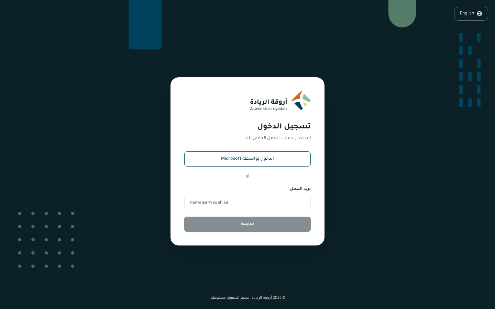
من يستطيع الدخول
- الموظفون الذين أنشأ لهم قسم الموارد البشرية حسابًا فقط. لا يوجد تسجيل ذاتي، والحساب المعطّل يُرفض.
- لا مفتاح صلاحية لهذه الصفحة: هي لكل من لم يدخل بعد.
ما يمكنك فعله
| الإجراء | ماذا يحدث | مفتاح الصلاحية |
|---|---|---|
| الدخول بواسطة Microsoft | تدخل بحساب الشركة في مايكروسوفت، ثم يُطلب رمز التطبيق | لا يلزم |
| كتابة بريد العمل ثم «متابعة» | ينتقل بك إلى خانة الرمز | لا يلزم |
| إدخال رمز التطبيق (6 أرقام) ثم «دخول» | يفتح لك المنصة | لا يلزم |
| «تغيير البريد» | يرجعك لكتابة بريد آخر | لا يلزم |
| «استخدام رمز احتياطي» | تدخل برمز من الرموز التي حفظتها عند الربط | لا يلزم |
| «تذكّر هذا الجهاز ولا تطلب الرمز عليه» | يوثّق المتصفح فلا يُطلب الرمز عليه خلال مدة يحددها مدير المنصة | لا يلزم |
خطوات
الدخول المعتاد ببريد العمل
- اكتب بريد العمل واضغط «متابعة». إن ظهر فحص حماية من الروبوتات فأكمله.
- افتح تطبيق المصادقة وأدخل الرمز المكوّن من 6 أرقام الظاهر لحسابك.
- تفتح لك المنصة. الرمز يتغير كل 30 ثانية.
الدخول بحساب مايكروسوفت
- اضغط «الدخول بواسطة Microsoft» وادخل بحساب الشركة.
- أدخل رمز تطبيق المصادقة في صفحة «التحقق من الهوية» واضغط «متابعة». حتى مع مايكروسوفت يُطلب الرمز.
أول دخول: ربط تطبيق المصادقة
- اكتب بريدك وتابع. تظهر رسالة: «هذا أول دخول لك. أرسلنا إلى بريدك رابطًا يعرض رمز QR».
- افتح الرابط في بريدك. ثبّت تطبيق Microsoft Authenticator أو Google Authenticator على هاتفك.
- في التطبيق أضف حسابًا وامسح رمز QR. إن تعذّر المسح فأدخل المفتاح المعروض يدويًا.
- أدخل الرمز الظاهر في التطبيق واضغط «تأكيد وربط التطبيق».
- تظهر رموز احتياطية، تظهر مرة واحدة فقط وكل رمز يعمل مرة واحدة. انسخها أو نزّلها ملفًّا واحفظها في مكان آمن، ثم «المتابعة».
قواعد العمل
- لا كلمة مرور ولا تسجيل ذاتي، والرسالة عند الخطأ واحدة عامة: «البريد أو الرمز غير صحيح» (لا تكشف أيهما الخطأ). (FR-01)
- الرمز لا يُقبل مرتين: كل رمز يُستعمل مرة واحدة، فإن رُفض رمزك فانتظر الرمز التالي. (FR-01)
- بعد 5 رموز خاطئة يُقفل الحساب مؤقتًا (15 دقيقة) فتظهر «محاولات كثيرة. حاول بعد قليل». (FR-01)
- أكثر من 5 محاولات دخول في الدقيقة تظهر «محاولات كثيرة. انتظر دقيقة ثم حاول مجددًا».
- الدخول بحساب مايكروسوفت للشركة وحدها ولموظف أُنشئ حسابه مسبقًا. إن ظهر «الدخول بحساب Microsoft غير مُعدّ بعد» فتواصل مع مسؤول النظام. (FR-03)
- لا يُضاف موظف ببريد خارج النطاقات التي حددها مدير النظام.
- الجلسة تنتهي بعد 12 ساعة، وتنتهي فورًا إن عُطّل حسابك.
- الدخول بالبريد يطلب الرمز دائمًا. أما «الجهاز الموثوق» فيتخطى الرمز فقط بعد الدخول بمايكروسوفت، وللمدة التي حددها مدير المنصة.
- يُسجَّل الدخول في سجل التدقيق. (FR-11)
نصائح ومشكلات شائعة
| المشكلة | السبب | الحل |
|---|---|---|
| الرمز مرفوض | الرمز استُخدم من قبل، أو ساعة هاتفك غير مضبوطة | انتظر الرمز التالي، وتأكد من ضبط الوقت تلقائيًا في الهاتف |
| ظهر «محاولات كثيرة» | تجاوزت المحاولات المسموحة | انتظر ثم أعد المحاولة |
| فقدت هاتفك | لا رمز متاح | استعمل «استخدام رمز احتياطي»، أو اطلب من الموارد البشرية إعادة تعيين التطبيق فتصلك دعوة جديدة بالبريد |
| الرابط غير صالح أو انتهت صلاحيته | رابط ربط التطبيق قديم | اطلب من الموارد البشرية دعوة جديدة |
| لم يصلني رابط QR | البريد في الرسائل غير المرغوبة أو الحساب غير مفعّل | افحص البريد المزعج ثم راجع الموارد البشرية |
| «لم ينجح فحص الحماية» | فحص الروبوتات لم يكتمل | أعد المحاولة |
3. الرئيسية
الصفحة الأولى بعد الدخول: ملخّصك اليومي في مكان واحد. أرقام مهامك وتذاكرك وما يحتاج انتباهك الآن، ورسوم بيانية لها، ومصفوفة المهام، وللمديرين إحصاءات الموظفين. كل رقم يفتح القائمة التي يعدّها فتصل إلى التفاصيل بضغطة واحدة.
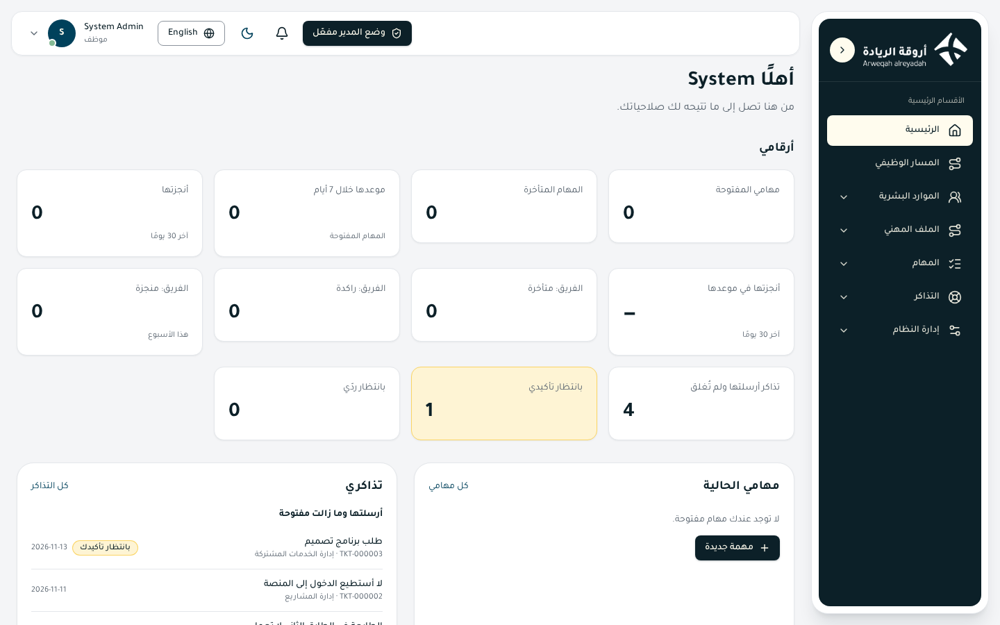
من يراها
- الصفحة لكل موظف ولا تحتاج مفتاح عرض خاصًّا بها. أقسامها تظهر بحسب ما تملكه من مفاتيح (انظر الجدول)، وتختفي من الصفحة إن أخفى مدير النظام الصفحة المرتبطة بها عن دورك.
- لا تحتاج وضع مدير المنصة.
- الدور «موظف» يملك مفتاح المهام والتذاكر بنطاق «سجله فقط»، فيرى أرقامه هو. رئيس الوحدة يملك مصفوفة المهام بنطاق «وحدته وما تحتها»، فتظهر له أرقام الفريق وإحصاءات الموظفين.
| القسم في الصفحة | ما يلزم لرؤيته | الدور الافتراضي |
|---|---|---|
| «أرقامي» (المهام) ومهامي الحالية | tasks.view (عرض صفحة مهامي وتفاصيل المهمة) | موظف، رئيس الوحدة |
| أرقام التذاكر و«تذاكري» | tickets.view (عرض صفحة التذاكر وتفاصيلها) | موظف، رئيس الوحدة |
| مصفوفة المهام | tasks.matrix_view (عرض مصفوفة المهام) | رئيس الوحدة (وحدته وما تحتها)؛ والموظف إن مُنحت له |
| أرقام الفريق | نطاق يتجاوز «سجله فقط» في المهام | رئيس الوحدة |
| إحصاءات الموظفين | employees.view (عرض الموظفين) بنطاق أوسع من «سجله فقط» | رئيس الوحدة، الموارد البشرية، مدير النظام |
ما يمكنك فعله
| الإجراء | ماذا يحدث | مفتاح الصلاحية |
|---|---|---|
| النقر على رقم في «أرقامي» | يفتح قائمة المهام أو التذاكر التي يعدّها (مثلًا «المهام المتأخرة» تفتح المهام مصفّاة بالمتأخرة) | tasks.view / tickets.view |
| النقر على عنوان مهمة في «مهامي الحالية» | يفتح تفاصيل المهمة ومحادثتها | tasks.view |
| «كل مهامي» | يفتح صفحة المهام | tasks.view |
| «مهمة جديدة» (تظهر إن لم تكن عندك مهام مفتوحة) | يفتح نموذج مهمة جديدة | tasks.create (إنشاء مهمة) |
| «كل التذاكر» | يفتح صفحة التذاكر | tickets.view |
| اختيار «عرض» في المصفوفة: «مهامي» أو «مهام فريقي» | يبدّل المهام المعروضة | tasks.matrix_view |
ماذا ترى
- أرقامي (المهام): مهامي المفتوحة، المهام المتأخرة، موعدها خلال 7 أيام، أنجزتها (آخر 30 يومًا)، أنجزتها في موعدها (نسبة)، وبطاقتان تظهران عند وجود ما ينتظرك: «بانتظار مراجعتي» و«بانتظار اعتمادي».
- أرقام الفريق (لمن يملك نطاق فريق): الفريق: متأخرة، الفريق: راكدة، الفريق: منجزة (هذا الأسبوع).
- أرقام التذاكر: تذاكر أرسلتها ولم تُغلق، بانتظار تأكيدي، بانتظار ردّي.
- مهامي الحالية: أقرب المهام المفتوحة بحسب الموعد، مع شريط يقسّم مهامك المفتوحة بحسب الحالة.
- تذاكري: ما أرسلته وما زال مفتوحًا، وما ينتظر ردّك، وما ينتظر تأكيدك.
- رسوم بيانية: المهام المفتوحة حسب الحالة، والمنتهية في الموعد والمتأخرة، وتذاكري حسب الحالة، والموظفون (النشطون والهويات والعقود).
- مصفوفة المهام: مهامك المفتوحة في أربعة مربعات بحسب الأهمية والاستعجال: «مهمة وعاجلة» (ابدأ بها أولًا)، «مهمة وغير عاجلة» (خطّط لها قبل أن تصير عاجلة)، «عاجلة وغير مهمة» (أنهِها بسرعة أو سلّمها لغيرك)، «لا هذه ولا تلك» (افعلها حين يتسع الوقت).
- إحصاءات الموظفين: الموظفون، على رأس العمل، هويات تنتهي أو منتهية (خلال 30 يومًا)، عقود تنتهي قريبًا (خلال 30 يومًا)، وبطاقة «بحاجة لتعيين وحدة» حين يوجد موظف بلا وحدة.
خطوات
معرفة ما يحتاج انتباهك
- افتح الرئيسية وانظر البطاقات ذات اللون المنبّه (أحمر أو أصفر): المتأخرة، وما ينتظر ردّك أو تأكيدك أو اعتمادك.
- اضغط البطاقة ليفتح لك ما تعدّه.
- أنجز المطلوب وعد إلى الرئيسية لترى الرقم وقد نقص.
ترتيب أولوياتك بالمصفوفة
- انظر مربع «مهمة وعاجلة» وابدأ بمهامه.
- خطّط لمهام «مهمة وغير عاجلة» قبل أن يقترب موعدها.
- إن كنت مديرًا فبدّل «عرض» إلى «مهام فريقي» لترى مهام فريقك.
قواعد العمل
- المهمة «مهمة» إذا كانت أولويتها عالية، و«عاجلة» إذا اقترب موعدها أو فات أو عُلّمت عاجلة. (FR-49)
- الأرقام والأقسام تُحسب من نطاقك فقط؛ ما خارجه لا يدخل في أي رقم.
- بطاقتا «بانتظار مراجعتي» و«بانتظار اعتمادي» لا تظهران إلا عند وجود شيء ينتظرك.
- إحصاءات الموظفين تخص غيرك، فالموظف العادي (نطاقه «سجله فقط») لا يراها.
- يظهر ترحيب باسمك الأول في أعلى الصفحة.
نصائح
- إن لم يظهر لك قسم فلأن مفتاحه غير عندك أو صفحته مخفية عن دورك؛ راجع «صلاحياتي».
- الأرقام «0» ليست خللًا: تعني أنه لا شيء ينتظرك.
4. جولة الترحيب
جولة إرشادية تظهر لك مرة واحدة عند أول دخول: تُعتّم الشاشة وتُبرز عناصرها الحقيقية واحدًا واحدًا، وتشرح كل عنصر بفقاعة فيها عنوان ونص وأزرار «التالي» و«السابق» و«تخطّي». تبدأ بحسابك ثم الرئيسية ثم الصفحات التي تملكها. للمدير جولة منفصلة لصفحات الإدارة، وله صفحة في الإعدادات لتعديل نصوص الجولة.
من يراها
- الجولة العامة: لكل موظف عند أول دخول، ولا تحتاج مفتاح صلاحية.
- جولة الإدارة: لمن يملك
admin_mode.use(«استخدام وضع مدير المنصة») عند أول تفعيل لوضع المدير؛ ولغيره تظهر كأنها غير موجودة. - صفحة إعدادات الجولة (الإعدادات ثم تبويب «جولة الترحيب»): في وضع مدير المنصة، وتحتاج
tour.settings_view(«عرض إعدادات جولة الترحيب»). تُعطى لدور مدير النظام وحده افتراضيًا.
ما يمكنك فعله
في الجولة نفسها (كل موظف)
| الإجراء | ماذا يحدث | مفتاح الصلاحية |
|---|---|---|
| «التالي» / «السابق» (أو الأسهم) | تنتقل بين الخطوات، حتى بين الصفحات | لا يلزم |
| «تخطّي» (أو Esc) | تنهي الجولة ويُسجَّل أنك تخطّيتها | لا يلزم |
| «تم» في آخر خطوة | تُسجَّل الجولة مكتملة | لا يلزم |
| «أعد الجولة» من قائمة حسابك أو من «الملف الشخصي» | تبدأ الجولة العامة من أولها | لا يلزم |
| «أرني الجديد» في بطاقة «في جديد في المنصة» | تعرض الخطوات الجديدة فقط | لا يلزم |
| «لاحقًا» في تلك البطاقة | تؤجل، وتُحتسب الخطوات مشاهَدة | لا يلزم |
في صفحة إعدادات الجولة (للمدير)
| الإجراء | ماذا يحدث | مفتاح الصلاحية |
|---|---|---|
| عرض القائمة | جدول الخطوات: الخطوة، الترتيب، الجولة (العامة / الإدارة)، الحالة (ظاهرة / موقوفة)، آخر تعديل. مع طريقة عرض جدول أو بطاقات | tour.settings_view (عرض إعدادات جولة الترحيب) |
| البحث والمرشحات | بحث في العنوان والنص، وفلتر بالجولة وبالحالة وبـ«عُدِّلت عن الأصل» | tour.settings_view |
| أيقونة «تعديل» (أو النقر على الصف) | تفتح نافذة فيها العنوان والنص بالعربية والإنجليزية ومفتاح «الخطوة ظاهرة في الجولة» | tour.settings_edit (تعديل نص خطوة في جولة الترحيب وتفعيلها أو إيقافها) |
| أيقونتا «قدّم الخطوة» و«أخّر الخطوة» | تحرّكان الخطوة في الترتيب | tour.settings_reorder (إعادة ترتيب خطوات جولة الترحيب) |
| أيقونة «إعادة إلى الأصل» (تظهر للخطوة المعدَّلة فقط) | بعد التأكيد يعود نص الخطوة وترتيبها وظهورها إلى ما في النظام | tour.settings_reset (إعادة خطوة في جولة الترحيب إلى نصّها الأصلي) |
| «تصدير» | يصدّر قائمة الخطوات إلى Excel أو CSV | tour.settings_export (تصدير قائمة خطوات جولة الترحيب) |
خطوات
إعادة الجولة
- اضغط اسمك في الشريط العلوي لتفتح قائمة حسابك.
- اضغط «أعد الجولة». (أو من «الملف الشخصي» ثم قسم «جولة الترحيب» ثم «أعد الجولة».)
تعديل نص خطوة (للمدير)
- فعّل وضع مدير المنصة، ثم افتح «الإعدادات» وتبويب «جولة الترحيب».
- انقر على الخطوة أو أيقونة التعديل.
- اكتب العنوان والنص بالعربية والإنجليزية. اترك الحقل فارغًا ليظهر النص الأصلي. النص عادي بلا تنسيق.
- أوقف مفتاح «الخطوة ظاهرة في الجولة» إن أردت إخفاءها، ثم احفظ.
- لإرجاع الأصل اضغط أيقونة «إعادة إلى الأصل» وأكّد.
قواعد العمل
- تُسجَّل نتيجة الجولة (أتممتها أو تخطّيتها) في حسابك لا في المتصفح، فلا تعود إليك من جهاز آخر. (FR-67)
- كل خطوة تظهر لمن يملك مفتاح صفحتها ولم تُخفَ عنه فقط؛ فيرى شخصان قائمتين مختلفتين. وتذكر كل خطوة سطرًا لكل ما تستطيع فعله هناك.
- الخطوة التي لا يظهر عنصرها (مثلًا على الجوال أو بلا بيانات) تُتخطّى بصمت.
- بعد نشر خطوات جديدة تُعرض على من أنهى جولته بطاقة «في جديد» بالجديد فقط.
- جولة الإدارة تبدأ عند أول تفعيل لوضع المدير، وتُسجَّل مستقلة عن الجولة العامة.
- مدير النظام يعدّل النصوص والترتيب والظهور فقط. الخطوات نفسها (ما يُبرَز ومكانه) تأتي مع النظام ولا تُضاف ولا تُحذف من الإعدادات، ولا يرى المدير تقدّم أي موظف في الجولة.
- كل تعديل أو إعادة للأصل أو إعادة ترتيب يُسجَّل في سجل التدقيق.
نصائح
- للتنقل بلوحة المفاتيح: الأسهم للتنقل، وEsc للتخطي.
- إن ضاعت الجولة منك فأعدها في أي وقت.
حسابي
5. الملف الشخصي
صفحتك الخاصة: تضبط فيها مظهر المنصة ولغتها، وتعدّل بيانات التواصل الخاصة بك، وترى بيانات عملك كما يحفظها قسم الموارد البشرية، وتعيد جولة الترحيب إن أردت.
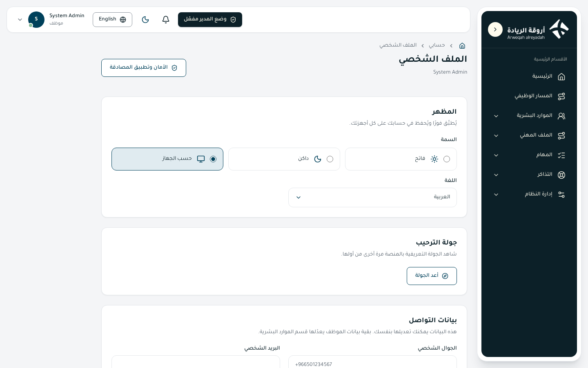
من يراها
- مفتاح العرض:
profile.view(«عرض الملف الشخصي»)، ومفتاح التعديلprofile.update(«تعديل بياناتي الشخصية والتفضيلات»). نطاقهما «كل» لأنهما يخصّان حسابك أنت وحدك. - يملكهما كل من له الدور موظف، ورؤساء الوحدات، وكل من يحمل «أساس المتعاون».
- تجدها في قائمة حسابك (اضغط اسمك في الشريط العلوي ثم «الملف الشخصي»).
- لا تحتاج وضع مدير المنصة.
ما يمكنك فعله
| الإجراء | ماذا يحدث | مفتاح الصلاحية |
|---|---|---|
| اختيار السمة: فاتح، داكن، حسب الجهاز | يتغير مظهر المنصة فورًا ويُحفظ في حسابك | profile.update (تعديل بياناتي الشخصية والتفضيلات) |
| اختيار اللغة: العربية، English | تتبدل اللغة واتجاه الصفحة فورًا ويُحفظ اختيارك | profile.update |
| تعديل الجوال الشخصي | يُحفظ رقمك للتواصل | profile.update |
| تعديل البريد الشخصي | يُحفظ بريدك الشخصي | profile.update |
| تعديل الاسم بالإنجليزية | يُحفظ اسمك بالإنجليزية | profile.update |
| «حفظ التغييرات» | يحفظ بيانات التواصل ويظهر «تم حفظ التغييرات» | profile.update |
| «أعد الجولة» | تبدأ جولة الترحيب من أولها | لا يلزم (لكل موظف) |
| رابط «الأمان وتطبيق المصادقة» | ينقلك إلى صفحة الأمان | security.view (عرض صفحة الأمان) |
خطوات
تغيير اللغة أو المظهر
- افتح «الملف الشخصي» من قائمة حسابك.
- في قسم «المظهر» اختر السمة (فاتح، داكن، حسب الجهاز) واللغة.
- يُطبَّق الاختيار فورًا ويُحفظ على كل أجهزتك.
تحديث بيانات التواصل
- في قسم «بيانات التواصل» اكتب الجوال الشخصي بالصيغة الدولية، مثل
+966501234567. - اكتب البريد الشخصي والاسم بالإنجليزية (حروف إنجليزية ومسافات فقط).
- اضغط «حفظ التغييرات».
رؤية بيانات عملك
في قسم «بيانات العمل» تقرأ: الرقم الوظيفي، الشركة، الوحدة، المسمى الوظيفي، المدير المباشر، بريد العمل، وتاريخ البداية. هذه للقراءة فقط.
قواعد العمل
- تعدّل بنفسك ثلاثة أشياء فقط: الجوال الشخصي والبريد الشخصي والاسم بالإنجليزية. بقية بيانات الموظف يعدّلها قسم الموارد البشرية.
- الجوال بالصيغة الدولية (مثل +966501234567) وإلا تظهر «اكتب الجوال بالصيغة الدولية»، والبريد صحيح الشكل، والاسم الإنجليزي حروف ومسافات فقط.
- السمة واللغة تُحفظان في حسابك وليس في المتصفح، فتظهران كما اخترتهما على أي جهاز.
- إن لم يكن حسابك مرتبطًا بسجل موظف فتظهر لك إعدادات المظهر فقط مع تنبيه بذلك.
- تعديل بياناتك يُسجَّل في سجل التدقيق.
نصائح
- لم يظهر لك زر «حفظ التغييرات»؟ لا تملك
profile.update؛ اطلبه من مدير النظام. - تغيير الاسم بالعربية أو بيانات العمل يطلب من الموارد البشرية.
6. الإشعارات
تنبّهك المنصة بما يخصّك: ردّ على تذكرتك، أو مهمة أُسندت إليك، أو ذكر اسمك في محادثة، أو شيء ينتظر موافقتك. تصلك الإشعارات من الجرس في الشريط العلوي، وكلها مجتمعة في صفحة الإشعارات.
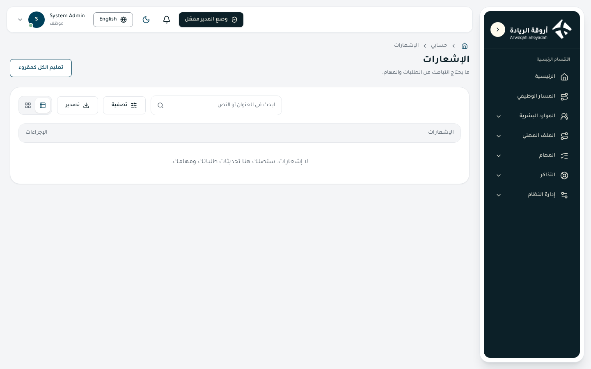
من يراها
- مفتاح العرض:
notifications.view(«عرض صفحة الإشعارات والجرس»)، نطاقه «كل» لأن الإشعارات لك أنت وحدك. - يملكه كل من له الدور موظف، ورؤساء الوحدات، وأساس المتعاون. لا تحتاج وضع مدير المنصة.
- لا يرى أحد إشعارات غيره.
ما يمكنك فعله
| الإجراء | ماذا يحدث | مفتاح الصلاحية |
|---|---|---|
| الضغط على الجرس | تفتح قائمة فيها آخر خمسة إشعارات ورابط «عرض كل الإشعارات» | notifications.view (عرض صفحة الإشعارات والجرس) |
| النقر على إشعار في الجرس أو في الصفحة | يفتح الصفحة المعنية ويُعلَّم مقروءًا | notifications.view |
| «تعليم الكل كمقروء» (في الجرس وفي الصفحة) | كل إشعاراتك تصبح مقروءة | notifications.mark_read (تعليم الإشعارات كمقروءة) |
| أيقونة «تعليم كمقروء» على الصف | يُعلَّم هذا الإشعار وحده | notifications.mark_read |
| أيقونة «فتح» على الصف | يفتح الصفحة المرتبطة بالإشعار | notifications.view |
| البحث في العنوان أو النص | يضيّق القائمة | notifications.view |
| مرشحات: الحالة (غير مقروء / مقروء)، من تاريخ، إلى تاريخ | تضيّق القائمة | notifications.view |
| «تصدير» | يصدّر إشعاراتك إلى Excel أو CSV (النطاق والأعمدة) | notifications.export (تصدير الإشعارات) |
خطوات
قراءة إشعاراتك
- انظر الجرس: الرقم الأصفر عليه عدد غير المقروء (يظهر «99+» إن زاد).
- اضغط الجرس، ثم اضغط الإشعار لتذهب مباشرة إلى المهمة أو التذكرة المعنية.
- للأقدم اضغط «عرض كل الإشعارات».
البحث عن إشعار قديم
- افتح صفحة «الإشعارات».
- اكتب كلمة في مربع البحث، أو اختر «غير مقروء» أو حدّد تواريخ.
- افتح الإشعار بالنقر على صفه.
تصدير إشعاراتك
- في الصفحة اضغط «تصدير».
- اختر النطاق (الصفوف الظاهرة أو كل النتائج) والأعمدة (العنوان، النص، الوقت، الحالة) ونوع الملف.
- اضغط «تصدير».
قواعد العمل
- الإشعارات داخل المنصة تصلك فورًا، وبعضها يصلك بالبريد أيضًا في الخلفية. البريد لا يحمل أبدًا نص التعليقات والمحادثات. (FR-08)
- الإشعار غير المقروء يظهر بخط أثقل، والمقروء بلون أخفت.
- النقر على إشعار له رابط يُعلّمه مقروءًا تلقائيًا ويفتح الرابط. الإشعار بلا رابط لا يفتح شيئًا.
- يصلك إشعار حين تُسند إليك مهمة، أو يُردّ على تذكرتك، أو يُذكر اسمك بـ
@في محادثة، أو يُطلب منك تأكيد أو اعتماد، وحين ينتهي من دخل بحسابك (مدير النظام) من جلسته. - ما لا تملك مفتاحه لا يظهر: من لا يملك
notifications.mark_readلا يرى أزرار التعليم كمقروء.
نصائح
- لا ترى الجرس أو الصفحة؟ لا تملك
notifications.viewأو صفحة الإشعارات مخفية عن دورك. - تصلك رسالة بريد ولا ترى إشعارًا؟ افتح الصفحة وامسح المرشحات؛ قد يكون مفلترًا على «غير مقروء».
7. الأمان
صفحة تبيّن لك كيف يُحمى دخولك إلى المنصة، وتتيح لك مراقبة الأجهزة المسجَّل دخولك عليها وإنهاء ما لا تعرفه. لا توجد كلمة مرور في المنصة؛ تطبيق المصادقة على هاتفك هو المفتاح.
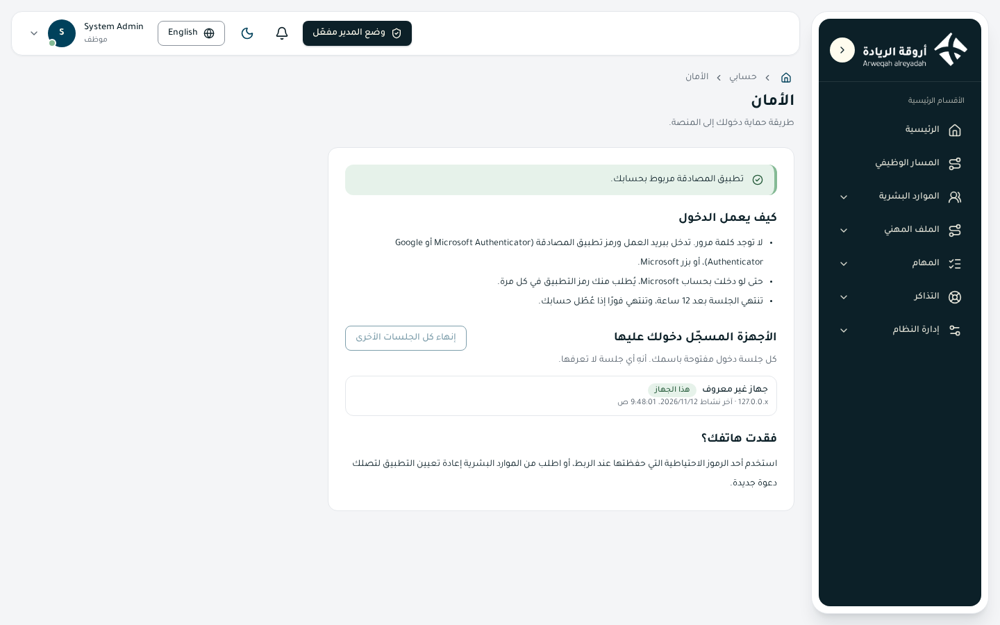
من يراها
- مفتاح العرض:
security.view(«عرض صفحة الأمان»)، نطاقه «كل» لأنها تخص حسابك أنت. - يملكه كل من له الدور موظف، ورؤساء الوحدات، وأساس المتعاون. تجدها في قائمة حسابك. لا تحتاج وضع مدير المنصة.
- إعدادات الأمان للشركة كلها (الأجهزة الموثوقة وحدود الطلبات والدخول بحساب موظف آخر) صفحة أخرى لمدير النظام: الإعدادات ثم تبويب «الأمان»، ويلزمها
security_settings.view(«عرض إعدادات الأمان (الأجهزة الموثوقة وحدود الطلبات)») وsecurity_settings.edit(«تعديل إعدادات الأمان») في وضع مدير المنصة.
ما يمكنك فعله
| الإجراء | ماذا يحدث | مفتاح الصلاحية |
|---|---|---|
| قراءة حالة تطبيق المصادقة | تبيّن لك أنه مربوط بحسابك أم لا | security.view (عرض صفحة الأمان) |
| «إنهاء الجلسة» على جهاز | تنتهي تلك الجلسة ويُطلب الدخول من جديد عليه | security.view |
| «إنهاء كل الجلسات الأخرى» | تنتهي كل الجلسات ما عدا جلستك الحالية | security.view |
| «إلغاء التوثيق» لجهاز موثوق | يُطلب الرمز على ذلك المتصفح من جديد | security.view |
| «تذكّر هذا الجهاز ولا تطلب الرمز عليه» | يوثّق المتصفح الحالي | security.view |
ماذا في الصفحة
- تنبيه الحالة: «تطبيق المصادقة مربوط بحسابك» (أخضر) أو «لم يُربط تطبيق المصادقة بعد» (أصفر).
- كيف يعمل الدخول: لا كلمة مرور، وتدخل ببريد العمل ورمز التطبيق أو بزر Microsoft؛ وحتى مع Microsoft يُطلب الرمز في كل مرة؛ والجلسة تنتهي بعد 12 ساعة، وفورًا إن عُطّل حسابك.
- الأجهزة المسجّل دخولك عليها: كل جلسة مفتوحة باسمك، مع اسم الجهاز وآخر نشاط، وعلامة «هذا الجهاز» على جلستك الحالية.
- أجهزة موثوقة: المتصفحات التي وثّقتها وتاريخ انتهاء الثقة.
- فقدت هاتفك؟ إرشاد بما تفعله.
خطوات
إنهاء جلسة لا تعرفها
- افتح «الأمان» من قائمة حسابك.
- في «الأجهزة المسجّل دخولك عليها» ابحث عن جهاز أو وقت لا تعرفه.
- اضغط «إنهاء الجلسة» عليه، أو «إنهاء كل الجلسات الأخرى» إن شككت في حسابك.
- بلّغ الموارد البشرية أو مدير النظام إن اشتبهت باختراق.
إذا فقدت هاتفك
- على صفحة الدخول اختر «استخدام رمز احتياطي» وأدخل أحد الرموز التي حفظتها عند الربط (كل رمز مرة واحدة).
- إن لم تجدها فاطلب من الموارد البشرية إعادة تعيين التطبيق؛ تصلك دعوة جديدة بالبريد لتربط التطبيق من جديد.
قواعد العمل
- تطبيق المصادقة إلزامي، ولا يعمل شيء في المنصة قبل ربطه. (FR-02)
- لا تعدّل الربط من هذه الصفحة؛ إعادة التعيين تتم بطلب إلى الموارد البشرية.
- الجهاز الموثوق يتخطى طلب الرمز فقط بعد الدخول بحساب مايكروسوفت وإدخال الرمز مرة، ولمدة يحددها مدير المنصة. الدخول بالبريد يطلب الرمز دائمًا. إن كانت المدة 0 فالخيار موقوف (وهو الافتراضي).
- أي إنهاء جلسة أو إلغاء توثيق يسري فورًا.
- مدير النظام الذي يدخل بحسابك (ميزة «الدخول بحساب موظف آخر») لا يستطيع تغيير أمانك من داخل الجلسة، ويصلك إشعار بعد انتهائها.
- عند تعطيل حسابك تنتهي كل جلساتك فورًا.
نصائح
- جلسة باسم متصفح أو مدينة لا تعرفها؟ أنهِها فورًا.
- على جهاز مشترك لا توثّق الجهاز، واخرج من القائمة العلوية عند الانتهاء.
8. صلاحياتي
صفحة تقرأ فيها ما يمكنك فعله في المنصة الآن، وأي دور أو مجموعة تمنحك كل صلاحية، ومدى وصول كل صلاحية. هي لك وحدك ولا يراها غيرك. أول ما تفتحها حين تسأل: «لماذا لا أرى هذه الصفحة؟» أو «لماذا لا أستطيع هذا الزر؟».
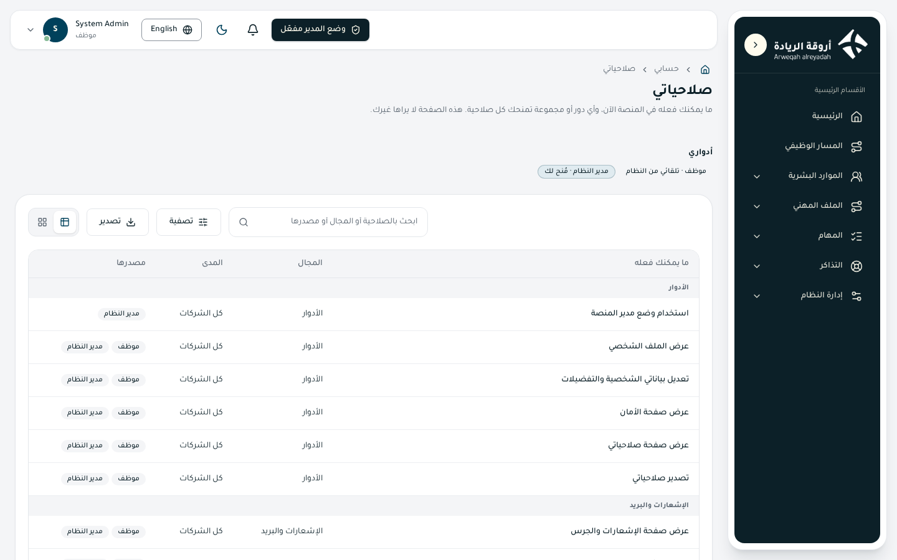
من يراها
- مفتاح العرض:
my_access.view(«عرض صفحة صلاحياتي»)، ومفتاح التصديرmy_access.export(«تصدير صلاحياتي»). نطاقهما «كل» لأنها تخص حسابك. - يملكهما كل من له الدور موظف، ورؤساء الوحدات، وأساس المتعاون. تجدها في قائمة حسابك. لا تحتاج وضع مدير المنصة.
ما يمكنك فعله
| الإجراء | ماذا يحدث | مفتاح الصلاحية |
|---|---|---|
| قراءة «أدواري» | ترى أدوارك، وعلى كل دور علامة «تلقائي من النظام» أو «مُنح لك» | my_access.view (عرض صفحة صلاحياتي) |
| تصفح الجدول | ترى كل صلاحية: «ما يمكنك فعله» و«المجال» و«المدى» و«مصدرها» مجمّعة بحسب المجال | my_access.view |
| البحث | بالصلاحية أو المجال أو مصدرها | my_access.view |
| المرشحات: المجال، المدى، المصدر | تضيّق القائمة | my_access.view |
| «تفعيل وضع مدير المنصة» من التنبيه | يظهر لمن لديه دور إداري مخفي (انظر القواعد) | admin_mode.use (استخدام وضع مدير المنصة) |
| «تصدير» | يصدّر قائمة صلاحياتك إلى Excel أو CSV | my_access.export (تصدير صلاحياتي) |
أعمدة الجدول
| العمود | معناه |
|---|---|
| ما يمكنك فعله | اسم الصلاحية (كل صفحة وكل زر) |
| المجال | القسم الذي تتبع له: المهام، التذاكر، الموظفون… |
| المدى | إلى أين تصل: سجله فقط، وحدته، وحدته وما تحتها، شركته كاملة، كل الشركات، أو «وحدته ومستوى (أو أكثر) تحتها» |
| مصدرها | من أين جاءت: دور، أو مجموعة أدوار، أو مجموعة أشخاص، أو «مُنحت لك مباشرة» |
خطوات
معرفة سبب ما لا تراه
- افتح «صلاحياتي».
- اكتب في البحث اسم ما تريده (مثل «تصدير» أو «الموظفين»).
- إن لم تجده فأنت لا تملكه، فاطلبه من مدير النظام واذكر له اسم الصفحة أو الزر الذي لا تصل إليه.
- إن وجدته فانظر «المدى»: قد تملكه لكن بمدى أضيق مما ظننت (مثلًا «سجله فقط»).
معرفة مصدر صلاحية
انظر عمود «مصدرها». إن كان دورًا تلقائيًا (مثل رئيس الوحدة) فهو يتغير بتغيّر موقعك في الهيكل.
قواعد العمل
- القراءة فقط؛ لا تُعدَّل الصلاحيات من هنا بل من صفحة الصلاحيات أو الأدوار عند مدير النظام.
- إن كان لك دور إداري (مثل مدير النظام) فصلاحياته مخفية هنا إلى أن تفعّل وضع مدير المنصة، وتظهر لك عبارة بذلك مع زر التفعيل.
- إن حملت الصلاحية الواحدة من أكثر من مصدر فالأوسع مدى هو المعتمد.
- لا يستطيع أحد أن يمنح غيره صلاحية أوسع مما يملك هو.
- الصفحة تُقرأ مرة بعد الدخول وتُحدَّث عند تغيير وضع المدير.
نصائح
- جدول طويل؟ استعمل البحث والمرشحات، أو غيّر العرض إلى بطاقات.
- أرسل التصدير لمدير النظام حين تطلب صلاحية، فيرى ما عندك بالضبط.
الموارد البشرية
9. الموظفون
صفحة «الموظفون» هي دليل سجلات الموظفين وحسابات دخولهم. منها يضيف مسؤول الموارد البشرية موظفًا جديدًا، ويعدّل بياناته، ويعطّل حسابه أو ينهي علاقته، ويرى تاريخ وحدته ومسماه ومديره. وفيها تبويب ثانٍ باسم «فريقي المهني» لزملاء وحدتك. ما تراه في هذه الصفحة يتبع صلاحياتك ونطاقها.
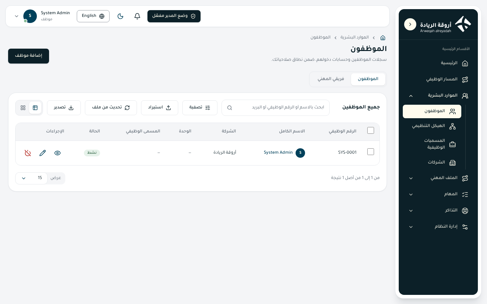
من يراها
- مفتاح العرض:
employees.view(«عرض الموظفين»). النطاق: «ما يخصّني» أو الوحدة أو الوحدة وما تحتها أو الشركة أو الكل. - دور «موظف» (يناله كل شخص تلقائيًا) يملكها بنطاق «ما يخصّني»: يرى الموظف سجله هو فقط.
- دور قائد الوحدة (يُنشأ تلقائيًا لكل وحدة من الهيكل) يملكها بنطاق «الوحدة وما تحتها»، ومعها عرض سجل الموظف (التسكين والتغييرات).
- أدوار الموارد البشرية ومدير النظام تُضبط صلاحياتها من صفحة الأدوار؛ لا صلاحيات جاهزة لأدوار الموارد البشرية قبل أن يحددها مدير النظام.
- لا تحتاج هذه الصفحة إلى «وضع مدير المنصة». وكل زر فيها يظهر فقط لمن يملك مفتاحه.
- تبويب «فريقي المهني» يظهر لمن يملك «عرض فريقي (زملاء وحدتي)» (
directory.view) أو «عرض «فريقي المهني»» (career_team.view)، ما لم يُخفِ مدير النظام الصفحة عن الدور.
ماذا يمكنك أن تفعل
| الإجراء | ماذا يحدث | المفتاح (الاسم في صفحة الصلاحيات) |
|---|---|---|
| إضافة موظف | يفتح نموذج الإضافة على خطوتين، ويُنشأ للموظف حساب دخول وتصله دعوة تفعيل | employees.create (إضافة موظفين) |
| عرض (أيقونة العين أو النقر على السطر) | يفتح صفحة الموظف | employees.view (عرض الموظفين) |
| تعديل (قلم) | يفتح النموذج لتعديل الحقول المسموحة لك | employees.update (تعديل بيانات الموظفين) |
| تعطيل / تفعيل (أيقونة التشغيل) | يمنع الموظف من الدخول وتنتهي جلساته فورًا، أو يعيد له الدخول | employees.deactivate (تعطيل الموظفين وتفعيلهم) |
| الدخول بحساب الموظف (أيقونة) | يعمل المسؤول بحساب الموظف ليرى ما يراه | impersonation.start (الدخول بحساب موظف آخر) |
| تحديد عدة موظفين ثم «تعديل جماعي» | يغيّر الوحدة أو المسمى أو المدير أو مقر العمل أو نمطه أو نوع العلاقة لعدة موظفين | employees.bulk_update (تعديل جماعي لبيانات الموظفين) مع employees.assign_change عند تغيير الوحدة أو المسمى أو المدير |
| تصدير | يحمّل قائمة الموظفين (النطاق والأعمدة ونوع الملف تختارها أنت) | employees.export (تصدير الموظفين) |
| استيراد | يضيف موظفين من ملف Excel أو CSV بقالب | employees.import (استيراد الموظفين من ملف) |
| تحديث من ملف | يحدّث موظفين موجودين بالرقم الوظيفي | employees.update (تعديل بيانات الموظفين) |
| الأدوار / المجموعات (في صفحة الموظف) | يحدد أدوار الموظف أو مجموعات الأدوار | employees.assign_roles (تعيين أدوار الموظفين) وemployees.assign_groups (تعيين مجموعات أدوار للموظف) |
| إنهاء العلاقة | يسجّل تاريخ نهاية العقد وسببه | employees.terminate (إنهاء علاقة الموظف) |
| إعادة إرسال الدعوة | يرسل رابط تفعيل جديدًا بالبريد | employees.resend_invite (إعادة إرسال رابط التفعيل) |
| إعادة تعيين تطبيق المصادقة | تنتهي جلسات الموظف ويصله رابط ليربط التطبيق من جديد | employees.reset_authenticator (إعادة ضبط تطبيق المصادقة) |
| تغيير الصورة | يضيف صورة الموظف أو يغيّرها أو يزيلها | employees.photo_update (تغيير صورة الموظف) |
| تبويب «السجل» | يعرض الوحدة والمسمى والمدير عبر الزمن وسجل التغييرات | employees.history_view (عرض سجل الموظف) |
| إلغاء تغيير مؤجل (في السجل) | يلغي تغييرًا ينتظر يومه | employees.assign_change (تغيير وحدة الموظف أو مسماه أو مديره بتاريخ سريان) |
| رؤية الهوية والآيبان والراتب | تظهر القيم بدل أن تكون مخفية | employees.view_sensitive (عرض البيانات الحساسة) |
في أعلى القائمة بحث بالاسم أو الرقم الوظيفي أو البريد، وفلاتر: الشركة، الحالة، نوع العلاقة، الوحدة (بعد اختيار الشركة)، المسمى (بعد اختيار الوحدة)، نوع العقد، الجنسية، الجنس، نمط العمل، الحالة الاجتماعية، حالة الإقامة، بداية العقد من/إلى، «هوية تنتهي قريبًا»، «عقد ينتهي قريبًا»، «بحاجة لتعيين وحدة». ويمكنك التبديل بين عرض الجدول وعرض البطاقات. أيقونات الإجراءات في آخر كل سطر.
كيف أفعل
إضافة موظف جديد
- اضغط «إضافة موظف» أعلى الصفحة.
- في الخطوة الأولى «بيانات الموظف» املأ الأقسام: بيانات العمل، التواصل، البيانات الشخصية، التعاقد، الراتب والتكلفة، السجل (ملاحظات). الحقول الإلزامية عليها نجمة، وتظهر رسالة الخطأ أسفل الحقل أثناء الكتابة.
- اختر الشركة ثم الوحدة ثم المسمى الوظيفي (الوحدة والمسمى مطلوبان لكل موظف جديد). يُقترح مدير الوحدة مديرًا مباشرًا ويمكنك تغييره أو مسحه.
- اضغط «التالي: الأدوار». يُحدَّد مسبقًا دور «موظف» ودور المسمى الوظيفي، ويمكنك إلغاؤهما أو إضافة أدوار أخرى (ولكل دور تاريخ نهاية اختياري). هذه الخطوة تظهر لمن يملك صلاحية تعيين الأدوار.
- اضغط «حفظ وإرسال الدعوة». يُنشأ حساب الدخول وتصل الموظف رسالة بريد برابط التفعيل، فيربط تطبيق المصادقة عبر رمز QR ويحصل على رموز الاحتياط. الرابط صالح 72 ساعة ويُستعمل مرة واحدة.
تعديل موظف أو تغيير وحدته
- افتح سطر الموظف ثم اضغط «تعديل».
- الحقول التي لا تملك صلاحية تعديلها تكون مقفلة مع تنبيه.
- عند تغيير الوحدة أو المسمى أو المدير يطلب النموذج «يسري من» (اليوم أو يومًا لاحقًا) و«سبب التغيير». التغيير المؤجل ينتظر يومه ثم يسري وحده ويظهر في تبويب «السجل».
- اضغط «حفظ».
تعديل جماعي
- حدّد الموظفين بالمربعات في أول كل سطر (أو مربع الصفحة كلها؛ الحد 500 موظف).
- يظهر شريط «N موظف محدد»؛ اضغط «تعديل جماعي».
- اختر الشركة (لتظهر وحداتها) ثم القيم المراد تغييرها. ما تتركه فارغًا لا يتغير. لتغيير الوحدة أو المسمى أو المدير اكتب «يسري من» و«سبب التغيير». يمكنك أيضًا اختيار «إزالة المدير المباشر».
- اضغط «معاينة»: ترى «سيتغير N» و«سيُرفض N» مع سبب رفض كل شخص. لا يُحفظ شيء في المعاينة.
- اضغط «تطبيق على N موظف». رفض شخص لا يمنع تطبيق التغيير على الباقين.
تعطيل حساب أو إنهاء علاقة
- للتعطيل: اضغط أيقونة التعطيل على السطر أو زر «تعطيل» في صفحة الموظف ثم أكّد. لن يستطيع الدخول وتنتهي جلساته فورًا، ويمكنك تفعيله لاحقًا.
- لإنهاء العلاقة: افتح صفحة الموظف واضغط «إنهاء العلاقة»، اختر تاريخ النهاية والسبب (وإن كان السبب «آخر» فاكتبه)، ثم «تأكيد إنهاء العلاقة».
قواعد العمل
- النطاق: سجل خارج نطاقك يظهر كأنه غير موجود (لا تُعرض رسالة منع). (FR-06، FR-20)
- بريد العمل هو هوية الدخول وحساب Microsoft، ولا يتغير بعد الإضافة. وتُقبل النطاقات المسموحة فقط (الافتراضي arweqah.sa، وتُضبط القائمة من إعدادات الأمان). (FR-77)
- حالات الموظف: نشط، معطّل، «بحاجة لتعيين وحدة» (بلا وحدة أو بلا مسمى). وتظهر شارات: «تطبيق المصادقة مربوط / لم يربط التطبيق بعد»، «هوية تنتهي قريبًا»، «عقد ينتهي قريبًا». (FR-72)
- التحقق من الحقول: العمر من 18 إلى 70، الجوال بصيغة دولية مثل +966501234567، الآيبان سعودي (SA ثم 22 رقمًا)، رقم الهوية يُتحقق منه حسب نوع الهوية والجنسية، وتاريخ النهاية بعد البداية. (FR-17، FR-18)
- البيانات الحساسة: رقم الهوية والآيبان والراتب مشفّرة، وتظهر مخفية لمن لا يملك «عرض البيانات الحساسة»، ولا تُكتب في سجل التدقيق. (FR-21)
- من يعدّل ماذا: قائمة الحقول التي يعدّلها حامل «تعديل بيانات الموظفين» تخصّ كل منحة (دور أو مجموعة أو شخص) وتُضبط بزر «الحقول التي يعدّلها» في صفحة الأدوار والصلاحيات. الموظف العادي يعدّل في سجله هو: هاتف العمل والجوال الشخصي والبريد الشخصي والاسم بالإنجليزية فقط؛ وأي حقل آخر يُرفض. (FR-83، FR-94)
- المدير المباشر غير إلزامي. وخيار «قائد هذه الوحدة» في نموذج العمل يظهر لمن يملك تعيين القادة. (FR-100)
- التعطيل ينهي الجلسات فورًا. إنهاء العلاقة: يبقى الدخول حتى تاريخ النهاية ويتوقف في اليوم التالي (مهمة يومية بعد منتصف الليل بتوقيت الرياض)، وتُنقل مهام الموظف المفتوحة إلى مديره المباشر. (FR-55، FR-71)
- إعادة تعيين تطبيق المصادقة تنهي جلسات الموظف وترسل دعوة جديدة. إعادة إرسال الدعوة تُرسل رابطًا جديدًا (مرة واحدة كل دقيقة لكل بريد).
- السجل: كل تغيير في الوحدة أو المسمى أو المدير يغلق القيمة السابقة في اليوم الذي قبل بدايته، ويُحفظ مع السبب ومن أجراه. التغيير في الماضي غير مقبول. (FR-89، FR-90)
- الصورة: JPEG أو PNG حتى 2 ميغابايت، تُقصّ مربعة بالتكبير والتحريك قبل الرفع؛ عند إزالتها تظهر الحروف الأولى من الاسم. (FR-91)
- «فريقي»: يرى كل موظف زملاء وحدته نفسها فقط ببياناتهم الأساسية (الاسم والصورة والمسمى والبريد والهاتف)، لا الوحدات الأعلى أو الأدنى؛ ومن كان مديرًا لزميل يرى بيانات أوسع عنه. من لا وحدة له يرى رسالة توضح ذلك. (FR-92)
- التعديل الجماعي: يعمل على 500 موظف كحد أقصى، ويمر كل موظف بنفس قواعد التسكين بالتاريخ، وتُبلَّغ المنصة مرة واحدة. (FR-93)
- الاستيراد: تنزّل القالب (قوائمه المنسدلة من بيانات النظام)، تملؤه، فتظهر المعاينة بالأخطاء، وتُستورد الصفوف السليمة فقط مع تقرير أخطاء قابل للتنزيل. كل صف يمر بنفس تحقق النموذج. (FR-29)
- التحديث من ملف: الصف يُعرَّف بالرقم الوظيفي، وما تملؤه من خلايا هو ما يتغير والخلية الفارغة تترك السجل كما هو؛ لا يُنشأ موظف جديد في هذا الوضع. تغيير الوحدة أو المسمى أو المدير يسري اليوم بالسبب «استُورد من ملف». (FR-95)
- الدخول بحساب الموظف: مغلق افتراضيًا ويُفعَّل من الإعدادات ثم الأمان؛ يحتاج وضع مدير المنصة. يعمل المسؤول بصلاحيات الموظف دون طلب رمز، وكل ما يفعله يُسجَّل باسم الموظف وباسم المسؤول بجانبه، ويصل الموظف إشعار بعد الانتهاء. لا يشمل أدواره ولا أمانه ولا حالة حسابه. ينتهي بزر «العودة لحسابي» أو بعد مدة خمول. (FR-85)
نصائح ومشكلات شائعة
- لا ترى الصفحة إلا سجلك؟ هذا هو دور «موظف». اطلب من مدير النظام توسيع النطاق.
- موظف لا يظهر في فلتر المسمى؟ اختر الشركة ثم الوحدة أولًا، فالقوائم تتبع بعضها.
- رسالة «بحاجة لتعيين وحدة»: افتح التعديل واختر الوحدة والمسمى.
- في الجوال يتحول الجدول إلى بطاقة لكل صف.
10. الهيكل التنظيمي
صفحة «الهيكل التنظيمي» تعرض شجرة واحدة للمجموعة بكل شركاتها: القطاعات والإدارات والأقسام والوحدات والمكاتب، مع قادتها ومسمياتها وعدد موظفيها. ما يظهر لكل شركة يُستنتج من أماكن تسكين موظفيها. تعرضها كمخطط أو أفقيًا (icicle) أو جدولًا أو بطاقات، وعند اختيار وحدة تظهر تفاصيلها بجانب القائمة.
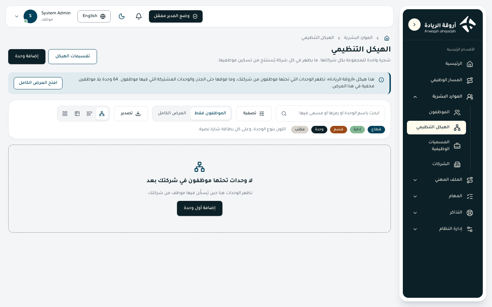
من يراها
- مفتاح العرض:
org.view(«عرض الهيكل التنظيمي»). دور «موظف» يملكه تلقائيًا بنطاق «الكل». - كل موظف يرى هيكل شركته فقط: الوحدات التي تحتها موظفون من شركته وما فوقها حتى الجذر، والوحدات المشتركة التي فيها موظفون. ويظهر تنبيه بعدد الوحدات المخفية (بلا موظفين). (FR-98، FR-108)
- «رؤية الهيكل كاملًا» (
org.view_full) تعرض كل الوحدات ولو فارغة، وتضيف مفتاح «الموظفون فقط / العرض الكامل» وقائمة «أرِني هيكل شركة». هي للموارد البشرية ومدير المنصة بحسب تصميم المنتج، وتُمنح من صفحة الأدوار. - أزرار التغيير (إضافة ونقل وتعديل وحذف وغيرها) تظهر فقط في «وضع مدير المنصة» ولمن يملك مفتاح كل زر.
- دور قائد الوحدة لا يضم
org.viewلأن الدور العام «موظف» يضمه.
ماذا يمكنك أن تفعل
| الإجراء | ماذا يحدث | المفتاح (الاسم في صفحة الصلاحيات) |
|---|---|---|
| تبديل العرض (مخطط / أفقي / جدول / بطاقات) | يغيّر شكل العرض ويُتذكَّر اختيارك | org.view (عرض الهيكل التنظيمي) |
| البحث والفلاتر | بحث باسم الوحدة أو رمزها أو مسمى فيها، وفلاتر: النوع، نوع الإدارة، الحالة، الموظفون، القائد | org.view |
| العرض الكامل و«أرِني هيكل شركة» | يعرض كل الوحدات ويقارنها بما تراه شركة معينة (الباهت بخط متقطع لا تراه) | org.view_full (رؤية الهيكل كاملًا) |
| تصدير | يحمّل وحدات الهيكل بالأعمدة التي تختارها | org.export (تصدير وحدات الهيكل) |
| تقسيمات الهيكل | يعدّل أنواع الوحدات وجدول «من يُنشأ تحت من» | org.levels_manage (تعديل تقسيمات الهيكل ونسخها) |
| إضافة وحدة / إضافة وحدة تحتها | ينشئ وحدة جديدة برمز مقترح | org.unit_create (إضافة وحدة في الهيكل) |
| تعديل (قلم) | يغيّر الاسم وتاريخ البدء والمدير وحالة «وحدة تعمل» بتاريخ سريان وسبب | org.unit_update (تعديل وحدة) |
| تحديد الرمز | يحدد مرة واحدة رمز وحدة أُنشئت قبل الرموز | org.unit_update |
| تغيير نوع الإدارة | يحوّل الوحدة بين مشتركة ولكل شركة بسبب | org.unit_share (تغيير نوع إدارة الوحدة) |
| نقل | ينقل الوحدة إلى أب آخر | org.unit_move (نقل وحدة إلى مكان آخر) |
| حذف | يحذف وحدة لا شيء تحتها | org.unit_delete (حذف وحدة) |
| تبويب «القادة»: تعيين قائد أو قائم بالأعمال، إنهاء، حذف | يدير قادة الوحدة | org.leaders_manage (تعيين قادة الوحدات والقائمين بالأعمال) |
| تبويب «الميثاق»: كتابة / تعديل | يكتب الغرض والمخرجات والنطاق والحدود | org.charter_edit (تعديل ميثاق الوحدة) |
| تبويب «المسميات»: إضافة وتعديل مسمى | يدير مسميات الوحدة | org.titles_manage (إدارة المسميات الوظيفية) وjob_titles.create / job_titles.update |
لا يوجد استيراد في هذه الصفحة بقصد: يُبنى الهيكل من الشاشة، وتُستورد المسميات من صفحة «المسميات الوظيفية».
كيف أفعل
قراءة الهيكل
- اختر العرض من مفتاح العروض: المخطط يبدأ بأروقة الريادة مفتوحة، وتفتح الدائرة تحت كل بطاقة ما تحتها، وفيه «فتح الكل» و«ملاءمة» والتكبير والسحب.
- ألوان البطاقات بنوع الوحدة، وعلى كل بطاقة شارة نصية باسم النوع، فلا يعتمد المعنى على اللون وحده.
- انقر وحدة فتظهر تفاصيلها بتبويبات: نظرة عامة، المسميات، القادة، الميثاق، السجل.
إضافة وحدة
- فعّل وضع مدير المنصة ثم اضغط «إضافة وحدة» (أو أيقونة «إضافة وحدة تحتها» على سطر الأب).
- اختر الأب ثم النوع؛ الأنواع المعروضة هي المسموحة بجدول القواعد.
- اكتب الاسم بالعربي (الإنجليزي اختياري ويُترجم أثناء الكتابة) وتاريخ بدء العمل.
- تحت الجذر (قطاع أو إدارة أو مكتب) اكتب رمز الوحدة بثلاثة أحرف إنجليزية كبيرة مثل OPS.
- اختر نوع الإدارة: «تُورَّث من الأب» أو «مشتركة» أو «لكل شركة» (للقطاع ولما تحت الجذر مباشرة يلزم الاختيار الصريح). يظهر الرمز المقترح وملاحظة عن ظهور الوحدة للشركات.
- اضغط «حفظ الوحدة».
تغيير نوع الإدارة
- اضغط أيقونة «تغيير نوع الإدارة» على السطر.
- اقرأ الأثر المعروض (تغيّر مدير موظفي الشركات التابعة).
- اكتب السبب ثم «تأكيد التغيير». تظهر الوحدات المتأثرة وعدد الموظفين الذين أُعيد حساب مديرهم.
تعيين قائد أو قائم بالأعمال
- افتح الوحدة ثم تبويب «القادة» واضغط «تعيين قائد أو قائم بالأعمال».
- اختر النوع (قائد أو قائم بالأعمال) والشركة (في الوحدة «لكل شركة») والموظف ثم مسماه في الوحدة، وتاريخ «يبدأ من» والسبب.
- القائم بالأعمال يحتاج تاريخ نهاية أيضًا. احفظ.
قواعد العمل
- أنواع الوحدات: خمسة أساسية لا تُحذف (قطاع، إدارة، قسم، وحدة، مكتب)، ويضيف مدير المنصة أنواعًا أخرى من «تقسيمات الهيكل» (اسم عربي وإنجليزي، ومربع «يقبل مسميات وموظفين»)؛ والنوع المضاف يظهر في كل الشركات ويُحذف فقط ما لم تستعمله وحدة. القطاع لا يقبل مسميات ولا موظفين. (FR-96)
- من يُنشأ تحت من: جدول بمربعات اختيار (الأب في الصف والابن في العمود) يعدَّل من «تقسيمات الهيكل». تعديل الجدول يمنع الإنشاء الجديد فقط ولا ينقل وحدات قائمة. قاعدتان ثابتتان: القطاع لا يُنشأ إلا تحت أروقة الريادة، ولا مكتب تحت مكتب. (FR-96)
- رمز الوحدة يُبنى بنوع الوحدة بأربع خانات (قطاع.إدارة.قسم.وحدة) مثل
OPS.03.03.01؛ الصفر في خانة يعني أنه لا مستوى من هذا النوع هنا. المكتب يأخذ الرقم 09 في الخانة التي يقع فيها، والنوع المضاف يأخذ خانة الوحدة. لا يتغير الرمز بنقل الوحدة. إن لم تتوفر خانة تظهر رسالة «لا خانة رمز متاحة لهذا النوع تحت هذا الأب». وحدة أُنشئت قبل الرموز يُحدد رمزها مرة واحدة. (FR-96) - نوع الإدارة: «مشتركة» تُدار مرة واحدة من أروقة ومدير أي موظف تحتها قائدها؛ و«لكل شركة» لكل شركة قائدها وموظفوها. التعليم يجوز على أي مستوى وما تحته يرثه ما لم تُعلَّم وحدة تحته بغير ذلك. تغيير النوع يتطلب سببًا ويُدقَّق. (FR-97)
- ظهور الوحدة: المشتركة تظهر لكل الشركات حين يُسكَّن فيها أول موظف من أي شركة؛ و«لكل شركة» لا تظهر في هيكل شركة حتى يُسكَّن فيها أول موظف منها. صاحب «رؤية الهيكل كاملًا» يراها دائمًا. (FR-98)
- القادة: الوحدة المشتركة لها قائد واحد من شركة المجموعة؛ والوحدة «لكل شركة» لكل شركة قائدها من موظفيها الفعّالين. القائم بالأعمال يحمل دور القائد طوال مدته فقط، ويحتاج تاريخ نهاية وقائدًا قائمًا طوال المدة، ولا يكون هو القائد، ولا يتداخل مع قائم آخر. القائد يبدأ اليوم أو لاحقًا، ولا يُحذف إلا من لم يبدأ بعد (أما القائم فيُنهى). عند تعيين قائد بمسمى في الوحدة ينتقل إلى الوحدة بهذا المسمى من يوم البدء. دور «قائد الوحدة» واحد غير مربوط بشركة. (FR-100)
- وحدة فيها موظفون بلا قائد في شركتهم تظهر بحالة «بلا قائد»، وتنبيه أصفر لحامل العرض الكامل بزر «اعرضها». ويصعد المدير إلى أقرب قائد أعلى في الشركة نفسها؛ وإن لم يوجد يبقى المدير فارغًا. (FR-100)
- الميثاق والسجل: الميثاق (الغرض، المخرجات، داخل النطاق، خارج النطاق، الحدود) يُعدَّل بتاريخ سريان وسبب. تعديل اليوم لا يغيّر سجل الأمس؛ والتغيير الذي يبدأ لاحقًا يُسجَّل نسخة «مجدولة» تُطبَّق في يومها تلقائيًا ويظهر على الوحدة «تغيير مجدول». لا يبدأ تغيير في الماضي، ولا بتاريخ لا يلي آخر نسخة. إيقاف الوحدة يتم بتاريخ بدل الحذف. (FR-99)
- النقل: فوري ويُدقَّق ويبقى الرمز كما هو، ولا مكان إلا ما تسمح به القواعد (والقطاع لا يُنقل). قسم له مكتب استقبال تذاكر نشط أو تذاكر مفتوحة لا يُنقل ولا يُحذف.
- الحذف: لا تُحذف وحدة تحتها وحدات فرعية أو موظفون؛ انقلهم أو احذفهم أولًا. وتُحذف مسمياتها معها.
- تاريخ بدء العمل مطلوب لكل وحدة، من 1980 وحتى سنتين قادمتين. (FR-35)
- كل تغيير في الهيكل يُسجَّل في السجل بالتاريخ والفاعل والسبب.
نصائح ومشكلات شائعة
- لا ترى أزرار التعديل؟ فعّل «وضع مدير المنصة» من الشريط العلوي وتأكد أن دورك يملك المفتاح.
- وحدة لا تظهر لك؟ ربما ما زالت بلا موظفين من شركتك؛ يراها من يملك «رؤية الهيكل كاملًا».
- رمز مفقود في وحدة قديمة: استخدم أيقونة «تحديد الرمز»، ولن يتغير بعدها.
11. المسميات الوظيفية
صفحة «المسميات الوظيفية» تجمع كل مسميات المجموعة في قائمة واحدة برمز المسمى ودرجته ومساره وعدد شاغليه. اضغط أي مسمى لتفتح «بطاقته»: رمزه مفكوكًا إلى أجزائه، ومرحلة التطوير، والمسؤوليات والمؤهلات والمؤشرات، والشاغلون في كل شركة، وسلسلة «من هو المدير المباشر؟».
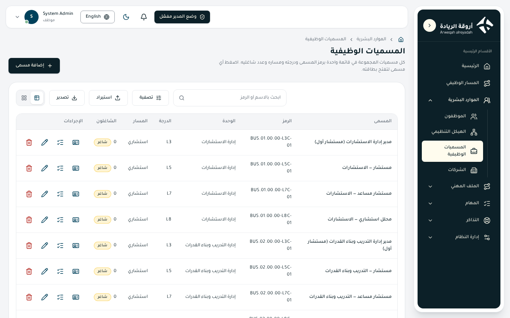
من يراها
- مفتاح العرض:
job_titles.view(«عرض صفحة المسميات الوظيفية وبطاقاتها»). النطاق: الكل. - الصفحة ليست ضمن دور «موظف» الافتراضي ولا ضمن دور قائد الوحدة؛ تُمنح لدور من صفحة الأدوار أو الصلاحيات (مثل الموارد البشرية ومدير النظام).
- ترى المسميات في الوحدات التي يظهر لك هيكلها (قاعدة صفحة الهيكل نفسها)، ومن يملك «رؤية الهيكل كاملًا» يرى الكل. عدد الشاغلين يُحسب لشركتك، وفي العرض الكامل لكل الشركات.
- أزرار الإضافة والتعديل والحذف تظهر في «وضع مدير المنصة» ولمن يملك مفتاح كل زر. التصدير والاستيراد لهما مفتاحاهما.
ماذا يمكنك أن تفعل
| الإجراء | ماذا يحدث | المفتاح (الاسم في صفحة الصلاحيات) |
|---|---|---|
| فتح البطاقة (النقر على السطر أو الاسم) | تظهر بطاقة المسمى | job_titles.view |
| البحث والفلاتر | بحث بالاسم أو الرمز؛ فلاتر: القطاع، الإدارة، القسم، الدرجة، المسار، الشاغر | job_titles.view |
| تبديل جدول / بطاقات | يغيّر شكل العرض | job_titles.view |
| إضافة مسمى | يختار الوحدة ثم يكتب الاسم والدرجة والمسار وجهة الرفع | job_titles.create (إضافة مسمى وظيفي) |
| تعديل | يغيّر الاسم وجهة الرفع، ويحدد الدرجة والمسار مرة واحدة | job_titles.update (تعديل مسمى وظيفي) |
| تعديل المحتوى | يكتب المسؤوليات والمؤهلات والمؤشرات | org.titles_edit_content (تعديل محتوى المسمى الوظيفي) |
| حذف | يحذف مسمى لا شاغل له | job_titles.delete (حذف مسمى وظيفي) |
| تصدير | يحمّل المسميات بنتائج البحث والفلاتر | job_titles.export (تصدير المسميات الوظيفية) |
| استيراد | يضيف مسميات أو يحدّثها من ملف | job_titles.import (استيراد المسميات الوظيفية من ملف) |
كيف أفعل
إضافة مسمى
- فعّل وضع مدير المنصة واضغط «إضافة مسمى».
- اختر الوحدة (تظهر الوحدات التي تقبل مسميات فقط) ثم «التالي».
- اكتب الاسم بالعربي وبالإنجليزي، واختر الدرجة (L1 إلى L9) والمسار (إدارة، مهني، مشاريع، استشاري، مساندة) وجهة الرفع اختياريًا. يمكنك إضافة أكثر من مسمى للوحدة في الحوار نفسه، وتختار من أي دور تُنسخ الصلاحيات (الافتراضي دور «موظف»).
- احفظ. يُبنى رمز المسمى ويُنشأ له دور باسمه.
قراءة بطاقة مسمى
- انقر سطر المسمى.
- «معنى الرمز» يفكّ الرمز إلى قطاع وإدارة وقسم ووحدة، ثم الدرجة والمسار، ثم التسلسل.
- «من هو المدير المباشر؟»: اختر شركة الموظف (من الشركات التي لها شاغلون بالمسمى) فتظهر السلسلة من المسمى صعودًا.
استيراد المسميات
- اضغط «استيراد» ونزّل القالب: رمز المسمى (فارغ لمسمى جديد)، رمز الوحدة، الاسمان، الدرجة، المسار، رمز جهة الرفع، والمسؤوليات والمؤهلات والمؤشرات بالعربية والإنجليزية (بند في كل سطر).
- املأ الملف وارفعه، وراجع المعاينة: «مسميات جديدة / مُعدَّلة / بلا تغيير» والصفوف المرفوضة بأسبابها.
- أكّد الاستيراد (الحد 1000 صف).
قواعد العمل
- رمز المسمى مثل
OPS.03.03.01-L7P-01: رمز الوحدة، ثم الدرجة (1 إلى 9) والمسار بحرف (M إدارة، P مهني، J مشاريع، C استشاري، S مساندة)، ثم تسلسل داخل الوحدة. يُبنى عند إضافة المسمى، ولا يتغير ولا يُعاد استعماله. (FR-104) - الدرجة والمسار يُحدَّدان مرة واحدة ثم يُقفلان لأن الرمز يُبنى منهما. المسمى الجديد يحتاج درجة ومسارًا. المسميات القديمة بلا رمز تعمل؛ ويُبنى رمزها حين تُحدَّد درجتها ومسارها. مسمى أُضيف لوحدة بلا رمز ينتظر رمز الوحدة. (FR-104)
- لا مسمى على قطاع. والمسمى لا يرفع إلى نفسه ولا إلى مسمى يرفع إليه. (FR-104)
- مرحلة التطوير تُحسب من الدرجة والمسار: التأسيس والتخصص والبراعة والقيادة التشغيلية والقيادة المؤسسية، مع ساعات السنة وحد الميزانية؛ وحين لا توجد قاعدة تظهر العبارة «تحدده الموارد البشرية» ولا يُخمَّن شيء. (FR-107)
- المدير المباشر هو أقرب مسمى أعلى فيه شاغل؛ المسميات الشاغرة تُتخطّى، ولا يتجاوز البحث شركة الموظف. إن لم يوجد مدير يدخل الموظف في تقرير الوحدات بلا قائد، وتعيّنه الموارد البشرية يدويًا بتاريخ وسبب. (FR-107)
- المحتوى: يُحفظ بالعربية والإنجليزية، بند في كل سطر (حتى 30 بندًا وطول كل بند 400 حرف)، وكل حفظ يرفع رقم إصدار المحتوى ويُدقَّق. (FR-106)
- الحذف: لا يُحذف مسمى عليه موظفون؛ انقلهم أولًا. يُحذف دوره معه.
- الاستيراد: يطابق الصف بالرمز (فيحدّث أو ينشئ بهذا الرمز) أو يبني الرمز من الوحدة والدرجة والمسار؛ ويربط خطوط الرفع. الأسباب التي ترفض صفًا تظهر بنص واضح (وحدة غير موجودة، لا تقبل مسميات، رمز مكرر، تسلسل مستخدم، جهة رفع غير معروفة أو تصنع حلقة...). لا يُكتب شيء قبل التأكيد. (FR-107)
- «شاغر» تعني مسمى بلا شاغلين؛ وفلتر «الشاغر» يفرّق بين الحالتين.
نصائح ومشكلات شائعة
- لا ترى زر «إضافة مسمى»؟ فعّل وضع مدير المنصة وتأكد من مفتاح الإضافة.
- لا تجد وحدة في قائمة الإضافة؟ نوعها لا يقبل مسميات (مثل القطاع)؛ أضف المسمى في وحدة تحته.
- يرفض الاستيراد «الوحدة بلا رمز بعد»: حدد رمز الوحدة من صفحة الهيكل أولًا.
12. الشركات
صفحة «الشركات» تعرض شركات المجموعة برمز كل شركة واسمها بالعربي والإنجليزي وعدد موظفيها وحالتها. منها يضيف مدير المنصة شركة، ويعدّلها، ويحذفها إن لم يكن فيها موظفون ولا وحدات، ويستورد الشركات من ملف أو يصدّرها.
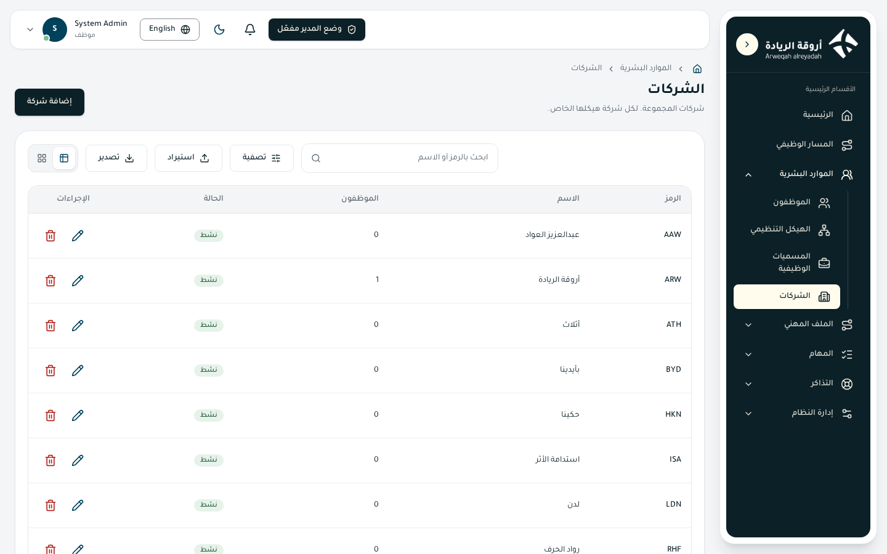
من يراها
- مفتاح العرض:
companies.view(«عرض صفحة الشركات»). - الصفحة تتطلب «وضع مدير المنصة»؛ لا تظهر في القائمة الجانبية خارجه. ليست من أدوار الموظف أو قائد الوحدة الافتراضية، وتُمنح من صفحة الأدوار (لمدير النظام ولمن يحدده).
- كل زر له مفتاحه ويظهر لمن يملكه فقط.
ماذا يمكنك أن تفعل
| الإجراء | ماذا يحدث | المفتاح (الاسم في صفحة الصلاحيات) |
|---|---|---|
| البحث والفلاتر | بحث بالرمز أو الاسم؛ فلتر الحالة (نشطة / معطلة) وفلتر «فيها موظفون / بلا موظفين» | companies.view |
| تبديل جدول / بطاقات | يغيّر شكل العرض | companies.view |
| إضافة شركة | يفتح نموذج الإضافة | companies.create (إضافة شركة) |
| تعديل (قلم أو النقر على السطر) | يعدّل الرمز والاسمين والحالة | companies.update (تعديل شركة) |
| حذف (سلة) | يحذف الشركة بعد تأكيد | companies.delete (حذف شركة) |
| تصدير | يحمّل الشركات (النطاق والأعمدة ونوع الملف) | companies.export (تصدير الشركات) |
| استيراد | يضيف شركات من ملف Excel أو CSV | companies.import (استيراد الشركات من ملف) |
كيف أفعل
إضافة شركة
- فعّل وضع مدير المنصة وافتح «الشركات».
- اضغط «إضافة شركة».
- اكتب الرمز (حروف إنجليزية وأرقام وشرطة، من 2 إلى 20)، والاسم بالعربي والإنجليزي، وأبقِ «شركة نشطة» مفعّلة إن شئت.
- احفظ. تبدأ الشركة الجديدة بالتقسيمات الافتراضية (قطاع، إدارة، قسم، وحدة).
حذف شركة
- اضغط أيقونة الحذف على سطر الشركة.
- أكّد في النافذة. إن كان في الشركة موظفون أو وحدات يرفض النظام الحذف؛ انقلهم أو أزلهم أولًا.
استيراد شركات
- اضغط «استيراد» ثم «تنزيل القالب».
- املأ الأعمدة: الرمز، الاسم بالعربي، الاسم بالإنجليزي (مطلوبة)، والحالة (نعم / لا، والافتراضي نعم).
- ارفع الملف وراجع المعاينة (صفوف سليمة وصفوف بأخطاء)، ثم اضغط «استيراد N صف». تُستورد الصفوف السليمة فقط، ويمكنك تنزيل تقرير الأخطاء.
قواعد العمل
- رمز الشركة فريد؛ استعمال رمز موجود يرفضه النظام برسالة «رمز الشركة مستخدم». (FR-19)
- لا تُحذف شركة فيها موظفون أو وحدات: «انقل موظفي الشركة ووحداتها أو أزلهم أولًا». (FR-19)
- الاستيراد: كل صف يمر بنفس تحقق النموذج، والتكرار داخل الملف يُعلَّم، ولا يُستورد صف فيه خطأ. (FR-29)
- التصدير: تختار نطاق الصفوف (المعروضة في الصفحة أو كل نتائج البحث والفلاتر)، والأعمدة (الرمز، الاسمان، الموظفون، الحالة)، ونوع الملف (Excel أو CSV).
- المخطط التنظيمي واحد للمجموعة؛ وما تراه كل شركة منه يُستنتج من تسكين موظفيها (انظر قسم الهيكل التنظيمي).
- التعديل والحذف يُسجَّلان في سجل التدقيق.
نصائح ومشكلات شائعة
- لا ترى «الشركات» في القائمة؟ فعّل وضع مدير المنصة.
- عمود الموظفين صفر ومع ذلك لا تُحذف الشركة؟ ربما فيها وحدات.
الملف المهني
13. المسار الوظيفي
«المسار الوظيفي» صفحتك الخاصة. تعرض مسار مسماك الوظيفي بخمسة أقسام بنفس الترتيب دائمًا: الوصف الوظيفي، تقييم الأداء، التطوير المهني، خطة التعلم، والمطلوب. ومنها ترفع إثباتات الوحدات التي أنهيتها، وتتابع أوسمتك وساعات تعلمك، وتطلب تعلّمًا من خارج الخطة، وتقيّم نفسك حين تُفتح دورة التقييم. تُجهّز الموارد البشرية المحتوى مرة واحدة لكل مسمى، وعليك أن تقرأه وتقرّ به.
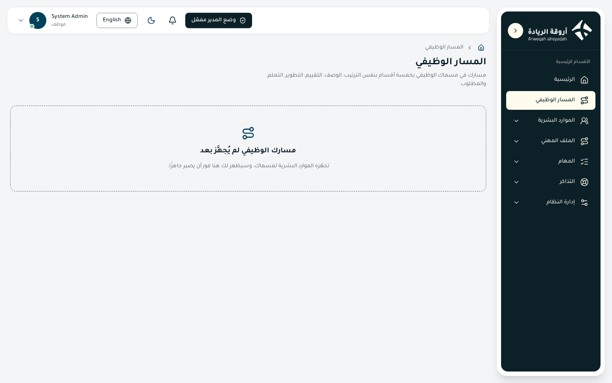
من يراها
- صلاحية العرض:
career_profile.view(عرض مساري الوظيفي)، النطاق: الكل (وهي لا تعرض إلا مسارك أنت). - الأدوار الافتراضية: دور موظف (يُسند للجميع) ودور رئيس كل وحدة، ومعهما مفاتيح مسارك الخاص المذكورة أدناه.
- لا تحتاج إلى وضع مدير المنصة.
- رابط «المسار الوظيفي» في القائمة الجانبية تحت «الرئيسية» مباشرة. وإن لم تعيّن الموارد البشرية مسار مسماك «جاهزًا» ترى بطاقة «مسارك الوظيفي لم يُجهَّز بعد» بدل المحتوى، ويظهر المحتوى فور أن يصير جاهزًا.
ما يمكنك فعله
| الإجراء | ماذا يحدث | مفتاح الصلاحية (اسمها) |
|---|---|---|
| فتح الصفحة وقراءة الأقسام الخمسة | يعرض مسار مسماك وبطاقات تقدّمك وإقرارك | career_profile.view (عرض مساري الوظيفي) |
| الإقرار بالمسار | يسجّل إقرارك باسمك وإصدار المحتوى والتاريخ | career_acknowledge.create (الإقرار بمساري الوظيفي) |
| تصدير وحدات التعلم | ينزّل جدول وحدات خطة تعلمك (النطاق والأعمدة ونوع الملف) | career_learning.export (تصدير وحدات خطة التعلم في مساري) |
| رفع الإثبات / أعد الرفع | يفتح نافذة الإثبات لوحدة ويرسله للاعتماد | career_learning.upload (رفع إثبات إنجاز وحدة تعلم) |
| تعليم «تم» على بند من المطلوب | يعلّم البند بأنه تم في قسم «المطلوب» | career_required.tick (تعليم بند من المطلوب بأنه تم) |
| طلب تعلّم من خارج الخطة | يفتح نافذة طلب التعلم (انظر صفحة «طلبات التطوير») | career_requests.create (تقديم طلب تعلّم (طلب تطوير)) |
| التقييم الذاتي ونتيجتي والاعتراض والمحطات | تظهر في قسم التقييم حين تُفتح دورة (انظر صفحتي دورة التقييم وتقييم الفريق) | performance.self_evaluate (تقييمي الذاتي في دورة التقييم)، performance.object (الاعتراض على نتيجة تقييمي)، performance.export (تصدير نسخة من نتيجة تقييمي)، performance.milestone_ack (الإقرار باطلاعي على محضر محطتي) |
الصفحة في نظرة واحدة
- بطاقة التعريف: اسمك ومسماك ووحدتك ومديرك المباشر، ورمز المسمى مقسومًا إلى شارات (قطاع، إدارة، قسم، وحدة)، ومرحلة التطوير (التأسيس، التخصص، البراعة، القيادة التشغيلية، القيادة المؤسسية) وتأتي من درجتك ومسارك.
- شارة الرأس: «أقررتَ بإصدار المحتوى N».
- بطاقات التقدّم: الوحدات المنجزة («X من Y»)، والساعات المنجزة والوسام التالي، والميزانية المصروفة من حد مرحلتك، وجدارات مستواك الأساسية المحققة.
- خمسة أقسام: الوصف الوظيفي (ملخص الوظيفة، مؤشرات الأداء، المؤشر الحاكم، المسؤوليات بمهامها) · تقييم الأداء · التطوير المهني (السلم الوظيفي، مسار المستوى، الجدارات الفنية) · خطة التعلم (وحدات التعلم، الأوسمة، طلباتي) · المطلوب (بنود بمواعيد ثم نص الإقرار). على تبويب خطة التعلم عدّاد الوحدات المنجزة، وعلى «المطلوب» عدّاد أحمر للمتأخر.
- السلم الوظيفي: درج صاعد بعلامة «أنت هنا» والمستوى التالي، وتحته شرط الانتقال للمستوى التالي.
- مسار المستوى: خطوات المستوى، لكل خطوة نوع إثباتها (دورة أو شهادة أو تطبيق في العمل) وحالتها.
- الجدارات الفنية: جدول جدارات ومستويات («أساسي» أو «خبير» أو «—» حين لا يطلبها المستوى) وعمود «مستواي».
كيف أفعل
قراءة المسار والإقرار به (عند أول دخول أو تغيّر المسمى أو إعادة الفتح)
- سجّل الدخول. تظهر شاشة كاملة لا تعرض إلا مسارك، ومعها السبب: «أول دخول لك» أو «تغيّر مسماك الوظيفي» أو «أعادت الموارد البشرية فتح الإقرار». و«تسجيل الخروج» متاح دائمًا.
- اقرأ القسم الأول. زر «التالي: <القسم>» لا يعمل قبل أن تمرّر حتى آخر القسم، والقسم القصير يُحتسب مقروءًا فورًا.
- اضغط «التالي» لكل قسم من الأقسام الخمسة بالترتيب. القسم الذي لم يحن دوره مقفل، وزر «السابق» يعيدك إلى قسم قرأته.
- في الخطوة السادسة «الإقرار» فعّل مربع الإقرار في الشريط أسفل الصفحة (يبقى معطّلًا حتى تصل هذه الخطوة) ثم اضغط «أقرّ وأتابع».
- تظهر رسالة «تم الإقرار. يمكنك متابعة استخدام المنصة.» وتُفتح المنصة.
رفع إثبات لوحدة تعلم
- افتح «خطة التعلم» ثم «وحدات التعلم» وابحث عن الوحدة.
- اضغط أيقونة الرفع في الصف («رفع الإثبات»)، أو «أعد الرفع» إن كان الإثبات السابق مرفوضًا.
- اختر نوع الإثبات: شهادة (ملف PDF أو صورة حتى 10 ميغابايت)، أو تطبيق في العمل (يعتمده مديرك المباشر بعد وصف ما طبّقته)، أو مخرج مكتوب (ملخص أو تقرير أنتجتَه).
- أرفق الملف (الشهادة بلا ملف تُرفض: «أرفق ملف الشهادة أولًا»)، واكتب ملاحظة اختيارية للمراجع، ثم اضغط «إرسال للاعتماد».
- تصير حالة الوحدة «بانتظار الاعتماد». ولا تُحتسب الساعات إلا بعد الاعتماد.
متابعة الأوسمة والساعات
- افتح «خطة التعلم» ثم «الأوسمة».
- يعرض كل وسام عتبته بالساعات وشريط تقدّمك وهل نلته؛ والبطاقة في الأعلى تعرض الوسام التالي وكم ساعة ينقصك.
تعليم بند من المطلوب بأنه تم
- افتح «المطلوب».
- علّم «تم» على البند. البنود المؤرخة تعرض «متأخر» أو «بعد N يومًا» (برتقالي خلال 30 يومًا) أو «ما دمت في الفترة».
القواعد
- الإقرار إلزامي حين لا يكون لك إقرار بالمسمى الذي تشغله الآن (أول دخول، أو تغيّر مسماك منذ آخر إقرار) أو حين أعادت الموارد البشرية فتحه بعد آخر إقرار لك (FR-112).
- ما دام الإقرار معلّقًا تُقفل بقية المنصة: كل رابط في القائمة الجانبية معطّل مع تلميح «اقرأ وأقرّ أولًا»، وتنبيه في الأعلى يشرح السبب. يبقى متاحًا مسارك وتسجيل الخروج وقائمة الحساب فقط.
- عليك القراءة قبل الإقرار: تُقرأ الأقسام الخمسة بالترتيب، و«التالي» لا يعمل إلا بعد التمرير حتى آخر القسم، ومربع الإقرار معطّل حتى الخطوة السادسة. التمرير يضمن أنك مررت على الصفحة لا أنك قرأتها. وإن تغيّر المحتوى أثناء قراءتك تطلب منك الصفحة إعادة التحميل وقراءة الإصدار الجديد.
- جلسة يدخل فيها مدير باسمك («دخول كـ») لا تُحجب ولا يمكنها الإقرار عنك.
- يُسجَّل الإقرار باسمك وإصدار المحتوى وتاريخه. وحين تغيّر الموارد البشرية المحتوى يرتفع إصداره.
- المحتوى من المسمى لا منك: لا تعدّله. ولا يظهر المسار إلا إذا عيّنته الموارد البشرية «جاهزًا».
- وحدة التعلم تُحتسب مرة واحدة: الوحدة المعتمدة تبقى لك إن انتقلت إلى مسمى يتضمنها. والساعات لا تُحتسب إلا بعد الاعتماد (FR-114).
- الإثبات سجل واحد لكل وحدة: الإثبات المنتظر أو المعتمد لا يُستبدل، والمرفوض يُستبدل بإثبات جديد («أعد الرفع») وتعرض الصفحة سبب الرفض. وبعد الرفض الثالث للوحدة نفسها يُبلَّغ مديرك المباشر.
- التطبيق في العمل يذهب أولًا إلى مديرك المباشر وقراره نهائي.
- الأوسمة لها عتبات بالساعات تضعها الموارد البشرية في المسمى؛ ويُنال الوسام حين تبلغ ساعاتك المعتمدة عتبته.
- التعلم من خارج الخطة يُعتمد حسب التكلفة: المدير المباشر ثم مدير القطاع ثم الرئيس التنفيذي (انظر صفحة «طلبات التطوير»).
- يصلك تذكير حين يكون لك بنود مؤرخة متأخرة في «المطلوب».
- قسم التقييم يوضّح أن التقييم يخص مرحلة تطويرك لا المسمى؛ وتظهر الأوزان والمعايير وسلم الدرجات حين تُفتح دورة. ولا تُعرض الدرجات قبل الإبلاغ الفردي بعد الاعتماد (FR-119).
- قوائم الصفحة (وحدات التعلم، طلباتي) فيها بحث وفلاتر (الأولوية، اللغة، الحالة) وتبديل جدول / كروت وتصدير.
نصائح ومشكلات شائعة
- «التالي» لا يعمل: مرّر حتى آخر القسم تمامًا؛ وإن كان في القسم تبويبات فرعية يذكر تلميح ما بقي منها لتفتحه.
- مربع الإقرار معطّل: لم تصل بعد إلى الخطوة السادسة.
- «مسارك الوظيفي لم يُجهَّز بعد»: لم تعيّن الموارد البشرية مسار مسماك جاهزًا. تواصل معها.
- وحدة تعرض «لا رابط بعد»: لم تضف الموارد البشرية رابط التعلم لها بعد.
- لم يُرسل الإثبات: تأكد أن الشهادة معها ملفها، وأن نوعه PDF أو PNG أو JPEG وحجمه حتى 10 ميغابايت.
14. فريقي المهني
«فريقي المهني» يعرض للمديرين مسارات من تحتهم: ما أنجزوه من التعلم الإلزامي والضروري، وساعاتهم المعتمدة، وما تأخروا فيه. هو عرض للمتابعة: لا تعدّل مسار أحد منه. وتبتّ هنا فقط في إثبات أُحيل إليك، وتسجّل مستوى الجدارة الفنية الذي بلغه عضو فريقك.
لم يعد صفحة مستقلة: هو تبويب «فريقي المهني» في صفحة الموظفون (والرابط القديم لـ«فريقي المهني» يحوّلك إليه).
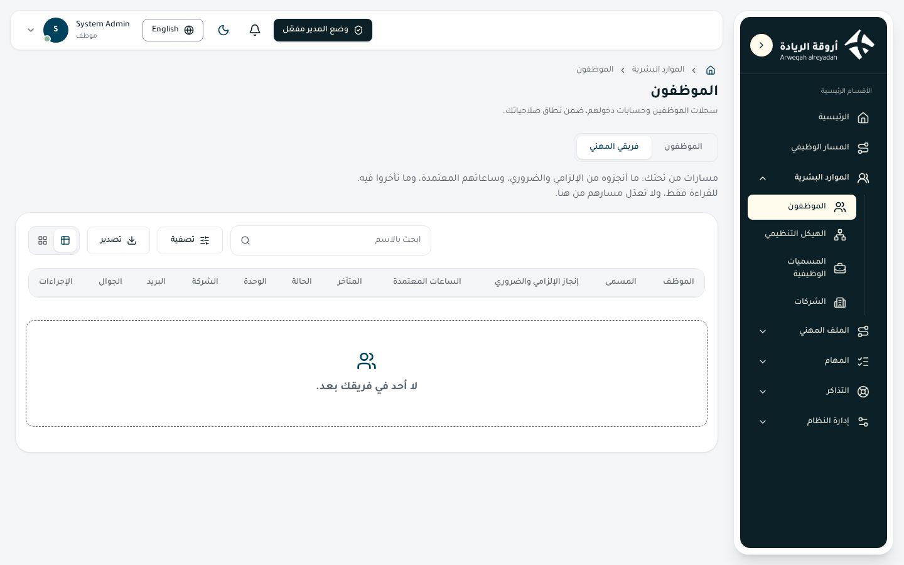
من يراه
- صلاحية العرض:
career_team.view(عرض «فريقي المهني»)، النطاقات: الوحدة، الوحدة وما دونها، الشركة، الكل. والنطاق الافتراضي الوحدة وما دونها. - الأدوار الافتراضية: دور رئيس كل وحدة (يُصنع تلقائيًا من الهيكل) يملك مفاتيح العرض والبتّ والتصدير بنطاق «الوحدة وما دونها». أما دور الموظف فلا يملكها.
- لا يحتاج إلى وضع مدير المنصة.
- إن كانت معك صلاحية
directory.viewأيضًا يضيف الجدول أعمدة الوحدة والشركة والبريد والجوال. ومعdirectory.viewوحدها (بلا مفتاح المسار) يعرض التبويب زملاء وحدتك فقط. - من خارج نطاقك لا وجود له عندك: يجيب النظام كأن السجل غير موجود.
ما يمكنك فعله
| الإجراء | ماذا يحدث | مفتاح الصلاحية (اسمها) |
|---|---|---|
| فتح التبويب والبحث والتصفية | يعرض من في نطاقك بأرقام مساراتهم؛ البحث بالاسم؛ فلتر الحالة (منتظم، متأخر) | career_team.view (عرض «فريقي المهني») |
| فتح عضو (أيقونة العين أو النقر على الصف) | نافذة فيها ثلاث بطاقات (إنجاز الإلزامي والضروري، الساعات المعتمدة، البنود المتأخرة) والإثباتات بانتظار القرار وجدارات المسمى | career_team.view (عرض «فريقي المهني») |
| اعتماد إثبات أُحيل إليك | يصير الإثبات معتمدًا وتُحتسب ساعاته للموظف | career_team.decide (البتّ في إثبات أُحيل إلى المدير المباشر) |
| رفض إثبات أُحيل إليك | يرفضه بسبب (5 أحرف على الأقل) ويُبلَّغ الموظف | career_team.decide (البتّ في إثبات أُحيل إلى المدير المباشر) |
| تسجيل مستوى جدارة | يسجّل «أساسي» أو «خبير» لجدارة من جدارات مسمى العضو، أو يسحب التسجيل | career_competency.record (تسجيل مستوى جدارة لعضو الفريق) |
| تصدير القائمة | ينزّل الجدول (النطاق والأعمدة ونوع الملف) | career_team.export (تصدير قائمة «فريقي المهني») |
كيف أفعل
معرفة من تأخر
- افتح الموظفون ثم تبويب «فريقي المهني».
- إن كان بعضهم متأخرًا يظهر تنبيه في الأعلى: «N من فريقك متأخر في المطلوب».
- صفِّ الحالة بـ«متأخر»، أو اقرأ عمود «المتأخر» (رقم أحمر بعدد البنود المتأخرة).
- انقر الصف لفتح العضو ورؤية ما تأخر فيه.
البتّ في إثبات أُحيل إليك
- افتح العضو. قائمة «إثباتات بانتظار قرار» تعرض الإثباتات.
- لا يُبتّ هنا إلا في إثبات أُحيل إلى المدير المباشر (التطبيقات في العمل لفريقك، أو إثبات أحاله المراجع).
- اضغط «اعتماد»، أو «رفض بسبب» واكتب السبب (5 أحرف على الأقل) ثم أكّد.
تسجيل مستوى جدارة
- افتح العضو وانتقل إلى «جدارات المسمى».
- لكل جدارة يطلبها المسمى اختر المستوى المسجّل («أساسي» أو «خبير»). يراه الموظف في عمود «مستواي».
- للتراجع اضغط «سحب التسجيل».
القواعد
- لا يرى الملف المهني لشخص إلا من يعلوه في الهيكل ضمن نطاقه: من خارج وحدتك وما دونها لا يظهر لك (FR-115).
- للقراءة فقط: «لا تعديل على ملفه المهني من هنا». والقرارات الوحيدة هنا هي إثباتات أُحيلت إليك ومستويات الجدارات.
- أعمدة التقدّم: نسبة الوحدات الإلزامية والضرورية المنجزة (شريط)، والساعات المعتمدة من ساعات السنة، وعدد البنود المتأخرة، والحالة: منتظم أو متأخر أو بلا مسار جاهز (مسمى الشخص بلا مسار جاهز، ومثل هؤلاء يُستبعدون من القائمة).
- المتأخر هو بند مطلوب له تاريخ مضى ولم يعلّمه الموظف بأنه تم.
- إثبات التطبيق في العمل يبدأ عند المدير المباشر وقراره نهائي. وبعد الرفض الثالث للوحدة نفسها يُبلَّغ المدير.
- تُعدّ الجدارة محققة حين يبلغ المستوى الذي سجّلته المستوى الذي يطلبه المسمى في مستوى الموظف الحالي. والمستويات تُسجَّل يدويًا: اعتماد الإثبات لا يضبطها (FR-117).
- الساعات المعتمدة لا تُحتسب إلا بعد الاعتماد، والوحدة مرة واحدة.
- في القائمة بحث وفلتر حالة وتبديل جدول / كروت وتصدير؛ وعدد الصفوف يتبع نطاقك.
نصائح ومشكلات شائعة
- التبويب غير ظاهر في الموظفين: دورك لا يملك
career_team.viewولاdirectory.view، أو أُخفيت الصفحة عن دورك. - شخص تتوقعه غير موجود في القائمة: هو خارج وحدتك وما دونها، أو مسماه بلا مسار وظيفي جاهز.
- أعمدة التواصل غير ظاهرة: تحتاج أيضًا صلاحية
directory.view.
15. مراجعة الشهادات
«مراجعة الشهادات» هي الصفحة التي يُبتّ فيها في الإثباتات التي رفعها الموظفون لوحدات خطة التعلم. تفتح الإثبات وتنظر في ملفه ووحدته، ثم تعتمده فتُحتسب ساعاته، أو ترفضه بسبب، أو تحيله إلى المدير المباشر للموظف. هي لمراجع إثباتات التعلم، وعادة هو مسؤول تطوير الموظفين.
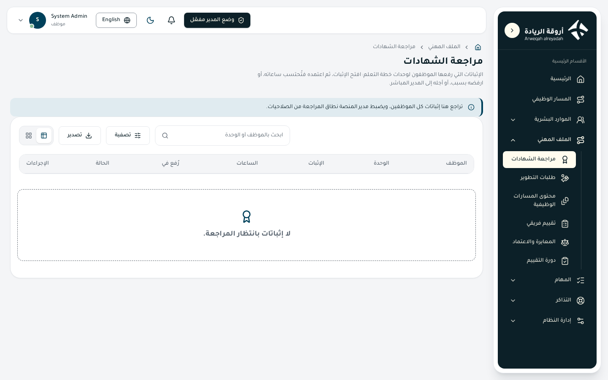
من يراها
- صلاحية العرض:
career_certificates.review(عرض صفحة مراجعة الشهادات وملفاتها)، النطاق: الكل. نطاق المراجعة كل الموظفين ولا يضيّق بالوحدة. - الدور الافتراضي: مسؤول تطوير الموظفين (تُنشئه المنصة مرة واحدة إن لم يكن موجودًا، بمفاتيح الشهادات الخمسة). ويستطيع مدير المنصة إضافة المفاتيح لأي دور أو شخص آخر من صفحة الصلاحيات.
- لا تحتاج إلى وضع مدير المنصة لدور المسؤول.
- القائمة: مجموعة «الملف المهني»، بند «مراجعة الشهادات».
ما يمكنك فعله
| الإجراء | ماذا يحدث | مفتاح الصلاحية (اسمها) |
|---|---|---|
| فتح الصفحة والبحث والتصفية | تُعرض الإثباتات؛ البحث بالموظف أو الوحدة؛ الفلاتر: نوع الإثبات (شهادة، تطبيق في العمل، مخرج مكتوب) والحالة | career_certificates.review (عرض صفحة مراجعة الشهادات وملفاتها) |
| فتح الإثبات (أيقونة العين أو النقر على الصف) | نافذة مراجعة: الموظف والوحدة ونوع الإثبات والساعات التي ستُحتسب وتاريخ الرفع والملف بزر فتح وملاحظة الموظف | career_certificates.review (عرض صفحة مراجعة الشهادات وملفاتها) |
| اعتماد (أيقونة الصح) | يصير الإثبات معتمدًا وتُحتسب ساعات الوحدة للموظف | career_certificates.approve (اعتماد إثبات وحدة تعلم) |
| رفض بسبب (أيقونة X) | يُرفض الإثبات ويُحفظ السبب ويُبلَّغ الموظف | career_certificates.reject (رفض إثبات وحدة تعلم بسبب) |
| إحالة إلى المدير المباشر (أيقونة السهم) | يذهب الإثبات إلى المدير المباشر للموظف ليقرر | career_certificates.refer (إحالة إثبات إلى المدير المباشر) |
| تصدير القائمة | ينزّل القائمة (النطاق والأعمدة ونوع الملف) | career_certificates.export (تصدير قائمة الشهادات) |
الزر الذي لا تملك مفتاحه يُخفى؛ وأزرار الاعتماد والرفض والإحالة لا تظهر إلا على إثبات ما زال يمكن البتّ فيه.
كيف أفعل
اعتماد إثبات
- افتح «مراجعة الشهادات». تقول الصفحة: «تراجع هنا إثباتات كل الموظفين».
- ابحث باسم الموظف أو الوحدة، أو صفِّ بنوع الإثبات أو الحالة.
- انقر الصف لفتح الإثبات. اقرأ التفاصيل واضغط «فتح الملف» لترى الشهادة.
- اضغط «اعتماد». تظهر «اعتُمد الإثبات.» وتُحتسب ساعات الوحدة.
رفض إثبات
- افتح الإثبات، أو اضغط أيقونة X في صفه.
- اكتب السبب (5 أحرف على الأقل). تذكر النافذة كم مرة رُفض إثبات هذه الوحدة من قبل.
- اضغط «رفض الإثبات». يُبلَّغ الموظف ويرى السبب على الوحدة ويستطيع رفع إثبات جديد.
إحالة إثبات إلى المدير المباشر
- افتح الإثبات المنتظر الاعتماد.
- اضغط «إحالة إلى المدير المباشر». تصير الحالة «عند المدير المباشر».
- يبتّ فيه المدير من «فريقي المهني». ويبقى لك أن تبتّ فيه بنفسك إن لزم.
القواعد
- الإثباتات ومن يبتّ فيها (FR-114): الإثبات سجل واحد لكل موظف ولكل وحدة تعلم. الشهادة والمخرج المكتوب يبدآن عند المراجع. أما التطبيق في العمل فيبدأ عند المدير المباشر للموظف وقراره نهائي.
- حالات الإثبات: لم يبدأ، بانتظار الاعتماد، عند المدير المباشر، منجز، مرفوض.
- الساعات لا تُحتسب إلا بعد الاعتماد، والوحدة تُحتسب مرة واحدة للموظف.
- الرفض يحتاج سببًا من 5 أحرف على الأقل، ويقرؤه الموظف. والإثبات المرفوض يُستبدل بالإثبات التالي الذي يرسله الموظف، ويُحفظ عدد مرات الرفض.
- بعد الرفض الثالث للوحدة نفسها يُبلَّغ المدير المباشر للموظف.
- إن قرّر غيرك في الإثبات قبلك يُرفض قرارك وتقول الصفحة: «تعذّر تنفيذ القرار: قد يكون غيرك قد قرّر فيه. حدّث الصفحة.»
- إثبات وحدة حُذفت من الخطة يعرض «وحدة لم تعد في الخطة».
- يُحفظ اسم من قرّر ووقته مع الإثبات.
- نطاق المراجعة الآن كل الموظفين، ولا يُعرض تضييقه.
- كبقية القوائم تقدّم الصفحة تبديل جدول / كروت والبحث والفلاتر والتصدير.
نصائح ومشكلات شائعة
- القائمة فارغة: «لا إثباتات بانتظار المراجعة» تعني أنه لم يُرفع شيء أو أن كل شيء قد حُسم.
- زر الاعتماد غير ظاهر على صف: الإثبات حُسم من قبل، أو دورك لا يملك المفتاح.
- ترى الصفحة ولا تستطيع الاعتماد: دورك يملك مفتاح العرض فقط. اطلب من مدير المنصة مفتاحي الاعتماد والرفض.
16. طلبات التطوير
طلب التطوير هو طلب تعلّم ليس مجرد وحدة من خطتك، مثل كورس عند مزود آخر، مع تكلفته. يذهب الطلب إلى المعتمِد المناسب حسب التكلفة: المدير المباشر أو مدير القطاع أو الرئيس التنفيذي. يرسل الموظف طلبه من خطة التعلم، ويبتّ المعتمِدون فيه في صفحة «طلبات التطوير».
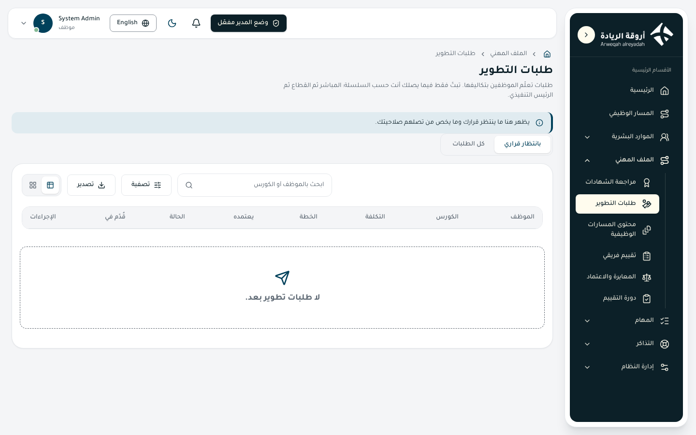
من يراها
- إرسال الطلب (الموظف):
career_requests.create(تقديم طلب تعلّم (طلب تطوير))، النطاق: الكل. يملكه دور الموظف، وزر «طلب تعلّم من خارج الخطة» في «خطة التعلم». ويتابع الموظف طلباته في «خطة التعلم» ثم «طلباتي». - صفحة المعتمِدين: صلاحية العرض
career_requests.view(عرض صفحة «طلبات التطوير»)، النطاقات: الوحدة، الوحدة وما دونها، الشركة، الكل؛ والافتراضي الوحدة وما دونها. ودور رئيس كل وحدة يملكcareer_requests.viewوcareer_requests.approveوcareer_requests.rejectوcareer_requests.exportبنطاق «الوحدة وما دونها». - لا تحتاج إلى وضع مدير المنصة.
- القائمة: مجموعة «الملف المهني»، بند «طلبات التطوير».
ما يمكنك فعله
| الإجراء | ماذا يحدث | مفتاح الصلاحية (اسمها) |
|---|---|---|
| إرسال طلب | نافذة «طلب تعلّم» ترسل الطلب للاعتماد، ويظهر المعتمِد قبل الإرسال | career_requests.create (تقديم طلب تعلّم (طلب تطوير)) |
| متابعة طلباتي | قائمة «طلباتي» ببحث وفلاتر ونافذة تفاصيل | career_profile.view (عرض مساري الوظيفي) |
| فتح الصفحة والبحث والتصفية | عرضان: «بانتظار قراري» و«كل الطلبات»؛ البحث بالموظف أو الكورس؛ الفلاتر: الحالة والمعتمِد وضمن الخطة أو خارجها | career_requests.view (عرض صفحة «طلبات التطوير») |
| فتح طلب (أيقونة العين أو النقر على الصف) | نافذة فيها الكورس والتكلفة والخطة والمعتمِد والحالة والتواريخ وملف اتفاقية الاستبقاء وتنبيه إن زادت التكلفة عن الميزانية الباقية | career_requests.view (عرض صفحة «طلبات التطوير») |
| اعتماد (أيقونة الصح) | يُعتمد الطلب وتُحتسب تكلفته في ميزانية الموظف المصروفة | career_requests.approve (اعتماد طلب تطوير) |
| رفض (أيقونة X) | يُرفض الطلب بسبب ويُبلَّغ الموظف | career_requests.reject (رفض طلب تطوير بسبب) |
| تصدير القائمة | ينزّل الطلبات (النطاق والأعمدة ونوع الملف) | career_requests.export (تصدير قائمة طلبات التطوير) |
أيقونتا الاعتماد والرفض لا تظهران إلا على طلب هو عندك.
كيف أفعل
إرسال طلب تعلّم (الموظف)
- افتح «المسار الوظيفي» ثم «خطة التعلم» واضغط «طلب تعلّم من خارج الخطة».
- اكتب اسم الكورس وتكلفته بالريال (رقم صحيح).
- اختر «ضمن خطة التعلم» (وحدة في خطتك تريدها عند مزود آخر) أو «خارج الخطة».
- أرفق اختياريًا اتفاقية الاستبقاء للتدريب الممول (PDF أو صورة).
- تحقق من سطر «يعتمده» واسم المعتمِد اللذين يظهران فورًا، ومن الباقي من ميزانيتك. ثم اضغط «إرسال الطلب».
البتّ في طلب (المعتمِد)
- افتح طلبات التطوير. تعرض «بانتظار قراري» ما هو عندك.
- انقر الطلب لقراءته. تحقق من التكلفة ونوع الخطة وتنبيه الميزانية.
- اضغط «اعتماد»، أو «رفض» واكتب السبب (5 أحرف على الأقل) ثم أكّد. يُبلَّغ الموظف.
القواعد
- من يعتمد حسب التكلفة (FR-116): ضمن الخطة وحتى 5,000 ريال المدير المباشر؛ خارج الخطة أو فوق 5,000 حتى 20,000 مدير القطاع؛ فوق 20,000 الرئيس التنفيذي. وتعرض النافذة من يعتمد ولماذا بمجرد كتابة التكلفة.
- يُحدَّد المعتمِد عند الإرسال: المدير المباشر للموظف، أو قائد القطاع الذي فوق وحدته، أو الرئيس التنفيذي (قائد المكتب الذي تحت المجموعة مباشرة). وإن لم يشغل أحد المنصب أو كان صاحبه هو الموظف ينتقل الطلب إلى المستوى الأعلى؛ وإن لم يوجد أحد في أي مستوى أعلى يُرفض الإرسال برسالة «لا أحد يشغل منصب المعتمِد بعد: اطلب من الموارد البشرية تعيين قائد الوحدة.»
- للمدير المباشر 7 أيام (نحو 5 أيام عمل)، وبعدها ينتقل الطلب إلى مدير القطاع ويُبلَّغ هو والموظف.
- تبتّ فقط فيما يصلك: الطلب عند معتمِد آخر يظهر لك للقراءة فقط («الطلب عند معتمِد آخر وأنت تراه للقراءة فقط»). ومن خارج نطاقك لا يظهر لك طلبه.
- اعتماد أو رفض فقط، وسبب الرفض 5 أحرف على الأقل؛ والقرار يغلق الطلب ويقرأ الموظف السبب. وإن قرّر غيرك قبلك تظهر «تعذّر تنفيذ القرار».
- الميزانية تنبيه لا منع: السقف هو سقف مرحلة تطوير الموظف؛ والمصروف هو تكلفة الطلبات المعتمدة في السنة الميلادية الجارية (بتوقيت الرياض). وإن زادت التكلفة عن الباقي تحذّر النافذة وتعرض القوائم «تتجاوز الباقي من الميزانية» ويقرر المعتمِد. وإن لم يكن للمرحلة سقف فلا مقارنة.
- اتفاقية الاستبقاء اختيارية ويراها المعتمِد.
- الحالات: بانتظار القرار، معتمد، مرفوض. ونوع الخطة: ضمن الخطة، خارج الخطة.
- في القائمتين بحث وفلاتر وتبديل جدول / كروت وتصدير.
نصائح ومشكلات شائعة
- زر «طلب تعلّم من خارج الخطة» غير ظاهر: دورك لا يملك
career_requests.create. - رُفض الطلب عند الإرسال: لا أحد يشغل منصب المعتمِد فوقك؛ اطلب من الموارد البشرية تعيين قائد الوحدة.
- الصفحة فارغة: «لا طلبات تطوير بعد» أو لا شيء عندك؛ جرّب «كل الطلبات».
17. محتوى المسارات الوظيفية
«محتوى المسارات الوظيفية» صفحة الموارد البشرية التي تُجهَّز منها المسارات الوظيفية لكل مسمى. تُعرض المسميات الوظيفية مع حالة مسار كل منها. وللمسمى ترفع ملف المسمى (ملف واحد فيه الوصف الوظيفي والتطوير المهني وخطة التعلم والمطلوب)، وتراجع ما قرأه النظام منه، وتصلح التفاصيل يدويًا، ثم تعيّن المسار جاهزًا ليظهر لشاغلي المسمى ويُطلب منهم الإقرار به. وتتيح الصفحة أيضًا إعادة فتح الإقرار واستيراد روابط التعلم من ملف Excel وتصدير القائمة.
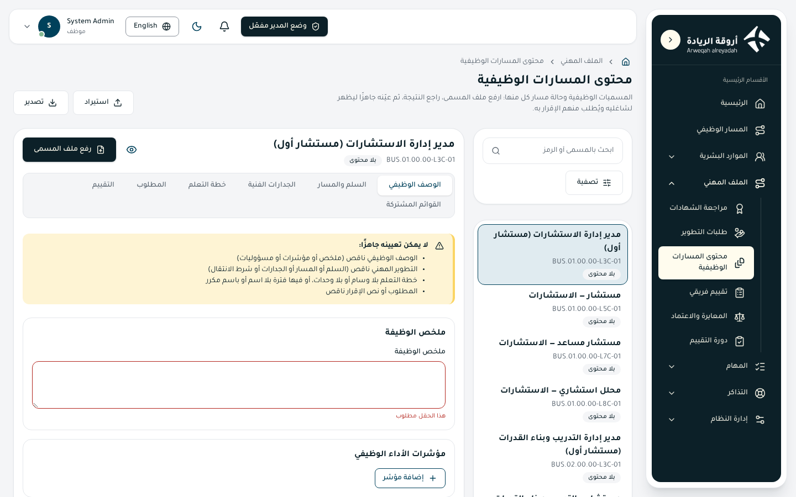
من يراها
- صلاحية العرض:
career_content.view(عرض محتوى المسارات الوظيفية)، النطاق: الكل. - الأدوار الافتراضية: لا يملكها من الأدوار المعتادة إلا مدير النظام. ويمنحها مدير المنصة مع المفاتيح أدناه لدور الموارد البشرية من صفحة الصلاحيات. والصلاحيات الإدارية التي تنتظر وضع مدير المنصة لا تعمل إلا والوضع مفعّل.
- القائمة: مجموعة «الملف المهني»، بند «محتوى المسارات الوظيفية». ولا يراها دور الموظف.
ما يمكنك فعله
| الإجراء | ماذا يحدث | مفتاح الصلاحية (اسمها) |
|---|---|---|
| فتح الصفحة والبحث والتصفية | المسميات كعمود أزرار (الاسم، الرمز، الحالة)؛ البحث بالمسمى أو الرمز؛ فلاتر الوحدة والدرجة والمسار وحالة المسار | career_content.view (عرض محتوى المسارات الوظيفية) |
| تعديل مسار يدويًا | مساحة عمل المسمى (سبعة تبويبات): الوصف الوظيفي، السلم والمسار، الجدارات الفنية، خطة التعلم، المطلوب، التقييم، القوائم المشتركة؛ «حفظ التعديلات» يرفع إصدار المحتوى. بلا مفتاح التعديل تُعرض للقراءة فقط | career_content.edit (تعديل محتوى المسار الوظيفي لمسمى) |
| معاينة المسار (أيقونة العين) | تعرض المسار كما يراه شاغلو المسمى، بلا اسم ولا تقدّم ولا إقرار | career_titlefile.preview (معاينة المسار الوظيفي كما يراه الموظف) |
| رفع ملف المسمى | يفتح نافذة «رفع ملف المسمى»: اختر ملف txt أو docx أو pdf أو الصق نصه، اضغط «استخراج»، راجع، ثم «حفظ المحتوى المستخرج» | career_titlefile.upload (رفع ملف المسمى واستخراج المسار الوظيفي منه) |
| التحليل بالذكاء الاصطناعي | يعرض أن يضع الذكاء الاصطناعي أجزاء ملف لم يستطع القارئ الثابت وضعها | career_titlefile.ai (تحليل ملف المسمى بالذكاء الاصطناعي) |
| تعيين المسار جاهزًا / إرجاعه إلى مسودة | يُظهر المسار لشاغليه (ويطلب إقرارهم) أو يخفيه من جديد | career_titlefile.publish (تعيين المسار الوظيفي جاهزًا أو إرجاعه إلى مسودة) |
| إعادة فتح الإقرار لشاغليه | يطلب من كل شاغل للمسمى الإقرار بالمسار من جديد، بسبب | career_acknowledge.reopen (إعادة فتح الإقرار بالمسار الوظيفي لشاغلي مسمى) |
| استيراد روابط التعلم | يستورد ملف Excel لروابط التعلم (رمز المسمى، الفترة، الوحدة، الرابط) | career_content.import (استيراد روابط وحدات التعلم من ملف) |
| تصدير القائمة | ينزّل قائمة المسميات وحالة مساراتها | career_content.export (تصدير قائمة المسميات وحالة مساراتها) |
كيف أفعل
بناء مسار مسمى من ملفه
- افتح محتوى المسارات الوظيفية وانقر المسمى في القائمة. تعرض اللوحة اسمه ورمزه وإصدار المحتوى وحالته.
- اضغط «رفع ملف المسمى». اختر ملف txt أو docx أو pdf (يُقرأ في متصفحك) أو الصق النص (حتى 200,000 حرف).
- اضغط «استخراج». يعرض الجدول كل جزء (الوصف الوظيفي، التطوير المهني، خطة التعلم، المطلوب) «سليم» أو «يحتاج مراجعة»، مع العدّادات (المؤشرات، المسؤوليات، مستويات السلم، وحدات التعلم، دقائق التعلم...) وملاحظات القارئ؛ والنصوص التي ليست من المحتوى (مثل «التالي» و«رجوع» و«طباعة») تُتجاهل وتُذكر.
- إن كان كل شيء سليمًا اضغط «حفظ المحتوى المستخرج». يرتفع إصدار المحتوى. ويبقى الحفظ مغلقًا ما دام جزء يحتاج مراجعة.
- إن لم يستطع القارئ وضع الأجزاء استعمل «حلّل بالذكاء الاصطناعي» (انظر القواعد)، وراجع النتيجة في الجدول نفسه ثم احفظ.
تعيين المسار جاهزًا لشاغليه
- افتح المسمى. تسرد اللوحة ما ينقص، أو تقول «كل الأجزاء مكتملة ويمكن تعيين المسار جاهزًا».
- اضغط «تعيين المسار جاهزًا». تذكر النافذة كم شاغلًا سيظهر لهم المسار ويُطلب إقرارهم.
- أكّد. يرى الشاغلون المسار ويقرؤونه عند دخولهم التالي.
- لإخفائه اضغط «إرجاع المسار إلى مسودة»: لا يُحذف شيء مما أقرّ به الناس.
إعادة فتح الإقرار
- افتح المسمى واضغط «إعادة فتح الإقرار لشاغلي المسمى (N)».
- اكتب السبب (5 أحرف على الأقل) واضغط «تأكيد».
- يُطلب من الشاغلين الإقرار من جديد عند دخولهم، ولا يستخدمون المنصة قبل ذلك.
استيراد روابط التعلم
- في رأس الصفحة اضغط زر الاستيراد واختر ملف Excel (نزّل القالب أولًا؛ أعمدته «رمز المسمى» و«الفترة» و«اسم الوحدة» و«الرابط»).
- راجع المعاينة: كم وحدة ستأخذ رابطًا جديدًا وكم تبقى كما هي؛ وكل صف مرفوض يعرض رقمه وسببه.
- أكّد. يرتفع إصدار المحتوى للمسميات التي تغيّرت.
القواعد
- ملف واحد لكل مسمى: الوصف والتطوير وخطة التعلم والمطلوب؛ وتقييم الأداء ليس في هذا الملف لأنه يخص مرحلة التطوير ويُرفع مرة واحدة من صفحة دورة التقييم (FR-113).
- لا يُحفظ شيء قبل أن تراجعه، والملف الذي فيه جزء يحتاج مراجعة لا يُحفظ. ومن الفحوصات: ملخص أو مؤشرات أو مسؤوليات ناقصة؛ سلم بلا مسمى حالي معلَّم؛ نقص خطوات مسار المستوى أو شرط الانتقال أو الجدارات أو وحدات التعلم أو الأوسمة أو بنود المطلوب أو نص الإقرار؛ إجمالي فترة تعلم لا يطابق وحداتها؛ رمز مسمى في الملف ليس رمز هذا المسمى؛ نص فوق حد مسموح أو مدة لا يفهمها القارئ.
- لا يُعيَّن المسار جاهزًا إلا إذا اكتمل (الوصف، التطوير، خطة التعلم بوحدة واحدة ووسام على الأقل، بنود المطلوب ونص الإقرار). ويُحفظ المسودة ناقصة، لكن لا بقيمة غير صالحة كرابط لا يبدأ بـ
https://أو فترة بلا اسم. - جاهز أو مسودة: لا يرى شاغلو المسمى المسار إلا وهو جاهز؛ والإرجاع إلى مسودة يخفيه دون حذف ما أقرّوا به.
- إصدارات المحتوى: كل حفظ يرفع الإصدار، وإقرار الموظف يسجّل الإصدار. وإن غيّر غيرك المحتوى بعد أن فتحته يُرفض حفظك («أغلق النافذة وافتحها من جديد ثم أعد تعديلك»).
- القراءة بالذكاء الاصطناعي (FR-126 وFR-127): القارئ الثابت يأتي أولًا وهو مجاني. وزر «حلّل بالذكاء الاصطناعي» يظهر فقط إذا فُعّلت خدمة ذكاء اصطناعي في الإعدادات وكنت تملك مفتاحه. ولا يُرسل شيء إلا إذا ضغطته، ونص الملف (بيانات شركة لا بيانات موظفين) يذهب إلى تلك الخدمة. وتراجع النتيجة قبل أي حفظ؛ والنصوص التي ليست في الملف حرفيًا تُسرد لتتحقق منها. والمدد والتواريخ يحسبها النظام دائمًا. حتى 6 تحليلات في الساعة للشخص.
- إعادة الفتح تحتاج سببًا وتُسجَّل في التدقيق.
- روابط التعلم يجب أن تبدأ بـ
https://؛ والرابط الفارغ يمسح الرابط. ويُرفض الصف إذا لم يوجد رمز المسمى أو الفترة أو الوحدة، أو تكرر اسم الوحدة في الفترة، أو كان الصف يكرر وحدة ذُكرت قبله. - التدقيق: يُسجَّل الرفع والتحليل بالذكاء الاصطناعي (بلا نص الملف) والحفظ وتغيير الجاهز والمسودة وإعادة الفتح.
نصائح ومشكلات شائعة
- «حفظ» مغلق: استخرج الملف أولًا، أو أصلح الأجزاء المذكورة تحت «أجزاء تحتاج مراجعة».
- «تعذّر قراءة النص»: جرّب لصق نص الملف.
- لا يمكن تعيين المسار جاهزًا: تسمّي اللوحة الأجزاء الناقصة.
- ترى مساحة العمل ولا تستطيع التعديل: لا تملك
career_content.edit.
18. دورة التقييم
«دورة التقييم» صفحة الموارد البشرية التي تدير تقييم الأداء السنوي. السنة المالية من أبريل إلى مارس. ترفع الموارد البشرية ملف التقييم (قالب كل مرحلة من مراحل التطوير الخمس وسلم الدرجات وبطاقة السنة المالية)، وتتأكد أن الدورة جاهزة، وتفتحها، وتنقلها من مرحلة إلى مرحلة بتواريخها، وتدير كتالوج المكوّن الإضافي والتذكيرات التلقائية، وتغلقها في النهاية.
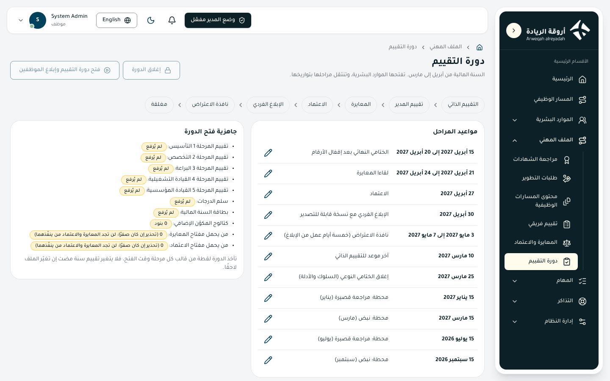
من يراها
- صلاحية العرض:
performance.cycle_view(عرض صفحة «دورة التقييم»)، النطاق: الكل. - الأدوار الافتراضية: لا يملكها من الأدوار المعتادة إلا مدير النظام؛ ويمنحها مدير المنصة مع المفاتيح أدناه لدور الموارد البشرية من صفحة الصلاحيات. والصلاحيات الإدارية التي تنتظر وضع مدير المنصة لا تعمل إلا والوضع مفعّل.
- القائمة: مجموعة «الملف المهني»، بند «دورة التقييم».
- قبل فتح الدورة تكون الصفحة في وضع عرض؛ ويرى الموظفون في صفحتهم «لم تُفتح دورة التقييم بعد».
ما يمكنك فعله
| الإجراء | ماذا يحدث | مفتاح الصلاحية (اسمها) |
|---|---|---|
| فتح الصفحة وقراءة المراحل والمواعيد والجاهزية | شريط المراحل وبطاقة الجاهزية ومواعيد المراحل والكتالوج والتذكيرات وملف التقييم | performance.cycle_view (عرض صفحة «دورة التقييم») |
| فتح دورة التقييم وإبلاغ الموظفين | يسأل عن السنة المالية ويأخذ لقطة من القوالب ويبدأ مرحلة التقييم الذاتي | performance.cycle_manage (فتح دورة التقييم ونقلها وتعديل مواعيدها) |
| نقل الدورة للمرحلة التالية | تنتقل الدورة ولا تعود | performance.cycle_manage (فتح دورة التقييم ونقلها وتعديل مواعيدها) |
| تعديل موعد مرحلة (أيقونة القلم) | يحفظ الموعد أو المدى الجديد ويفحص الترتيب ويسجّله في التدقيق ويُشعر من تتأثر مواعيدهم | performance.cycle_manage (فتح دورة التقييم ونقلها وتعديل مواعيدها) |
| إغلاق الدورة | بعد تأكيد تُغلق الدورة نهائيًا ويُحفظ اسمك ووقتك | performance.cycle_close (إغلاق دورة التقييم) |
| رفع ملف التقييم | نافذة لقراءة ملف txt أو docx أو pdf (أو نص ملصوق) وحفظ المراحل الخمس والسلم والبطاقة | performance.template_upload (رفع ملف التقييم (قوالب المراحل وسلم الدرجات وبطاقة السنة)) |
| تحليل الملف بالذكاء الاصطناعي | يضع الذكاء الاصطناعي أجزاء الملف في أماكنها وتراجع أنت قبل الحفظ | performance.template_ai (تحليل ملف التقييم بالذكاء الاصطناعي) |
| تعديل جزء من الملف أو إضافته أو حذفه | نموذج لكل قالب مرحلة ولسلم الدرجات ولبطاقة السنة المالية؛ وحذف قالب مرحلة | performance.template_edit (إضافة وتعديل وحذف أجزاء ملف التقييم (المراحل وسلم الدرجات وبطاقة السنة)) |
| تصدير قائمة ملف التقييم | ينزّل قائمة الأجزاء السبعة | performance.template_export (تصدير قائمة ملف التقييم) |
| إضافة بند للكتالوج أو حذفه | بنود المكوّن الإضافي لهذه السنة (مبادرات، مساهمة في النمو) | performance.catalog_manage (إدارة كتالوج المكوّن الإضافي) |
| تصدير الكتالوج | ينزّل الكتالوج | performance.catalog_export (تصدير كتالوج المكوّن الإضافي) |
| إضافة تذكير أو تعديله أو تشغيله أو إيقافه أو حذفه | التذكيرات التلقائية للدورة | performance.reminders_manage (إضافة وتعديل وحذف التذكيرات التلقائية لدورة التقييم) |
| تصدير التذكيرات | ينزّل التذكيرات | performance.reminders_export (تصدير التذكيرات التلقائية لدورة التقييم) |
الأزرار التي لا تعمل الآن تبقى ظاهرة باهتة، والنقر عليها يشرح السبب («لم تُفتح الدورة بعد» و«الدورة مغلقة»...).
مراحل الدورة
كل مرحلة زر في الشريط؛ والنقر عليه يشرح من يعمل فيها وماذا يحدث وموعدها ويأخذك إلى شاشتها.
| المرحلة | من يعمل | ماذا يحدث | الموعد المعتاد |
|---|---|---|---|
| التقييم الذاتي | الموظف | يقيّم سلوكياته ويكتب إنجازاته ويختار من الكتالوج؛ ويصل مديره إشعار | حتى 10 مارس |
| تقييم المدير | المدير المباشر ثم المدير الأعلى | يراجع التقييم الذاتي ويدخل درجات النتائج والسلوك؛ وغير المباشرين يتبعون مراجعة مديرهم المباشر | بعد التقييم الذاتي |
| المعايرة | حامل مفتاح المعايرة | يقارن الدرجات بين المديرين ويعدّل بسبب مكتوب | 21 إلى 24 أبريل |
| الاعتماد | حامل مفتاح الاعتماد | يعتمد النتائج ويبتّ في الاعتراضات | 27 أبريل |
| الإبلاغ الفردي | النظام | يبلّغ كل موظف بنتيجته مع نسخة قابلة للتصدير | 30 أبريل |
| نافذة الاعتراض | الموظف وحامل الاعتماد | اعتراض واحد مسبَّب على بند | خمسة أيام عمل |
| مغلقة | النظام | تُغلق الدورة وتبقى النتائج في سجل الموظف | — |
كيف أفعل
تجهيز الدورة وفتحها
- اضغط «رفع ملف التقييم». اختر ملف txt أو docx أو pdf أو الصق النص، ثم اضغط «استخراج».
- اقرأ الجدول: لكل مرحلة من الخمس الأساسي (نتائج/سلوك) وحصص المعايير والإضافي والسقف والسلوكيات والحالة «سليمة» أو «تحتاج مراجعة»؛ ثم الأجزاء المشتركة (سلم الدرجات، بطاقة السنة المالية). واضغط «حفظ تقييم كل المراحل» حين يكون كل شيء سليمًا.
- انظر «جاهزية فتح الدورة»: يجب أن تقرأ كل مرحلة وسلم الدرجات وبطاقة السنة المالية «مرفوع»؛ ويُستحسن أن يكون في الكتالوج بنود؛ وأن يحمل شخصٌ مفتاح المعايرة وشخصٌ مفتاح الاعتماد (تحذير فقط).
- اضغط «فتح دورة التقييم وإبلاغ الموظفين»، وأكّد السنة المالية (تُقترح السنة المالية القادمة)، ثم «فتح الدورة».
تعديل موعد مرحلة
- في «مواعيد المراحل» اضغط قلم الصف.
- املأ «من (أو يوم واحد)» وإن كان مدى فـ«إلى».
- اضغط «حفظ الموعد». وإن كان الترتيب خطأ تذكر النافذة السبب (مثل «الموعد يسبق نهاية المرحلة قبله»).
نقل الدورة وإغلاقها
- اضغط «نقل الدورة للمرحلة التالية» حين تنتهي مرحلة (وتتبع الدورة التواريخ أيضًا).
- بعد البتّ في الاعتراضات اضغط «إغلاق الدورة» وأكّد.
إضافة تذكير
- في «التذكيرات التلقائية» اضغط «إضافة تذكير».
- اختر النوع والأيام والعنوان والنص بالعربية (الإنجليزية اختيارية) واحفظ.
القواعد
- الموارد البشرية تفتح الدورة (FR-118)، ولا تُفتح قبل اكتمال ملف التقييم: قالب لكل مرحلة من الخمس وسلم الدرجات وبطاقة السنة المالية. ولا توجد إلا دورة واحدة لكل سنة مالية.
- تأخذ الدورة لقطة من القوالب وقت الفتح، فلا يتغير تقييم سنة مضت إن تغيّر الملف لاحقًا. وتغيير الملف يسري على الدورات القادمة.
- يمكن تجهيز المواعيد قبل فتح الدورة. ولها قيم معتادة للسنة المالية (مثل المعايرة 21 إلى 24 أبريل، والاعتماد 27 أبريل، والإبلاغ الفردي 30 أبريل، ونافذة الاعتراض 3 إلى 7 مايو، وآخر موعد للتقييم الذاتي 10 مارس). ويرفض فحص التواريخ موعدًا يسبق نهاية المرحلة قبله أو يتجاوز بداية المرحلة بعده أو نهاية قبل البداية.
- تعديل موعد في دورة جارية يُسجَّل في التدقيق ويُشعر كل من تقيّمه الدورة ومديريهم المباشرين.
- أربعة مواعيد للمحطات (مراجعتان قصيرتان في يناير ويوليو، ونبضان في مارس وسبتمبر) تُعدَّل في بطاقة المواعيد نفسها.
- الدورة تسير في اتجاه واحد: لا رجوع بين المراحل؛ والإغلاق جائز من أي مرحلة.
- يُرفض الإغلاق ما دام اعتراض قيد النظر. وبعد الإغلاق لا تتغير التقييمات وتبقى النتائج في سجل كل موظف.
- المكوّن الإضافي: «التعلم» آلي من ساعات التعلم المعتمدة؛ و«المبادرات الداخلية» و«المساهمة في النمو» من كتالوج هذه السنة، لكل بند نقاط (من 1 إلى 10) وسقف لكل نوع يأتي من ملف التقييم. واسم البند 3 أحرف على الأقل. وحذف البند يطلب تأكيدًا لأن موظفًا قد يكون اختاره.
- فحوص ملف التقييم: نتائج + سلوك يساويان الأساسي؛ حصص معايير النتائج تجمع 100؛ الأساسي + الإضافي يساويان السقف؛ لكل مرحلة معايير وسلوكيات؛ لكل سلوك سؤال للمقيّم ورمز بصيغة B1.1؛ سلم الدرجات من مستويين إلى عشرة بنطاقات واضحة؛ بطاقة السنة اثنا عشر شهرًا. والملف الذي فيه مشكلة منها لا يُحفظ.
- سلم الدرجات: استثنائي من 110، يفوق التوقعات 95 إلى 109.9، يحقق التوقعات 80 إلى 94.9، يحتاج تحسينًا 65 إلى 79.9، دون التوقعات أقل من 65 (هذه قيم الملف، وللموارد البشرية تعديل المستويات).
- التذكيرات تصل بإشعار داخلي وبريد، وتتوقف عند الإنجاز، ولا تُرسل الجمعة والسبت، وتُرسل بمهمة يومية واحدة الساعة 08:00 بتوقيت الرياض ولا تتكرر في اليوم. تذكير الموظف في الأيام المضبوطة قبل آخر موعد (من 1 إلى 30، مثل 7 و3 و1)؛ وتذكير المدير كل N يوم (من 1 إلى 14)؛ والمحطات قبل موعدها بـN يوم (من 1 إلى 14)؛ وحاملا المعايرة والاعتماد كل N يوم (من 1 إلى 14). حتى 30 تذكيرًا.
- قراءة الملف بالذكاء الاصطناعي: بالضغط على الزر فقط، وبشرط تفعيل خدمة ذكاء اصطناعي في الإعدادات، وحتى 6 في الساعة للشخص؛ وتراجع النتيجة وتُسرد النصوص التي لم تُوجد حرفيًا في الملف.
- التدقيق: يُسجَّل الفتح والنقل والإغلاق وتعديل المواعيد ورفع الملف وتغيير التذكيرات.
نصائح ومشكلات شائعة
- «لا يمكن فتح الدورة قبل رفع ملف التقييم»: اقرأ بطاقة الجاهزية لترى ما ينقص.
- «توجد دورة لهذه السنة من قبل»: اختر السنة المالية الصحيحة.
- تحذير «لن تجد المعايرة والاعتماد من ينفّذهما»: اطلب من مدير المنصة أن يمنح شخصًا مفتاحي المعايرة والاعتماد.
- تعذّر تنفيذ العملية: ربما تغيّرت المرحلة؛ أعد تحميل الصفحة.
19. المعايرة والاعتماد
«المعايرة والاعتماد» الصفحة التي يقارن فيها شخص واحد الدرجات التي أعطاها المديرون، ويعدّلها بنصف درجة بسبب مكتوب، ثم يعتمد النتائج ويبلّغ كل موظف فرديًا ويبتّ في الاعتراضات التي يرفعها الموظفون. ولا يرى الموظفون الدرجات قبل اعتماد هذه الصفحة والإبلاغ الفردي.
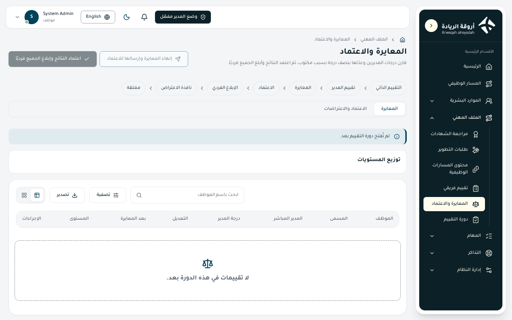
من يراها
- صلاحية العرض:
performance.calibration_view(عرض صفحة «المعايرة والاعتماد»)، النطاق: الكل. - من يملكها: يمنحها مدير المنصة من صفحة الصلاحيات للموارد البشرية (فتراها للقراءة فقط) وللشخص الذي يعاير ويعتمد. لا يملكها أحد افتراضيًا إلا مدير النظام؛ وليست في دور رئيس الوحدة.
- مفتاحا العمل
performance.calibrateوperformance.approveيحملهما شخص واحد يعيّنه مدير المنصة من صفحة الصلاحيات. والموارد البشرية ترى الصفحة بلا تعديل: لا تعاير ولا تعتمد. - والصلاحيات الإدارية التي تنتظر وضع مدير المنصة لا تعمل إلا والوضع مفعّل.
- القائمة: مجموعة «الملف المهني»، بند «المعايرة والاعتماد».
ما يمكنك فعله
| الإجراء | ماذا يحدث | مفتاح الصلاحية (اسمها) |
|---|---|---|
| فتح الصفحة والبحث والتصفية | تبويبان: «المعايرة» و«الاعتماد والاعتراضات»؛ رسم توزيع المستويات؛ الجدول؛ البحث باسم الموظف؛ الفلاتر: المستوى والمرحلة المهنية وعُدّلت درجته | performance.calibration_view (عرض صفحة «المعايرة والاعتماد») |
| فتح صف | نافذة تفاصيل بتفصيل الدرجة | performance.calibration_view (عرض صفحة «المعايرة والاعتماد») |
| تعديل الدرجة (أيقونة المنزلقات) | تفتح «تعديل المعايرة»: التعديل بالنقاط والسبب؛ وتعرض الدرجة بعد المعايرة | performance.calibrate (معايرة درجات الموظفين وإنهاء المعايرة) |
| إنهاء المعايرة وإرسالها للاعتماد | تنقل الدورة إلى مرحلة الاعتماد ولا يمكن تعديل الدرجات بعدها | performance.calibrate (معايرة درجات الموظفين وإنهاء المعايرة) |
| اعتماد النتائج وإبلاغ الجميع فرديًا | تُجمَّد النتيجة النهائية لكل موظف ويصله إشعار وتبدأ نافذة الاعتراض | performance.approve (اعتماد النتائج والبتّ في الاعتراضات) |
| قبول اعتراض وإعادته للمدير | يعود التقييم إلى المدير | performance.approve (اعتماد النتائج والبتّ في الاعتراضات) |
| رفض اعتراض | يُرفض بسبب يقرؤه الموظف | performance.approve (اعتماد النتائج والبتّ في الاعتراضات) |
| اعتماد التقييم المعدّل | يعتمد التقييم الذي أعاده المدير بعد اعتراض مقبول | performance.approve (اعتماد النتائج والبتّ في الاعتراضات) |
| تصدير القائمة | ينزّل قائمة المعايرة | performance.calibration_export (تصدير قائمة المعايرة والاعتماد) |
الزر بلا مفتاحه يُخفى؛ والزر الذي ليست مرحلته قائمة يظهر باهتًا ويشرح («متاح في مرحلة المعايرة فقط» و«متاح في مرحلة الاعتماد فقط»).
كيف أفعل
معايرة الدرجات
- افتح الصفحة في مرحلة المعايرة. شريط التنبيه «يمكنك معايرة درجات الموظفين قبل انتهاء الموعد» يوصلك إليها.
- انظر «توزيع المستويات» والجدول: الموظف والمسمى والمدير المباشر ودرجة المدير والتعديل والدرجة بعد المعايرة والمستوى.
- لدرجة تريد تعديلها اضغط أيقونة المنزلقات في صفها. أدخل التعديل (من −10 إلى +10 بخطوة نصف درجة) والسبب (5 أحرف على الأقل) ثم «حفظ».
- إن ظهر سطر «بانتظار المدير» فمدير ذلك الموظف لم يرسل تقييمه بعد؛ ولا تُنهى المعايرة قبل ذلك.
- اضغط «إنهاء المعايرة وإرسالها للاعتماد» وأكّد.
الاعتماد وإبلاغ الجميع
- افتح تبويب «الاعتماد والاعتراضات» في مرحلة الاعتماد.
- راجع التوزيع وجدول الدرجات.
- اضغط «اعتماد النتائج وإبلاغ الجميع فرديًا» وأكّد: «تُجمَّد النتيجة النهائية لكل موظف ويصله إشعار بها، وتبدأ نافذة الاعتراض (خمسة أيام عمل).»
البتّ في اعتراض
- في «الاعتراضات» اقرأ الموظف والبند والسبب والحالة.
- اضغط «قبول وإعادته للمدير» (فيعيد المدير التقييم ويرسله من جديد)، أو «رفض» واكتب السبب (10 أحرف على الأقل) وأكّد.
- بعد أن يرسل المدير التقييم المعدّل اضغط «اعتماد التقييم المعدّل». تصير تلك الدرجة نهائية.
- حين يُبتّ في كل الاعتراضات تغلق الموارد البشرية الدورة من صفحة دورة التقييم.
القواعد
- الدرجة المعروضة للمعايرة (FR-122): درجة المدير الأعلى المرسلة إن وُجدت وإلا درجة المدير المباشر. ويدخل في المعايرة فقط من أرسل مديره المباشر تقييمه.
- التعديل: من −10 إلى +10 بخطوة نصف درجة؛ والسبب المكتوب (5 أحرف على الأقل) إلزامي عند أي تعديل غير صفري (وتصفير التعديل يمسح السبب). الدرجة بعد المعايرة = درجة المدير + التعديل، لا تقل عن 0 ولا تتجاوز سقف المرحلة، مقرّبة إلى خانة عشرية. ولا يجوز إلا في مرحلة المعايرة ولحامل مفتاحها؛ وكل تغيير يُسجَّل في التدقيق (الدرجة قبل وبعد، بلا نص السبب)، ويرى الموظف التعديل وسببه بعد الإبلاغ.
- إنهاء المعايرة يشترط أن يكون كل تقييم مرسلًا من مديره المباشر، وينقل الدورة بالخطوة نفسها التي تستعملها الموارد البشرية.
- الاعتماد يعمل في مرحلة الاعتماد فقط. ويُجمّد نتيجة كل موظف (الدرجة النهائية والمستوى والتفصيل والتعديل وسببه) ويبلّغ كل واحد فرديًا. وصفحة الموظف لا تحمل درجة قبل ذلك الإبلاغ؛ فالجواب نفسه يخلو منها.
- نافذة الاعتراض (FR-123): خمسة أيام عمل من الإبلاغ (الجمعة والسبت عطلة). وبعد آخر يوم يُرفض أي اعتراض جديد.
- اعتراض واحد لكل موظف على بند واحد (معيار نتائج أو سلوك أو المكوّن الإضافي) بسبب من 10 أحرف على الأقل. والحالات: قيد نظر المعتمد، أُعيد للمدير، بانتظار اعتماد التقييم المعدّل، اعتُمد التقييم المعدّل، مرفوض.
- بعد اعتراض مقبول يعيد المدير المباشر التقييم، ثم يراجعه المدير الأعلى، ثم يعتمد المعتمِد التقييم المعدّل؛ ورفض الاعتراض يحتاج سببًا ويصير الاعتماد نهائيًا.
- لا تُغلق الدورة وفيها اعتراض مفتوح أو قيد إعادة التقييم.
- يُشعَر المعتمِد باعتراض جديد، ويذكّر شريط الصفحة حاملي المفتاحين باقتراب موعد المعايرة أو الاعتماد.
- سلم الدرجات والمستويات ومعادلة الدرجة موضحة في صفحة «دورة التقييم»: الأساسي (النتائج والسلوك بأوزان المرحلة) ثم التعلم والمبادرات والنمو، حتى سقف المرحلة.
نصائح ومشكلات شائعة
- لا تستطيع التعديل بصفتك من الموارد البشرية: ترى الموارد البشرية الصفحة للقراءة فقط؛ ومفتاحا المعايرة والاعتماد لشخص واحد معيَّن.
- «تعذّر الحفظ»: تأكد أن مرحلة المعايرة قائمة وأن مدير الموظف أرسل تقييمه.
- رُفض التعديل: يجب أن يكون من مضاعفات 0.5 بين −10 و+10 وله سبب.
20. تقييم فريقي
«تقييم فريقي» صفحة المدير في دورة التقييم. تقيّم أعضاء فريقك في مرحلة تقييم المدير: المدير المباشر أولًا ثم يراجع المدير الأعلى ويعدّل إن لزم. لكل شخص تدخل درجات النتائج وتقيّم السلوكيات، وترى الدرجة النهائية حيّة. وزر في كل صف يسجّل محاضر محطات السنة.
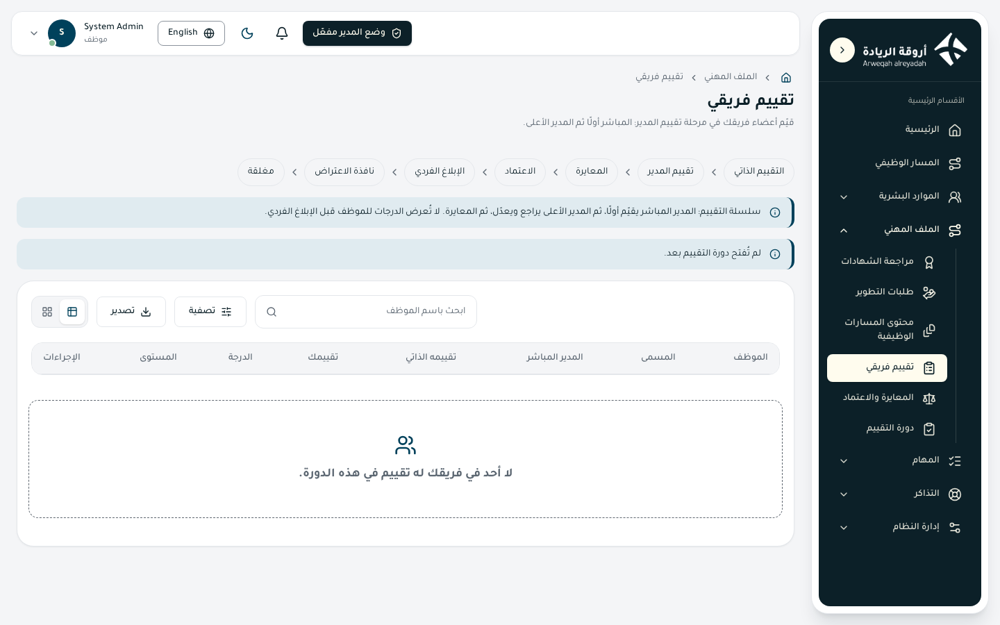
من يراها
- صلاحية العرض:
performance.team_view(عرض صفحة «تقييم فريقي»)، النطاقات: الوحدة وما دونها، الكل. والنطاق الافتراضي الوحدة وما دونها. - الأدوار الافتراضية: دور رئيس كل وحدة يملك مفاتيح العرض والتقييم والتصدير بنطاق «الوحدة وما دونها»، وكذلك مفاتيح المحطات. أما دور الموظف فلا يملكها.
- لا تحتاج إلى وضع مدير المنصة.
- القائمة: مجموعة «الملف المهني»، بند «تقييم فريقي». ومن خارج وحدتك وما دونها لا وجود له عندك: يجيب النظام كأن السجل غير موجود.
- قبل فتح الدورة تقول الصفحة «لم تُفتح دورة التقييم بعد».
ما يمكنك فعله
| الإجراء | ماذا يحدث | مفتاح الصلاحية (اسمها) |
|---|---|---|
| فتح الصفحة والبحث والتصفية | شريط المراحل وملاحظة السلسلة والإشعارات وجدول الفريق؛ البحث باسم الموظف؛ الفلاتر: النطاق («كل من تحتي بكل المستويات» أو «مباشرون فقط») وحالة التقييم («بانتظار تقييمك» و«تم تقييمه») | performance.team_view (عرض صفحة «تقييم فريقي») |
| قيّم / عرض (أيقونة القلم أو العين أو النقر على الصف) | تفتح نافذة تقييم الموظف؛ وبعد مرحلة تقييم المدير تكون للعرض فقط | performance.team_view (عرض صفحة «تقييم فريقي») |
| حفظ مسودة وإرسال التقييم وحفظ التعديل | يحفظ ما أدخلت أو يرسل التقييم إلى الخطوة التالية | performance.team_evaluate (تقييم أعضاء الفريق وإرسال التقييم) |
| المحطات (أيقونة التقويم) | تفتح محطات العضو؛ وتسجّل محضر محطة أو تعدّله | performance.milestone_view (عرض محطات الفريق ومحاضرها) وperformance.milestone_record (تسجيل محضر محطة لعضو الفريق) |
| تصدير القائمة | ينزّل قائمة تقييم الفريق | performance.team_export (تصدير قائمة «تقييم فريقي») |
كيف أفعل
تقييم عضو في فريقك
- افتح تقييم فريقي. يذكر التنبيه كم من فريقك بانتظار تقييمك، ويقول صندوق الإشعارات مثلًا «<الاسم> أرسل تقييمه الذاتي وينتظر مراجعتك»؛ والاسم يفتح التقييم.
- اضغط «قيّم» في الصف (أو انقر الصف). وإن كان الزر باهتًا فانقره لتقرأ السبب.
- اقرأ الملاحظة في الأعلى: تقييم الموظف الذاتي، إن أُرسل، يظهر أسفل كل سلوك ولا تلتزم به.
- النتائج: أدخل درجة من 0 إلى 100 لكل معيار (ويعرض كل معيار حصته).
- السلوكيات: اختر مستوى لكل سلوك (دائمًا، غالبًا، أحيانًا، نادرًا، أبدًا) واكتب الملاحظة؛ وهي إلزامية عند «دائمًا» و«نادرًا» و«أبدًا».
- المكوّن الإضافي: «التعلم» آلي؛ وعلّم بنود الكتالوج التي ادّعاها الموظف وتقبلها.
- تابع بطاقة الدرجة النهائية الحيّة. اضغط «حفظ مسودة» ثم «إرسال التقييم». وإن كنت المدير المباشر يذهب التقييم بعدها إلى المدير الأعلى ثم المعايرة.
المراجعة بصفتك المدير الأعلى
- انتظر حتى يرسل المدير المباشر التقييم (وإلا يشرح الزر «بانتظار مراجعة <المدير> (مديره المباشر) أولًا»).
- افتح تقييم المدير المباشر وراجعه وعدّله إن لزم ثم أرسله. وتنتقل الدرجات بعدها إلى المعايرة.
تسجيل محضر محطة
- اضغط أيقونة التقويم عند العضو واختر المحطة.
- للمراجعة القصيرة أجب «أين نحن؟» و«ما العائق؟» والإجراء المتفق عليه (إلزامي، 5 أحرف على الأقل). وللنبض اكتب ملاحظة قصيرة.
- اضغط «حفظ المحضر». يُبلَّغ الموظف ويقرّ باطلاعه.
ما يراه الموظف (في صفحته)
- قبل انتهاء مرحلة تقييم المدير يكون تقييم الموظف «قيد المراجعة»: لا تُعرض الدرجات قبل الإبلاغ الفردي بعد الاعتماد (FR-119).
- في مرحلة التقييم الذاتي يضغط الموظف «بدء التقييم الذاتي» ويقيّم السلوكيات بالمستويات الخمسة نفسها، ويكتب إنجازاته لكل معيار نتائج (بلا درجة)، ويختار بنود الكتالوج. ويستطيع تعديله حتى يبدأ مديره.
- تظهر المحطات في تبويب «محطات السنة» عند الموظف بزر «اطّلعت على المحضر».
القواعد
- من يقيّم من (FR-120): كل مدير يقيّم كل من تحته، مباشرًا وغير مباشر، في كل المستويات.
- سلسلة واحدة: الموظف يقيّم نفسه، والمدير المباشر يراجع ويعدّل، والمدير الأعلى يراجع ويعدّل تقييم المدير المباشر، ثم المعايرة والاعتماد. ولا يُقيَّم غير المباشر قبل مراجعة مديره المباشر.
- أسباب منع الزر (تُعرض دائمًا مع سببها): لم تُفتح الدورة بعد؛ مرحلة تقييم المدير لم تبدأ (وتُذكر المرحلة الحالية)؛ بانتظار مراجعة المدير المباشر أولًا؛ انتهت مرحلة تقييم المدير فالتقييم للعرض فقط. ولا يُعدَّل التقييم بعد ذلك إلا حين يُعاد إلى المدير بعد اعتراض مقبول.
- احتساب الدرجة: النتائج بدرجة من 0 إلى 100 لكل معيار؛ والسلوكيات: دائمًا = 100، غالبًا = 75، أحيانًا = 50، نادرًا = 25، أبدًا = 0 ويُؤخذ المتوسط. الأساسي = النتائج × وزنها + السلوك × وزنه (وأوزان مرحلة تطوير الموظف، مثل 60/40 للتأسيس). ثم يُضاف التعلم (ساعات التعلم المعتمدة من ساعات المرحلة، حتى 10 نقاط) والمبادرات الداخلية والمساهمة في النمو (لكل منهما سقفه). ولا تتجاوز الدرجة النهائية سقف المرحلة (مثل 125 للتأسيس) (FR-121).
- سلم الدرجات: استثنائي من 110، يفوق التوقعات 95 إلى 109.9، يحقق التوقعات 80 إلى 94.9، يحتاج تحسينًا 65 إلى 79.9، دون التوقعات أقل من 65.
- ملاحظات السلوك: إلزامية عند دائمًا ونادرًا وأبدًا، 5 أحرف على الأقل، من الموظف ومن المدير.
- زر الإرسال لا يعمل ما دام حقل غير صالح، والخادم يرفض تقييمًا بحقول خاطئة أو بعد انتهاء المرحلة.
- تقييم الموظف الذاتي لا يلزم المدير.
- المحطات تقويم ثابت: مراجعتان قصيرتان في 15 يناير و15 يوليو، ونبضان في 15 مارس و15 سبتمبر، والدرجة الإنذارية في أكتوبر «لا تجري هذا العام»؛ وتعدّل الموارد البشرية تواريخها من صفحة دورة التقييم. والمحاضر بلا درجات. وتسجيل المحضر من جديد يمسح إقرار الموظف باطلاعه.
- التذكيرات: يُذكَّر المدير كل N يوم بالتقييمات التي تنتظره وبمحطات لم تُسجَّل محاضرها؛ والتذكير يتوقف عند الإنجاز ولا يُرسل الجمعة والسبت.
- كبقية القوائم في الصفحة بحث وفلاتر وتبديل جدول / كروت وتصدير.
نصائح ومشكلات شائعة
- الزر باهت: انقره واقرأ السبب، فهو أحد أسباب المنع أعلاه.
- شخص من فريقك غير ظاهر: هو خارج وحدتك وما دونها، أو لا تقييم له في هذه الدورة («لا أحد في فريقك له تقييم في هذه الدورة»).
- فشل الإرسال: راجع الحقول (الدرجات من 0 إلى 100، والملاحظات حيث تلزم) وأن مرحلة المدير ما زالت قائمة.
المهام
21. مهامي
«مهامي» مكان واحد لكل ما هو مطلوب منك، وما طلبته من غيرك، وما تتابعه. ويرى المدير تبويبًا إضافيًا لفريقه. تُعرض القائمة نفسها كجدول أو كبطاقات أو كلوحة كانبان بعمود لكل حالة. أما «مصفوفة المهام» فهي ملخص لمهامك المفتوحة في أربعة مربعات، وتظهر في الصفحة الرئيسية.
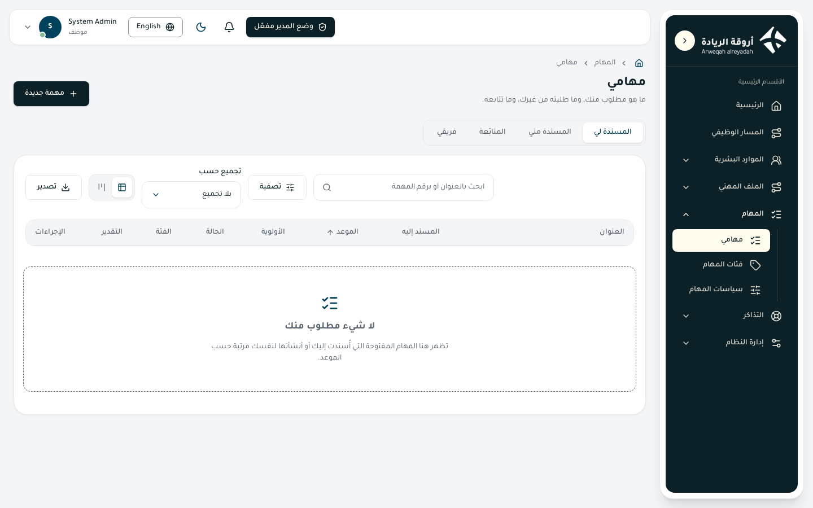
من يراها
- مفتاح العرض:
tasks.view(«عرض صفحة مهامي وتفاصيل المهمة»). النطاق الافتراضي: «خاص بي» (المهام المرتبطة بك). - الأدوار الافتراضية: دور «موظف» يملكه، مع إنشاء المهام وتعديلها وتغيير حالتها لمهامه. أما تبويب «فريقي» فيحتاج
tasks.team_view(«عرض صفحة مهام الفريق»)، وهو في دور رئيس كل وحدة (الوحدة وما تحتها). - الصفحة لا تحتاج وضع مدير المنصة، ويمكن للمدير إخفاؤها عن دور من صفحة «رؤية الصفحات».
- المهمة التي لا علاقة لك بها أو خارج نطاقك تظهر كأنها غير موجودة.
ماذا يمكنك أن تفعل
| الإجراء | ماذا يحدث | مفتاح الصلاحية (الاسم) |
|---|---|---|
| مهمة جديدة | تفتح نافذة لإنشاء مهمة | tasks.create (إنشاء مهمة جديدة) |
| الإسناد لشخص آخر | اختيار شخص آخر في حقل «المسند إليه» | tasks.assign (إسناد مهمة لشخص آخر) |
| تبويب فريقي | يعرض مهام مرؤوسيك المباشرين أو كل من تحتك | tasks.team_view (عرض صفحة مهام الفريق) |
| المصفوفة في الرئيسية | مهامك المفتوحة في أربعة مربعات | tasks.matrix_view (عرض مصفوفة المهام) |
| تعديل | تغيير العنوان والتفاصيل والموعد والأولوية | tasks.update (تعديل بيانات المهمة) |
| نقل المهمة (سحب أو قائمة) | تغيير حالة مهمتك | tasks.change_status (تغيير حالة مهامي) |
| نقل مهمة من الفريق | تغيير حالة مهمة أحد أفراد فريقك | tasks.team_change_status (تغيير حالة مهام الفريق) |
| اعتماد / رفض | قرار في مهمة أسندها شخص لنفسه | tasks.approve / tasks.reject |
| المراجعة (قبول أو إعادة) | قبول العمل المنجز أو إعادته بملاحظة | tasks.review |
| إعادة الفتح | إرجاع مهمة مكتملة | tasks.reopen (إعادة فتح مهمة مكتملة) |
| إعادة الإرسال | إرسال مهمة مرفوضة للاعتماد مرة أخرى | tasks.resubmit |
| اعتراض | الاعتراض على مهمة أُسندت إليك | tasks.object |
| متابعة / إلغاء المتابعة | تظهر المهمة في تبويب «المتابَعة» | tasks.follow (متابعة مهمة) |
| تسجيل وقت | تسجيل الوقت الذي عملته | tasks.log_time |
| فلتر «المؤرشفة» | عرض المهام المؤرشفة | tasks.archive_view (عرض المهام المؤرشفة) |
| استرجاع | إرجاع مهمة مؤرشفة | tasks.restore (استرجاع مهمة مؤرشفة) |
| تصدير | تصدير القائمة إلى ملف (النطاق، الأعمدة، نوع الملف) | tasks.export (تصدير قوائم المهام) |
لا يوجد استيراد لهذه القائمة: تُنشأ المهام واحدة واحدة لا من ملف.
خطوات العمل
إنشاء مهمة
- اضغط مهمة جديدة.
- اكتب العنوان (إلزامي) والتفاصيل.
- اختر المسند إليه (أنت افتراضيًا) والفئة والموعد (إلزامي ولا يكون في الماضي) والأولوية والوقت المتوقع بالساعات والتكرار (لا تتكرر، كل يوم، كل أسبوع، كل شهر، مع تاريخ نهاية اختياري).
- فعّل «علّمها عاجلة» أو «تحتاج مراجعة» عند الحاجة.
- اقرأ السطر أسفل النموذج: إن كانت المهمة لنفسك فيذكر من يعتمدها أو أنه لا يلزم اعتماد. اضغط إنشاء المهمة.
تغيير حالة مهمة
- في اللوحة اسحب البطاقة من مقبضها إلى عمود آخر، أو افتح المهمة واختر من «نقل إلى».
- إن لزمت ملاحظة أو تاريخ إنجاز تظهر نافذة صغيرة تطلبه.
- إن كانت النقلة غير مسموحة ترجع البطاقة ويظهر السبب.
متابعة فريقك
- افتح تبويب فريقي.
- اختر «مرؤوسيّ المباشرون» أو «كل من تحتي».
- في اللوحة فعّل «صف لكل شخص» لتقسيمها حسب الشخص.
البحث عن مهمة
- اكتب في خانة البحث: العنوان أو رقم المهمة (TSK-000123).
- استعمل الفلاتر: الحالة، الأولوية، الشخص، الفئة، الراكدة فقط، المتأخرة فقط، تضمين المكتملة والمرفوضة، المؤرشفة.
- جمّع الجدول حسب الموعد أو الحالة أو الشخص، وبدّل بين الجدول والبطاقات واللوحة. تتذكر المنصة اختيارك.
القواعد
- تفتح الصفحة على المهام المفتوحة مرتبة بالموعد. لا تظهر المكتملة والمرفوضة إلا إذا فعّلت «تضمين المكتملة والمرفوضة» (واللوحة تعرض كل الأعمدة دائمًا).
- التبويبات: المسندة لي، المسندة مني، المتابَعة، وفريقي للمديرين. (FR-48)
- الحالات: بانتظار الاعتماد، للتنفيذ، قيد التنفيذ، بانتظار المراجعة، مكتملة، مرفوضة. ولكل مهمة رقم مثل TSK-000123.
- من يسند لمن: المدير لأي شخص تحته؛ والموظف لمدير إدارته؛ والمشاركون في نفس التذكرة لبعضهم؛ ولأي شخص أن يسند لنفسه. (FR-48)
- الاعتماد الذاتي: المهمة التي تسندها لنفسك تبدأ «بانتظار الاعتماد» ويعتمدها أو يرفضها مديرك المباشر. ومن لا مدير له تُعتمد مهمته تلقائيًا. المهمة المعتمدة تصير «للتنفيذ». المهمة المرفوضة تظهر «مرفوضة»؛ يعدّلها صاحبها ويضغط إعادة الإرسال فتعود إلى المدير. (FR-51)
- النقلات المسموحة:
| من | إلى | من يستطيع |
|---|---|---|
| بانتظار الاعتماد | أي حالة | لا أحد بالسحب؛ قرار المعتمد وحده يحركها |
| للتنفيذ | قيد التنفيذ | المسند إليه أو مدير الفريق |
| قيد التنفيذ | مكتملة | المسند إليه أو المدير؛ وإن كانت تحتاج مراجعة تذهب إلى «بانتظار المراجعة» |
| بانتظار المراجعة | مكتملة | المراجع فقط |
| بانتظار المراجعة | قيد التنفيذ | المراجع فقط، بملاحظة إلزامية |
| مكتملة | للتنفيذ / قيد التنفيذ / بانتظار المراجعة | من أسند المهمة أو المدير (إعادة فتح) |
| مرفوضة | أي حالة | لا أحد؛ تُعاد للإرسال بدل ذلك |
والمراجع هو من أسند المهمة (وفي المهمة الذاتية من اعتمدها). (FR-50)
- الإنجاز المتأخر: إن أُنجزت المهمة بعد موعدها بأكثر من 7 أيام فعليك ذكر تاريخ الإنجاز الفعلي. والتسجيل بأثر رجعي محدود بـ 7 أيام (الرقم يضبطه «سياسات المهام»). (FR-50)
- الاعتراض: للمسند إليه في مهمة أسندها غيره أن يعترض ما دامت «للتنفيذ» بأحد الأسباب: ليست من مسؤوليتي، الوقت غير كافٍ، ينقصها معلومات، أولويات متعارضة. تظهر على المهمة علامة «معترض عليها». ويرد من أسند المهمة: بالرفض فتبقى المهمة عند صاحبها، أو بالقبول فيسندها لشخص آخر. والاعتراض الذي لا يُردّ عليه يسقط بعد 3 أيام عمل (الجمعة والسبت إجازة) وتبقى المهمة على صاحبها. (FR-52)
- تسجيل الوقت: دقائق العمل في يوم معيّن، بأثر رجعي حتى 7 أيام. وإذا تجاوز الوقت المسجل التقدير يصل إشعار مرة واحدة إلى المسند إليه ومن أسند. (FR-48، FR-56)
- العلامات: *عاجلة* (بعلامة يدوية أو موعدها خلال يومين أو فات)، *متأخرة*، *راكدة* (لا حركة منذ 30 يومًا، ولا تُعد راكدة وهي بانتظار الاعتماد)، *معترض عليها*. لكل علامة أيقونة ونص. (FR-49)
- التذكير: تذكير قبل الموعد بيوم؛ وصباح كل أحد يصل كل مدير ملخص المتأخرات في فريقه؛ والمهمة المتكررة تُنشأ التالية منها عند إغلاقها. (FR-53)
- الأرشفة: تُؤرشف المهمة المستقلة بعد 30 يومًا من إغلاقها وتخرج من القوائم العادية. من يملك مفتاح الأرشيف يراها بفلتر «المؤرشفة» ويضغط استرجاع فتعود بحالتها السابقة ويصل إشعار لمن أسندها. (FR-53)
- الإشعارات: يصل المسند إليه إشعار عند الإسناد؛ ويصل من أسند المهمة إشعار بكل تغيير في حالتها؛ والمراجع عند «بانتظار المراجعة»؛ وكذلك الاعتراض والرد عليه. لا يصلك إشعار بتغيير أجريته أنت، والتغييرات المتتالية خلال دقيقة تصل كإشعار واحد. والبريد للأهم فقط ولا يحمل العنوان. (FR-56)
- عند ترك الموظف للعمل تنتقل مهامه المفتوحة إلى مديره المباشر. (FR-55)
- إذا عدّل شخصان المهمة في اللحظة نفسها يُرفض تعديل الثاني ويعيد فتح الصفحة ثم يحاول.
نصائح ومشاكل شائعة
- مهمة لا تجدها: راجع التبويب، وفعّل «تضمين المكتملة والمرفوضة».
- لا تستطيع سحب بطاقة: المهمة بانتظار الاعتماد أو مرفوضة أو النقلة ليست لك؛ ويظهر السبب عند المحاولة.
- لا يظهر تبويب «فريقي»: لا تملك صلاحية الفريق أو لا أحد يتبعك.
- المصفوفة في الرئيسية تعدّ المهمة «مهمة» إذا كانت أولويتها عالية، و«عاجلة» إذا اقترب موعدها أو فات أو عُلّمت عاجلة.
22. تفاصيل المهمة ومحادثتها
اضغط على أي مهمة في القائمة لتفتح صفحتها. تعرض الصفحة ما هي المهمة، ومن يخصها، والأزرار التي يحق لك استعمالها الآن، ومحادثة المهمة، وتاريخ كل ما جرى عليها. تضم المحادثة التعليقات والردود والملفات وذكر الزملاء بعلامة @.
من يراها
- مفتاح العرض:
tasks.view(«عرض صفحة مهامي وتفاصيل المهمة»)، بنطاق «خاص بي». يلزم أن تكون لك علاقة بالمهمة: مسند إليه، أو من أسندها، أو معتمد، أو مراجع، أو متابع، أو مدير في فريقه المسند إليه. - المحادثة تحتاج
tasks.comment_view(«قراءة تعليقات المهمة»). ودور «موظف» يملك مفاتيح التعليقات كلها ما عدا «حذف تعليق أي شخص» ومصفوفة الصلاحيات. - المهمة خارج نطاقك تظهر كأنها غير موجودة.
- الزميل الذي عنده مهمة مفتوحة في الفئة نفسها، أو من ذُكر بـ
@، يرى رقم المهمة وعنوانها ومحادثتها فقط.
ماذا يمكنك أن تفعل
| الإجراء | ماذا يحدث | مفتاح الصلاحية (الاسم) |
|---|---|---|
| تعديل | تغيير العنوان والتفاصيل والموعد والأولوية | tasks.update (تعديل بيانات المهمة) |
| نقل إلى | تغيير الحالة إلى حالات مسموحة لك فقط | tasks.change_status / tasks.team_change_status |
| اعتماد / رفض | قرار في مهمة ذاتية معلقة | tasks.approve / tasks.reject |
| إعادة الإرسال | إرسال مهمة مرفوضة للاعتماد من جديد | tasks.resubmit |
| اعتراض | الاعتراض على مهمة أُسندت إليك | tasks.object |
| الرد على الاعتراض | رفضه أو إسناد المهمة لشخص آخر | من أسند المهمة |
| تسجيل وقت | تسجيل دقائق العمل في يوم معيّن | tasks.log_time |
| متابعة / إلغاء المتابعة | بدء أو إيقاف إشعارات المهمة | tasks.follow |
| استرجاع | إرجاع مهمة مؤرشفة | tasks.restore |
| كتابة تعليق | إضافة تعليق للمحادثة | tasks.comment_add (كتابة تعليق على مهمة) |
| رد | الإجابة على تعليق | tasks.comment_reply (الرد على تعليق في مهمة) |
| إرفاق ملفات | إضافة ملفات للتعليق | tasks.comment_upload (رفع ملفات مع تعليق) |
| ذكر بـ @ | ذكر زميل بالاسم | tasks.comment_mention (ذكر زميل بـ @ في تعليق) |
| تعديل تعليقي | تغيير تعليقك | tasks.comment_edit (تعديل تعليقي) |
| حذف تعليقي | حذف تعليقك | tasks.comment_delete (حذف تعليقي) |
| حذف تعليق أي شخص | حذف تعليق غيرك | tasks.comment_delete_any (حذف تعليق أي شخص) |
لا تظهر لك إلا الأزرار المسموحة لك.
خطوات العمل
كتابة تعليق
- افتح المهمة وانتقل إلى قسم «التعليقات».
- اكتب في خانة «اكتب تعليقًا». اضغط
Ctrl+Enterللإرسال. - لذكر زميل اكتب
@ثم اختر الاسم من القائمة. - لإرفاق ملفات استعمل صندوق الإرفاق تحت النص (حتى 5 ملفات في التعليق افتراضيًا). اضغط إرسال.
الرد على تعليق
- اضغط أيقونة «رد» على التعليق.
- اكتب ردك تحته واضغط إرسال. الردود مستوى واحد فقط: يظهر الرد تحت التعليق الذي يجيب عنه.
تعديل تعليقك أو حذفه
- استعمل أيقونة القلم أو سلة المهملات على تعليقك.
- عند الحذف أكّد الطلب. يختفي نص التعليق وملفاته عن الجميع، ويبقى سطر «حُذف هذا التعليق» وتبقى الردود التي تحته.
تسجيل الوقت أو الاعتراض
- اضغط تسجيل وقت، اكتب الدقائق ويوم العمل ثم أكّد.
- أو اضغط اعتراض، اختر السبب وأضف ملاحظة اختيارية ثم أرسل.
القواعد
- تعرض الصفحة: الحالة والأولوية والعلامات (عاجلة، متأخرة، راكدة، معترض عليها)، ومن أسند المهمة، والمراجع، والمعتمد، والوقت المسجل مقابل التقدير، والتكرار، والمتابعين، وتاريخ الأحداث (أُنشئت، عُدّلت، تغيرت الحالة، اعتُمدت، رُفضت، أُعيد إرسالها، اعتراض، أُرشفت، استُرجعت، نُقلت ملكيتها، سُجّل وقت). (FR-48)
- يظهر تنبيه للمهمة المؤرشفة، وللاعتراض المفتوح (مع تاريخ سقوطه)، وللمهمة التي تنتظر الاعتماد (مع اسم المعتمد).
- من يفعل ماذا في المحادثة يتحدد بأمرين معًا: يجب أن يملك دورك مفتاح الإجراء، وأن تكون علاقتك بالمهمة مفعّلة لهذا الإجراء في جدول الشركة («من يفعل ماذا في تعليقات المهام»، وهو في صفحة سياسات المهام). قد تجمع أكثر من علاقة، ويكفي أن تنجح واحدة. (FR-66)
- افتراضيًا يملك أطراف المهمة (المسند إليه، ومن أسندها، والمعتمد، والمراجع، والمتابع، والمدير) كل الإجراءات. أما زميل الفئة والمذكور فيقرآن ويكتبان ويردّان فقط.
- لا يُذكر إلا الموظفون النشطون في الشركة. والمذكور ينضم للمحادثة بصفة «مذكور»، ولا يصير متابعًا للمهمة ولا تُفتح له المهمة نفسها.
- يمكنك تعديل تعليقك أو حذفه خلال 15 دقيقة من كتابته (الرقم في سياسات المهام). ويظهر على التعليق المعدّل «معدّل». وحذف تعليق غيرك يحتاج مفتاحه الخاص.
- يلزم للتعليق نص أو ملف واحد على الأقل. والنص حتى 5000 حرف.
- تبقى المحادثة مفتوحة بعد إنجاز المهمة. وإذا أُرشفت المهمة صارت للقراءة فقط، وقد تغلقها الشركة بعد عدد أيام من إغلاق المهمة (0 = لا تُغلق). عندها تظهر رسالة «أُغلقت محادثة هذه المهمة: يمكنك القراءة فقط».
- الإشعارات: المذكور (وبالبريد أيضًا)، ومن رددت عليه، والمسند إليه ومن أسند المهمة، والمتابعون (مرة واحدة ما دام إشعار سابق لم يُقرأ). لا يصلك إشعار بتعليقك أنت. ولا يحمل البريد نص التعليق أبدًا.
- معاينة الملفات للصور وPDF فقط، وبقية الملفات تُنزَّل. تُقبل ملفات Word وExcel، ويفحص النظام نوع الملف الحقيقي لا اسمه.
- ليس للمحادثة قائمة فلا تصدير لها. ويسجَّل التدقيق للتعليقات دون نصها. (FR-66)
نصائح ومشاكل شائعة
- تقرأ ولا تستطيع الكتابة: دورك ينقصه المفتاح أو علاقتك بالمهمة غير مفعّلة للكتابة. اطلب من المدير.
- اختفت أيقونة التعديل: انتهت مهلة التعديل.
- ترى العنوان والمحادثة فقط: أنت زميل فئة أو مذكور.
23. فئات المهام
تحتفظ كل جهة (إدارة) بفئاتها الخاصة لمهامها، مثل «التقارير» أو «الاجتماعات». تُختار الفئة عند إنشاء المهمة أو تعديلها، ويمكن تصفية المهام بها. تعرض هذه الصفحة الفئات، وتتيح لمن يملك الصلاحية إضافتها وتعديلها وحذفها.
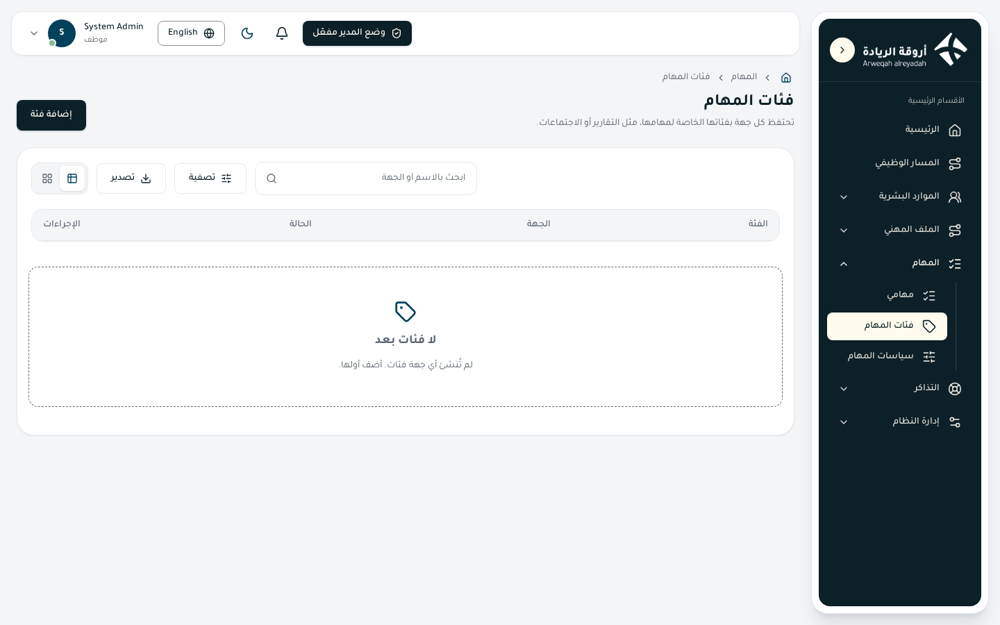
من يراها
- مفتاح العرض:
tasks.tags_view(«عرض صفحة فئات المهام»). النطاقات الممكنة: خاص بي (إدارة الشخص نفسه)، الوحدة، الوحدة وما تحتها، الشركة، الكل. - الأدوار الافتراضية: لا يملكه أي دور افتراضي، ومنها دور «موظف» ودور رئيس الوحدة. يمنحه المدير من صفحة الصلاحيات.
- الصفحة لا تحتاج وضع مدير المنصة. تظهر في القائمة تحت «المهام» ويمكن إخفاؤها من صفحة رؤية الصفحات.
ماذا يمكنك أن تفعل
| الإجراء | ماذا يحدث | مفتاح الصلاحية (الاسم) |
|---|---|---|
| إضافة فئة | تفتح نافذة لإنشاء فئة | tasks.tag_create (إضافة فئة مهام) |
| تعديل (أيقونة الصف أو الضغط على الصف) | تغيير الاسمين أو الجهة أو الحالة | tasks.tag_update (تعديل فئة مهام) |
| حذف (أيقونة الصف) | حذف الفئة بعد التأكيد | tasks.tag_delete (حذف فئة مهام) |
| تصدير | تصدير القائمة (النطاق، الأعمدة، نوع الملف) | tasks.export (تصدير قوائم المهام) |
| البحث | بحث بالاسم أو الجهة | — |
| فلتر الحالة | عرض الفئات الفعّالة أو غير الفعّالة فقط | — |
| جدول / بطاقات | تبديل طريقة عرض القائمة | — |
لا يوجد استيراد لهذه القائمة: الفئات قليلة وتُضاف واحدة واحدة.
خطوات العمل
إضافة فئة
- اضغط إضافة فئة.
- اكتب الاسم بالعربية والاسم بالإنجليزية (يمكن أن يُملأ الاسم الإنجليزي تلقائيًا أثناء كتابة العربي).
- اختر الجهة التي تتبعها الفئة.
- أبقِ «فعّال (يُعرض عند إنشاء المهام)» مفعّلًا ثم احفظ.
إيقاف فئة دون حذفها
- اضغط الصف، وأزل علامة «فعّال»، واحفظ.
- لا تظهر الفئة عند إنشاء المهام، وتبقى على المهام القديمة.
حذف فئة
- اضغط أيقونة الحذف في الصف.
- اقرأ رسالة «حذف الفئة؟» وأكّد.
القواعد
- تتبع الفئة جهة واحدة فقط. ومن ينشئ مهمة يرى فئات جهته. (FR-54)
- الاسمان بالعربية والإنجليزية إلزاميان.
- لا تُعرض عند إنشاء المهام إلا الفئات الفعّالة.
- إن كانت مهام تستعمل الفئة فأوقفها بدل حذفها؛ وتذكر رسالة التأكيد ذلك.
- نطاق صلاحيتك يحدد فئات أي الجهات تستطيع إضافتها أو تعديلها أو حذفها: «خاص بي» يعني جهتك أنت، والنطاقات الأوسع تصل إلى الوحدات تحتك أو الشركة أو الكل.
- للفئات أثر على من يرى محادثة المهمة: الزميل الذي عنده مهمة مفتوحة في الفئة نفسها يقرأ محادثة تلك المهمة ويكتب ويرد (انظر «تفاصيل المهمة ومحادثتها»).
- تُسجَّل التغييرات في سجل التدقيق.
نصائح ومشاكل شائعة
- قائمة الفئات فارغة عند إنشاء مهمة: ليس لجهتك فئة فعّالة بعد. اطلب ممن يملك
tasks.tag_createأن يضيف واحدة. - لا تستطيع حذف فئة: مهام تستعملها. أوقفها بدل الحذف.
24. سياسات المهام
تحوي هذه الصفحة كل الأرقام التي تضبط المهام في شركة واحدة (متى تُعدّ المهمة عاجلة، ومتى يُرسل التذكير، وكم ينتظر الاعتراض، وغير ذلك)، وتحتها جدول «من يفعل ماذا في تعليقات المهام». لكل رقم حدود، فلا يستطيع أي رقم تعطيل المهام.
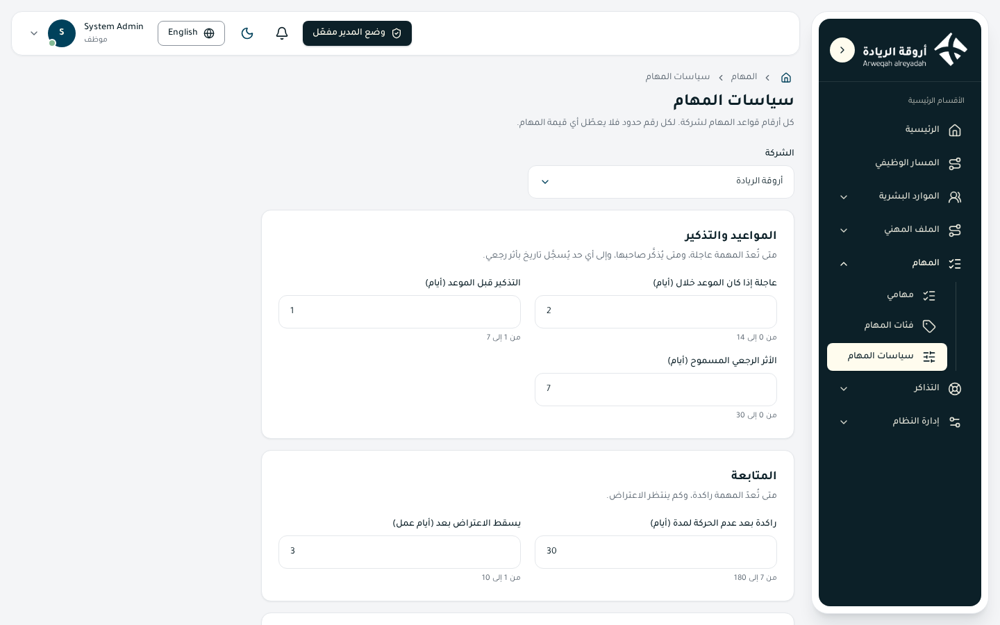
من يراها
- مفتاح العرض:
tasks.policies_view(«عرض صفحة سياسات المهام»)، بنطاق «الكل». - تحتاج وضع مدير المنصة: نعم. لا تظهر في القائمة إلا والوضع مفعّل.
- الأدوار الافتراضية: لا يملكها أي دور عادي (لا «موظف» ولا رئيس الوحدة)؛ هي لمدير المنصة. وجدول صلاحيات التعليقات يحتاج
tasks.comment_rules_view(«عرض مصفوفة صلاحيات التعليقات»).
ماذا يمكنك أن تفعل
| الإجراء | ماذا يحدث | مفتاح الصلاحية (الاسم) |
|---|---|---|
| اختيار الشركة | عرض سياسات تلك الشركة | tasks.policies_view |
| تغيير الأرقام ثم حفظ | حفظ كل أرقام الشركة دفعة واحدة | tasks.policies_edit (تعديل سياسات المهام) |
| عرض جدول المحادثة | عرض من يفعل ماذا في تعليقات المهام | tasks.comment_rules_view (عرض مصفوفة صلاحيات التعليقات) |
| تغيير جدول المحادثة ثم حفظ | حفظ الجدول كله دفعة واحدة | tasks.comment_rules_edit (تعديل مصفوفة صلاحيات التعليقات) |
من لا يملك مفتاح التعديل يقرأ الحقول ولا يظهر له زر الحفظ.
خطوات العمل
تغيير رقم في السياسات
- فعّل وضع مدير المنصة.
- افتح سياسات المهام واختر الشركة.
- غيّر الرقم. يظهر المدى المسموح تحت كل حقل؛ والرقم خارج المدى يعرض خطأ ويبقى زر الحفظ معطلًا.
- اضغط حفظ. تظهر رسالة «حُفظت السياسات».
تغيير من يفعل ماذا في التعليقات
- انزل إلى «من يفعل ماذا في تعليقات المهام».
- كل صف علاقة بالمهمة، وكل عمود إجراء: القراءة، كتابة تعليق، الرد، رفع ملف، المنشن @، تعديل تعليقه، حذف تعليقه.
- فعّل الخانات أو ألغها ثم اضغط حفظ. يسري التغيير فورًا، حتى على التعليقات القديمة.
القواعد
- الأرقام وقيمها الافتراضية وحدودها (FR-54، FR-66):
| الرقم | الافتراضي | المسموح |
|---|---|---|
| عاجلة إذا كان الموعد خلال (أيام) | 2 | من 0 إلى 14 |
| التذكير قبل الموعد (أيام) | 1 | من 1 إلى 7 |
| الأثر الرجعي المسموح (أيام) | 7 | من 0 إلى 30 |
| راكدة بعد عدم الحركة لمدة (أيام) | 30 | من 7 إلى 180 |
| يسقط الاعتراض بعد (أيام عمل) | 3 | من 1 إلى 10 |
| يوم ملخص المديرين (0 = الأحد … 6 = السبت) | 0 | من 0 إلى 6 |
| أرشفة المستقلة بعد إغلاقها (أيام) | 30 | من 7 إلى 365 |
| أقصى عدد ملفات في التعليق | 5 | من 1 إلى 10 |
| مهلة تعديل التعليق أو حذفه (دقائق) | 15 | من 0 إلى 1440 |
| إغلاق المحادثة بعد إنجاز المهمة (أيام، 0 = لا تُغلق) | 0 | من 0 إلى 365 |
- السياسات لكل شركة؛ لكل شركة أرقامها.
- أيام العمل تستثني الجمعة والسبت.
- يُسجَّل كل تغيير في السياسات في سجل التدقيق.
- جدول المحادثة: صف لكل علاقة (المسند إليه، من أسند المهمة، المسؤول المعتمِد، المراجع، المتابع، المدير ضمن نطاق فريقه، زميل بمهمة مفتوحة في نفس الفئة، المذكور بـ @). يمرّ الإجراء حين يملك دور الشخص مفتاحه وتكون إحدى خانات علاقاته مفعّلة.
- افتراضيًا تملك العلاقات الست الأولى كل الإجراءات. أما الزميل والمذكور (المعلّمان بـ *) فيقرآن ويكتبان ويردّان فقط، ولا يريان إلا رقم المهمة وعنوانها ومحادثتها.
- تبدأ الشركة بهذه القيم حتى يغيّرها أحد.
نصائح ومشاكل شائعة
- الصفحة غير ظاهرة في القائمة: فعّل وضع مدير المنصة، أو لا تملك
tasks.policies_view. - زر الحفظ معطّل: أحد الأرقام فارغ أو خارج مداه.
- شخص يقول إنه لا يستطيع التعليق: راجع مفاتيح دوره وصف علاقته في جدول المحادثة معًا.
التذاكر
25. التذاكر
التذكرة هي الطريق الرسمي لطلب شيء من جهة أخرى: تختار الجهة ونوع الطلب، وتكتب ما تحتاجه، وتتابع الردود حتى إغلاق التذكرة. لكل تذكرة رقم مثل TKT-000123. تُعرض القائمة كجدول أو كبطاقات أو كلوحة بعمود لكل حالة.

من يراها
- مفتاح العرض:
tickets.view(«عرض صفحة التذاكر وتفاصيلها»). النطاق الافتراضي: «خاص بي»، أي التذاكر التي أرسلتها أو تتولاها. - الأدوار الافتراضية: دور «موظف» يملك العرض (خاص بي) وإرسال تذكرة والرد (خاص بي) وطلب الإغلاق وتأكيد الإغلاق أو رفضه والإغلاق دون تنفيذ وإعادة الفتح ومفتاحي الرد والمنشن. ودور رئيس كل وحدة يملك العرض والرد بنطاق «الوحدة وما تحتها».
- لا تحتاج الصفحة وضع مدير المنصة.
- التذكرة خارج علاقتك أو نطاقك تظهر كأنها غير موجودة. ومرفقاتها لا يحمّلها إلا من يحق له رؤية التذكرة.
ماذا يمكنك أن تفعل
| الإجراء | ماذا يحدث | مفتاح الصلاحية (الاسم) |
|---|---|---|
| تذكرة جديدة | تفتح نافذة من خطوتين لإرسال تذكرة | tickets.create (إرسال تذكرة جديدة) |
| فتح تذكرة | اضغط الصف أو أيقونة العين لفتح صفحتها | tickets.view |
| الرد | كتابة جواب مع ملفات ومنشن | tickets.reply (الرد على التذاكر ومعالجتها) |
| الرد على ردّ | الجواب على رد واحد، بمستوى واحد فقط | tickets.comment_reply (الرد على رد داخل التذكرة) |
| ذكر بـ @ | ذكر زميل في الرد | tickets.comment_mention (ذكر موظف بـ @ في ردّ على تذكرة) |
| طلب الإغلاق | تطلب الجهة من المرسل تأكيد التنفيذ | tickets.request_close (طلب إغلاق التذكرة) |
| تأكيد التنفيذ | يؤكد المرسل فتُغلق التذكرة | tickets.confirm_close (اعتماد إغلاق التذكرة) |
| لم يُنفَّذ بعد | يرفض المرسل الإغلاق فتعود التذكرة للجهة | tickets.decline_close (رفض إغلاق التذكرة) |
| إغلاق دون تنفيذ | تغلقها الجهة مع شرح السبب | tickets.close_without_execution (إغلاق التذكرة بلا تنفيذ) |
| إعادة فتح | يعيد المرسل فتح تذكرة مغلقة خلال المدة المسموحة | tickets.reopen (إعادة فتح تذكرة مغلقة) |
| ردّ سريع | في اللوحة، رد قصير من البطاقة | tickets.reply |
لا يوجد في قائمة التذاكر تصدير ولا استيراد. تُرسل التذاكر واحدة واحدة من النافذة لا من ملف.
خطوات العمل
إرسال تذكرة
- اضغط تذكرة جديدة.
- الخطوة الأولى: اكتب في «ماذا تحتاج؟» أو ضيّق بالجهة ونوع الطلب (عادي أو شخصي). اختر العرض «حسب الجهة» أو «قائمة مضغوطة». اضغط النوع الذي تريده.
- الخطوة الثانية: اكتب العنوان (إلزامي) والتفاصيل، واختر موعد الحاجة، وفعّل «عاجلة» إن لزم، وأرفق حتى 5 ملفات.
- اضغط إرسال (أو
Ctrl+Enter). تظهر رسالة «أُرسلت التذكرة» وتأخذ التذكرة رقمها.
الإجابة على تذكرة تتولاها
- افتح تبويب وارد الوحدة واضغط التذكرة.
- اكتب في «ردّك»، وأرفق ملفات إن لزم، واضغط إرسال الردّ.
- عند انتهاء العمل اضغط طلب الإغلاق وأضف رسالة اختيارية.
إغلاق تذكرة أرسلتها
- افتح التذكرة. إن طلبت الجهة الإغلاق يظهر لك تأكيد التنفيذ ولم يُنفَّذ بعد.
- اضغط تأكيد التنفيذ لإغلاقها، أو لم يُنفَّذ بعد لتعود مفتوحة مع رسالتك.
- إن كانت التذكرة مغلقة وما زلت تحتاجها اضغط إعادة فتح (تذكر الصفحة كم يومًا بقي لذلك).
البحث عن التذاكر
- استعمل خانة البحث (العنوان أو التفاصيل أو الرقم) والفلاتر: الجهة، النوع، المسؤول، الحالة.
- جمّع حسب المسؤول أو الحالة أو الجهة أو النوع، وبدّل بين الجدول واللوحة والبطاقات.
القواعد
- التبويبات: تذاكري (ما أرسلته)، وارد الوحدة (المنسوبة إليّ، أو إلى جهتي إن كنت مديرها، أو بنطاق الرد عندي)، تذاكر فريقي (تذاكر من ضمن نطاق عرضي). لا يظهر التبويب إلا إذا كان لك فيه شيء. (FR-38)
- الحالات: مفتوحة، بانتظار تأكيد الإغلاق، مغلقة. وتبيّن التذكرة المغلقة كيف انتهت: بتأكيد المرسل، أو تلقائيًا، أو دون تنفيذ. العلامات: عاجلة، متأخرة، راكدة، جديدة (لم يردّ أحد بعد)، شخصية.
- لا تُعدَّل التذكرة بعد إرسالها؛ تُكمل المحادثة بالردود حتى الإغلاق.
- يُرفض الإرسال إذا كان استقبال الجهة متوقفًا مؤقتًا أو موقوفًا، أو لم تبدأ العمل بعد، أو لا مدير لها. والجهة الموقوفة لا تظهر أصلًا. (FR-37)
- لا يقبل موعد الحاجة أن يكون قبل أقل مهلة تحددها الجهة؛ ويخبرك النموذج بأقرب تاريخ.
- دورة الحياة: (FR-39)
| الإجراء | من | إلى | من يقوم به |
|---|---|---|---|
| طلب الإغلاق | مفتوحة | بانتظار تأكيد الإغلاق | المسؤول أو مدير الجهة |
| تأكيد التنفيذ | بانتظار التأكيد | مغلقة (بتأكيد المرسل) | المرسل |
| لم يُنفَّذ بعد | بانتظار التأكيد | مفتوحة | المرسل |
| ردّ المرسل | بانتظار التأكيد | مفتوحة | المرسل |
| إغلاق دون تنفيذ | مفتوحة أو بانتظار التأكيد | مغلقة (دون تنفيذ) | جانب الجهة |
| إغلاق تلقائي | بانتظار التأكيد | مغلقة (تلقائيًا) | النظام، بعد أيام الجهة دون رد |
| إعادة الفتح | مغلقة | مفتوحة | المرسل، خلال مدة إعادة الفتح |
- المدد الافتراضية للجهة: الإنجاز المعتاد 3 أيام عمل، الإغلاق التلقائي بعد طلب الإغلاق 4 أيام، مدة إعادة الفتح 7 أيام، والركود بعد 14 يومًا. تستطيع كل جهة تغييرها (انظر «إعداد التذاكر»). وأيام العمل تستثني الجمعة والسبت. (FR-41)
- التذاكر الشخصية (الشكاوى والأمور الشخصية) تذهب مباشرة إلى المسؤول عن ذلك النوع. وتُخفى عن مدير الوحدة وعن مديري المنصة؛ وتدخل في الأرقام ولا تظهر في أي قائمة. (FR-38)
- الردود: حتى 5 ملفات في الرد، والنص حتى 5000 حرف، ومستوى واحد من الإجابة على الرد. وفي التذكرة الشخصية لا يُذكر إلا المرسل والمسؤول. المعاينة للصور وPDF، وتُقبل ملفات Word وExcel.
- الإشعارات (داخل المنصة، وبالبريد للأهم) تحمل رقم التذكرة والجهة فقط، ولا تحمل نصها أبدًا. ويصل إشعار لمن ذكرته ولمن أجبت على رده. (FR-39)
- إذا غيّر شخصان التذكرة في اللحظة نفسها يُرفض الإجراء الثاني ويعاد.
نصائح ومشاكل شائعة
- لا تجد الجهة التي تريدها: قد تكون متوقفة مؤقتًا أو موقوفة أو لم تبدأ أو بلا مدير.
- لا يظهر تبويب «وارد الوحدة»: لا تذاكر منسوبة إليك أو إلى جهتك.
- اختفى زر «إعادة فتح»: انتهت مدة إعادة الفتح؛ أرسل تذكرة جديدة.
26. إعداد التذاكر
هنا يقرر قائد الوحدة هل تستقبل وحدته التذاكر، وماذا يقرأ المرسل عنها، وما أنواع التذاكر التي تقبلها، ومن يتولى كل نوع، وكم تستغرق كل خطوة. أي وحدة في الهيكل التنظيمي (قطاع، إدارة، قسم، وحدة، مكتب) يمكن أن تكون جهة تستقبل التذاكر.
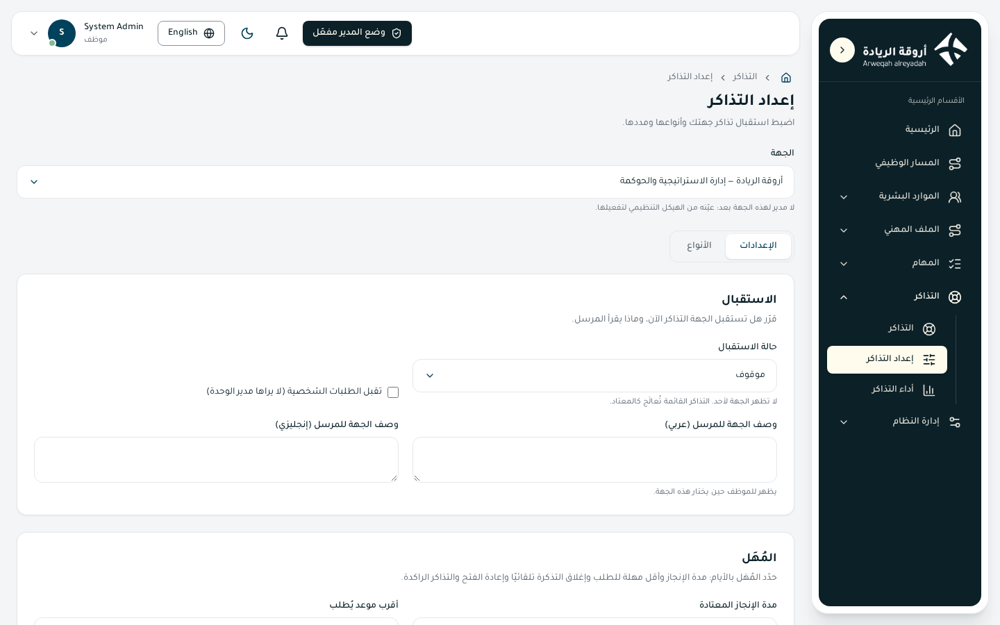
من يراها
- مفتاح العرض:
tickets.setup_view(«عرض صفحة إعداد التذاكر»). النطاقات: خاص بي (الوحدات التي تقودها وكل ما تحتها)، الوحدة، الوحدة وما تحتها، الشركة، الكل. - تحتاج وضع مدير المنصة: نعم. وبدونه تعرض الصفحة رسالة تقول إن الوضع يجب تفعيله.
- الأدوار الافتراضية: دور الرئيس الذي يُنشأ تلقائيًا لكل وحدة يملك مفاتيح الإعداد بنطاق «الوحدة وما تحتها». أما الموظف العادي فلا.
- لا ترى إلا الوحدات ضمن نطاقك؛ ومن نطاقه «الكل» يرى كل الوحدات.
ماذا يمكنك أن تفعل
| الإجراء | ماذا يحدث | مفتاح الصلاحية (الاسم) |
|---|---|---|
| اختيار الوحدة | عرض إعدادات تلك الوحدة (منتقٍ شجري مع بحث) | tickets.setup_view |
| تغيير الاستقبال والوصف والمدد ثم حفظ | حفظ إعدادات الوحدة | tickets.setup_edit (تعديل استقبال الجهة ومُهَلها) |
| إضافة نوع | نافذة لنوع تذكرة جديد | tickets.type_create (إضافة نوع تذكرة) |
| تعديل نوع (أيقونة القلم) | تغيير نوع | tickets.type_update (تعديل نوع تذكرة) |
| حذف نوع (أيقونة السلة) | حذف النوع أو تعطيله | tickets.type_delete (حذف نوع تذكرة) |
في الصفحة تبويبان: الإعدادات والأنواع.
خطوات العمل
تفعيل جهة
- فعّل وضع مدير المنصة وافتح إعداد التذاكر.
- اختر الوحدة. تحت المنتقي ترى «المدير: …»؛ فإن لم يوجد مدير فعيّنه أولًا من الهيكل التنظيمي.
- في الإعدادات اجعل حالة الاستقبال «مفعّل» واكتب وصف الجهة الذي يقرؤه المرسل (بالعربي والإنجليزي).
- اضبط المدد واضغط حفظ.
إضافة نوع تذكرة
- افتح تبويب الأنواع واضغط إضافة نوع.
- اكتب الاسم والوصف (بالعربي والإنجليزي).
- اختر المسؤول: الموظف الذي تُنسب إليه تذاكر هذا النوع. وإن تركته فارغًا يتولاها مدير الجهة.
- اختياريًا حدّد مدة خاصة بأيام العمل؛ واتركها فارغة لاستعمال مدة الجهة.
- فعّل «نوع شخصي» إن كان النوع للشكاوى أو الأمور الخاصة؛ والنوع الشخصي يحتاج مسؤولًا. أبقِ «نوع نشط» مفعّلًا واحفظ.
إيقاف الاستقبال
- في الإعدادات اختر «متوقف مؤقتًا» (تظهر الجهة معطّلة برسالة وتستأنف يدويًا) أو «موقوف» (لا تظهر الجهة لأحد).
- احفظ. تُعالَج التذاكر القائمة كالمعتاد.
القواعد
- حالة الاستقبال: مفعّل (تظهر الجهة وتستقبل التذاكر)، متوقف مؤقتًا (تظهر معطّلة برسالة)، موقوف (لا تظهر لأحد). ولا تُفعَّل جهة بلا مدير. (FR-36)
- لا يُقبل شيء قبل تاريخ بدء الجهة.
- المدد (كلها أعداد صحيحة من الأيام، وتظهر حدود كل مدة على الشاشة) (FR-36، FR-41):
- مدة الإنجاز المعتادة بأيام العمل (الجمعة والسبت إجازة)؛ الافتراضي 3
- أقرب موعد يُطلب؛ الافتراضي 0
- الإغلاق التلقائي بعد طلب الإغلاق؛ الافتراضي 4
- مدة السماح بإعادة فتح تذكرة مغلقة؛ الافتراضي 7
- تُعدّ التذكرة راكدة بعد؛ الافتراضي 14
- للنوع اسم ووصف ومسؤول ومدة خاصة اختيارية وعلامة «شخصي». وإن لم يُحدَّد مسؤول يتولى مدير الجهة التذكرة.
- الأنواع الشخصية لا يراها مدير الوحدة ولا مديرو المنصة؛ وتحتاج مسؤولًا نشطًا. (FR-38)
- حذف نوع: إن كانت عليه تذاكر يُعطَّل فقط وتبقى تذاكره، وإلا يُحذف. وتخبرك الرسالة بما حدث.
- الوحدة التي تستقبل تذاكر (مفعّلة أو متوقفة مؤقتًا) أو عليها تذاكر مفتوحة لا يمكن نقلها ولا حذفها في الهيكل التنظيمي.
- يُختار مدير الوحدة من الهيكل التنظيمي لا من هذه الصفحة.
- تُسجَّل التغييرات في سجل التدقيق.
نصائح ومشاكل شائعة
- «هذه الصفحة تعمل في وضع مدير المنصة»: فعّل الوضع من أعلى الصفحة.
- يُرفض «مفعّل»: لا مدير للوحدة بعد.
- مرسل يقول إن الجهة لا تظهر: تأكد أن الاستقبال مفعّل، وأن تاريخ البدء قد جاء، وأن للجهة نوعًا نشطًا واحدًا على الأقل.
27. أداء التذاكر
تعرض صفحة الأرقام أداء الجهات المستقبلة للتذاكر خلال آخر 30 يومًا: كم تذكرة مفتوحة، وكم وردت، وبأي سرعة رُدّ عليها وأُنجزت، وكيف انتهت، وما الذي يحتاج تصرفًا اليوم. وهي أعداد فقط.
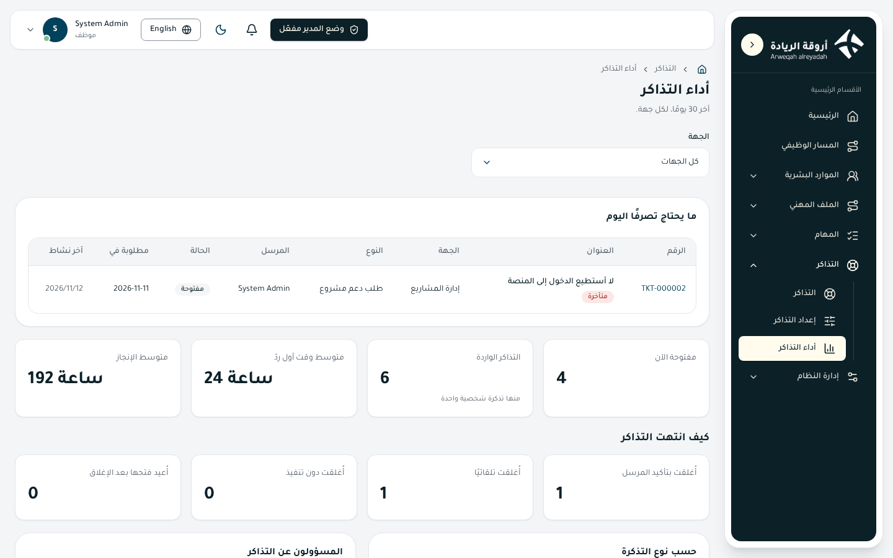
من يراها
- مفتاح العرض:
tickets.figures_view(«عرض صفحة أداء التذاكر»). النطاقات: خاص بي (الوحدات التي تقودها وكل ما تحتها)، الوحدة، الوحدة وما تحتها، الشركة، الكل. - تحتاج وضع مدير المنصة: نعم.
- الأدوار الافتراضية: دور رئيس كل وحدة يملكها بنطاق «الوحدة وما تحتها». ومدير المنصة يرى كل الجهات.
ماذا يمكنك أن تفعل
| الإجراء | ماذا يحدث | مفتاح الصلاحية (الاسم) |
|---|---|---|
| اختيار جهة | عرض تلك الجهة وحدها؛ و«كل الجهات» تجمعها | tickets.figures_view |
| قراءة المؤشرات والجداول | أعداد ومتوسطات آخر 30 يومًا | tickets.figures_view |
الصفحة للقراءة فقط: لا أزرار تغيّر بيانات، ولا تصدير ولا استيراد.
خطوات العمل
قراءة أرقام جهة واحدة
- فعّل وضع مدير المنصة وافتح أداء التذاكر.
- اختر الجهة في الأعلى. تضم القائمة كل جهات الهيكل التنظيمي التي يحق لك رؤيتها، حتى التي لم تُعدّ للتذاكر (أرقامها أصفار).
- اقرأ الأقسام من الأعلى إلى الأسفل.
رؤية كل شيء معًا
- اختر «كل الجهات».
- تُجمع الأرقام ويضاف إلى الجداول عمود «الجهة».
القواعد
- المدة آخر 30 يومًا. (FR-40)
- المؤشرات: مفتوحة الآن؛ التذاكر الواردة (مع «منها N شخصية»)؛ متوسط وقت أول ردّ؛ متوسط الإنجاز، بالساعات.
- كيف انتهت التذاكر: أُغلقت بتأكيد المرسل؛ أُغلقت تلقائيًا؛ أُغلقت دون تنفيذ؛ أُعيد فتحها بعد الإغلاق.
- حسب نوع التذكرة: عدد التذاكر لكل نوع.
- المسؤولون عن التذاكر: لكل شخص عدد التذاكر المفتوحة والمغلقة ومتوسط وقت أول ردّ.
- ما يحتاج تصرفًا اليوم: التذاكر المتأخرة أو الراكدة؛ وإن لم توجد تكتب الصفحة «لا شيء متأخر أو راكد.»
- التذاكر الشخصية تدخل في المجاميع ولا تظهر في أي قائمة، فيبقى محتواها سريًا. (FR-40)
- مع جهة واحدة تكون الأرقام لتلك الجهة فقط؛ ومع «كل الجهات» تكون مجموع الجهات التي يحق لك رؤيتها.
- والجهة التي تقودها تشمل الوحدات التي تحتها.
نصائح ومشاكل شائعة
- «لا جهات مُعدّة بعد»: أعدّ جهة من صفحة «إعداد التذاكر» لتظهر أرقامها هنا.
- الأرقام تبدو قليلة: تُحسب آخر 30 يومًا فقط.
- شخص لا يظهر بين المسؤولين: لم تُنسب إليه تذكرة في هذه المدة.
إدارة النظام
28. الأدوار والصلاحيات
ما هذه الصفحة
الدور مجموعة صلاحيات يحصل عليها كل من يحمله. في هذه الصفحة ترى كل أدوار المنصة وطريقة منحها (يدويًا أو تلقائيًا) وعدد من يحملها، وتنشئ دورًا جديدًا أو تعدّل صلاحيات دور قائم. ولكل صلاحية داخل الدور نطاق يحدد البيانات التي تنطبق عليها. وللصفحة تبويبان: «الأدوار» و«الاستثناءات».
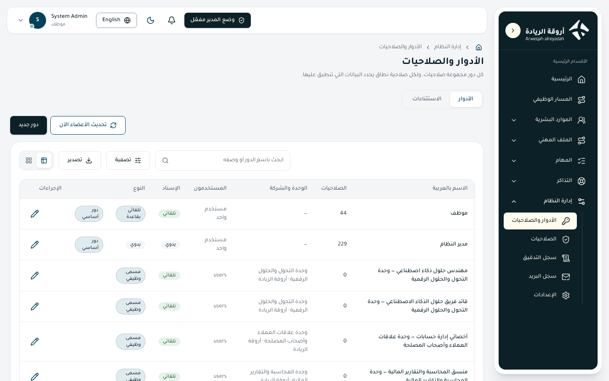
من يراها
| البند | التفصيل |
|---|---|
| مفتاح العرض | roles.view (عرض صفحة الأدوار والصلاحيات) لتبويب الأدوار، وexceptions.view (عرض صفحة الاستثناءات) لتبويب الاستثناءات |
| النطاق الافتراضي | الكل |
| وضع مدير المنصة | مطلوب: الصفحة لا تظهر في القائمة إلا بعد تفعيله، وإن فتحتها دونه ظهرت رسالة تطلب تفعيله |
| الأدوار التي تحملها افتراضيًا | دور «مدير النظام» (System Admin) الأساسي يحمل كل مفاتيح المنصة بنطاق «الكل». أما دور «موظف» وأدوار القادة والمسميات فلا تحمل مفاتيح هذه الصفحة. باقي الأدوار الإدارية (مثل «مدير المنصة» و«مهيّئ المنصة» و«مدقق المنصة») تبدأ بلا صلاحيات، ويمنحها المسؤول ما يريد من صفحة الصلاحيات |
ماذا تستطيع أن تفعل (تبويب الأدوار)
| الإجراء | ما يحدث | مفتاح الصلاحية |
|---|---|---|
| «دور جديد» | يفتح نافذة لإنشاء دور بالاسمين العربي والإنجليزي ووصف وصلاحياته | roles.create (إضافة دور) |
| فتح دور (النقر على الصف أو أيقونة التعديل) | يفتح نافذة التعديل: الأسماء والوصف والإسناد ومصفوفة الصلاحيات | roles.update (تعديل دور وصلاحياته) |
| أيقونة الحذف | يحذف الدور بعد التأكيد ويفقد أصحابه صلاحياته فورًا | roles.delete (حذف دور) |
| «تحديث الأعضاء الآن» | يعيد حساب أعضاء الأدوار التلقائية في الحال، ثم يعرض عدد التغييرات | roles.sync_auto (تحديث أعضاء الأدوار التلقائية الآن) |
| زر التصدير | يصدّر قائمة الأدوار إلى ملف بعد اختيار النطاق والأعمدة ونوع الملف | roles.export (تصدير الأدوار) |
| البحث والفلاتر وتبديل جدول/بطاقات | يضيّق القائمة بالاسم أو الوصف أو الوحدة والشركة؛ والفلاتر: النوع (أساسي/مخصص)، الإسناد، نوع الدور، الشركة، وجود مستخدمين | لا يحتاج مفتاحًا إضافيًا |
أعمدة القائمة: الاسم، عدد الصلاحيات، الوحدة والشركة (لأدوار المسميات)، عدد المستخدمين، الإسناد (تلقائي/يدوي)، النوع، وشارة «دور أساسي».
أنواع الأدوار
| النوع | من يحمله | كيف يُدار |
|---|---|---|
| يدوي | من يمنحه له مسؤول الموارد البشرية أو المدير | من نموذج الموظف أو من صفحة الصلاحيات |
| تلقائي بقاعدة | «موظف»: كل من يُضاف للمنصة. «مدير مباشر»: كل من له مرؤوسون. «أساس المتعاون»: من علاقته من نوع محدود الدخول | تحدّث القاعدة الأعضاء بعد كل تغيير في الموظفين وكل ليلة |
| مسمى وظيفي | كل من يشغل المسمى | ينشأ الدور مع المسمى ويحمل اسمه، ويُحذف معه |
| قائد وحدة | مدير/قائد الوحدة | ينشأ مع الوحدة باسم «قائد {الوحدة}» ويبدأ بصلاحيات القادة الافتراضية |
كيف أفعل
إنشاء دور جديد
- افتح «الأدوار والصلاحيات» (بعد تفعيل وضع مدير المنصة) واضغط «دور جديد».
- اكتب الاسم بالعربية؛ يظهر الاسم الإنجليزي تلقائيًا ويمكنك تعديله. الاسمان إلزاميان (حرفان على الأقل).
- أضف وصفًا قصيرًا واختر الإسناد (يدوي أو تلقائي).
- علّم الصلاحيات المطلوبة وحدد نطاق كل واحدة، ثم اضغط «حفظ».
تعديل صلاحيات دور
- اضغط على صف الدور.
- استخدم خانة «ابحث في الصلاحيات» للوصول إلى الصلاحية بالاسم أو بمفتاحها.
- علّم الصلاحية أو أزل العلامة، وغيّر نطاقها من القائمة بجانبها. «تحديد كل الصلاحيات» و«إلغاء كل التحديد» يختصران العمل.
- بجانب «تعديل بيانات الموظفين» زر «الحقول التي يعدّلها» لاختيار حقول سجل الموظف التي يستطيع حاملها تغييرها.
- اضغط «حفظ».
تحديث أعضاء الأدوار التلقائية فورًا
- اضغط «تحديث الأعضاء الآن».
- تظهر رسالة بعدد التغييرات، أو «الأعضاء محدّثون، لا تغيير».
قواعد العمل
- النطاقات: كل صلاحية تُمنح بنطاق: «سجله فقط»، «وحدته»، «وحدته ومستوى واحد تحتها» حتى خمسة مستويات، «وحدته وما تحتها»، «شركته كاملة»، «كل الشركات». ولا تعرض القائمة إلا النطاقات التي تسمح بها الصلاحية نفسها. وإن تكرر منح الصلاحية لشخص من أكثر من مصدر فالأوسع يغلب (FR-80).
- خارج النطاق: السجل الذي لا يصله نطاق الشخص يظهر له كأنه غير موجود (رسالة «غير موجود») وليس كممنوع.
- أدوار المسميات والوحدات يتبع اسمها وأعضاؤها المسمى أو الوحدة، فلا يتغيّر اسمها ولا تُحذف ولا تُسند باليد؛ المسموح تعديل صلاحياتها ووصفها فقط. يبدأ دور المسمى بنسخة من صلاحيات دور اختاره منشئ المسمى (افتراضيًا «موظف»)، ثم يعدّله المسؤول (FR-68، FR-69).
- دور له قاعدة لا يتحول إلى «يدوي»، ولا يُسند يدويًا.
- الأدوار الأساسية (مثل «موظف» و«مدير النظام») لا تُحذف.
- دور «موظف» يُمنح تلقائيًا لكل موظف جديد، وهو دور مخزَّن كغيره: يمكن إزالته من نموذج الموظف ولا يعود من تلقاء نفسه (FR-43).
- صلاحيات القادة: كل وحدة جديدة يُنشأ لها دور قائد يبدأ بحساب القائد الشخصي ورؤية موظفي الوحدة وما تحتها ومهامها وتذاكرها وتقييم الفريق ومساره المهني. ما تغيّر هذه الصلاحيات في دور موجود إلا بتعديل المسؤول.
- الحذف: عند حذف دور يفقد كل حامليه صلاحياته فورًا.
- التدقيق: كل إنشاء أو تعديل أو حذف أو تحديث للأعضاء يُسجَّل في سجل التدقيق باسم المنفّذ.
- منح ما لا تملك: لا يستطيع أحد منح غيره صلاحية بنطاق أوسع مما يملكه هو.
مجموعات الأدوار ومجموعات المستخدمين
تُدار المجموعتان من صفحة «الصلاحيات» (انظر قسمها)، ولكل إجراء عليهما مفتاحه.
| الإجراء | ما يحدث | مفتاح الصلاحية |
|---|---|---|
| عرض مجموعات الأدوار | تظهر في صفحة الصلاحيات | role_groups.view (عرض مجموعات الأدوار في صفحة الصلاحيات) |
| إضافة مجموعة أدوار | تجمع أدوارًا تذهب معًا باسم واحد | role_groups.create (إضافة مجموعة أدوار) |
| تعديل مجموعة أدوار | تغيير اسمها وأدوارها | role_groups.update (تعديل مجموعة أدوار) |
| حذف مجموعة أدوار | يفقد من أُسندت إليهم ما وصلهم بها | role_groups.delete (حذف مجموعة أدوار) |
| عرض مجموعات المستخدمين | تظهر في صفحة الصلاحيات | user_groups.view (عرض مجموعات المستخدمين في صفحة الصلاحيات) |
| إضافة مجموعة مستخدمين | أشخاص بعينهم يأخذون الصلاحيات نفسها | user_groups.create (إضافة مجموعة مستخدمين) |
| تعديل مجموعة مستخدمين | تغيير الاسم والأعضاء | user_groups.update (تعديل مجموعة مستخدمين وأعضائها) |
| حذف مجموعة مستخدمين | يفقد الأعضاء ما وصلهم بها | user_groups.delete (حذف مجموعة مستخدمين) |
- مجموعة الأدوار تُسند لشخص (من نموذج الموظف، بصلاحية
employees.assign_groups، ولا يتجاوز المانح ما يملك) فتصله كل أدوارها. وما يوضع على المجموعة من صلاحيات يسري على من أُسندت له وعلى كل من يحمل أحد أدوارها (FR-46). - مجموعة المستخدمين أشخاص تختارهم بأسمائهم أو بريدهم، وكلهم يأخذون صلاحيات المجموعة.
تبويب الاستثناءات
يعرض كل ما مُنح لشخص خارج ما يأتيه من مسماه الوظيفي: أدوار يدوية وصلاحيات شخصية ومجموعات أدوار، مع آخر يوم لكل منها، حتى لا تبقى صلاحية منسية. أعمدته: الشخص، النوع (دور/صلاحية شخصية/مجموعة أدوار)، الممنوح، النطاق، من منحه، تاريخ المنح، ينتهي في.
| الإجراء | ما يحدث | مفتاح الصلاحية |
|---|---|---|
| «تغيير تاريخ الانتهاء» | يحدد آخر يوم يسري فيه الاستثناء، أو يلغي التاريخ | exceptions.update (تغيير تاريخ انتهاء استثناء) |
| «سحب الاستثناء» | يسحبه فورًا بعد التأكيد، ويفقد الشخص ما يعطيه | exceptions.revoke (سحب استثناء) |
| التصدير | يصدّر القائمة | exceptions.export (تصدير الاستثناءات) |
- الفلاتر: النوع، من منحه، «ينتهي خلال 7/14/30/60 يومًا»، «بلا تاريخ انتهاء». والبحث بالشخص أو الممنوح أو المانح. وتُبدَّل العروض بين جدول وبطاقات.
- الاستثناء يسري حتى نهاية اليوم الأخير (بتوقيت الرياض)، وبعده تزول الصلاحية في الحال، وتسحب المنصة السجل ليلًا وتكتب ذلك في سجل التدقيق. من ينتهي استثناؤه خلال 7 أيام تظهر شارته باللون التحذيري.
- لا يُقبل تاريخ في الماضي.
- أدوار «موظف» والمسمى والقائد لا تُعد استثناءات (FR-70).
- تُحدَّد نهاية الاستثناء عند منح الدور من نموذج الموظف (تاريخ بجانب كل دور) أو من هذه القائمة.
نصائح ومشكلات شائعة
- لا أرى الصفحة في القائمة: فعّل «وضع مدير المنصة» من أعلى الصفحة (يلزم رمز جديد من تطبيق المصادقة)، وتأكد أنك تملك
roles.viewوأن الصفحة غير مخفية عن أدوارك. - لا أستطيع إسناد دور لموظف: لا يُسند إلا ما تملك مفاتيحه، ودور المسمى والقائد يُحسبان تلقائيًا.
29. الصلاحيات
ما هذه الصفحة
لكل صفحة في المنصة مفتاح «عرض»، ولكل زر أو إجراء (إضافة، تعديل، حذف، اعتماد، تصدير، استيراد…) مفتاحه الخاص. هذه الصفحة هي المكان الواحد الذي يحدد فيه المسؤول ما يستطيع فعله دور أو مجموعة أدوار أو شخص بعينه أو مجموعة مستخدمين، وبأي نطاق. تختار ما تضع عليه الصلاحيات، ثم تعلّم ما يستطيع فعله ونطاقه.
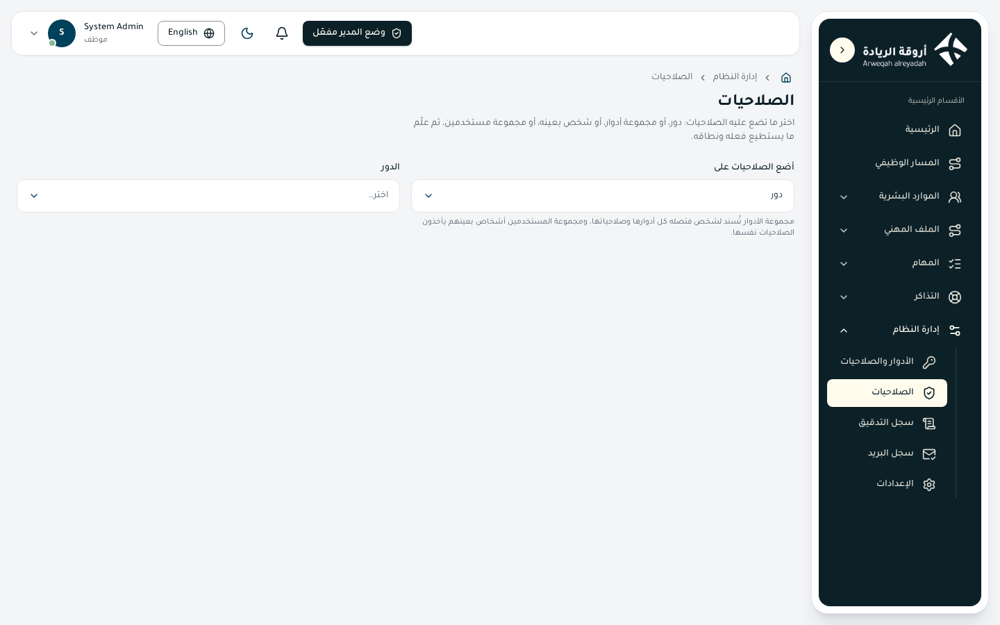
من يراها
| البند | التفصيل |
|---|---|
| مفتاح العرض | permissions.view (عرض صفحة الصلاحيات) |
| النطاق الافتراضي | الكل |
| وضع مدير المنصة | مطلوب |
| الأدوار التي تحملها افتراضيًا | دور «مدير النظام» الأساسي فقط (يحمل كل المفاتيح). بقية الأدوار تبدأ بلا مفاتيح هذه الصفحة ويمنحها المسؤول |
ماذا تستطيع أن تفعل
| الإجراء | ما يحدث | مفتاح الصلاحية |
|---|---|---|
| اختيار «أضع الصلاحيات على» (دور / مجموعة أدوار / شخص بعينه / مجموعة مستخدمين) ثم اختيار الاسم | تعرض الصفحة صلاحيات المختار الحالية | permissions.view (عرض صفحة الصلاحيات) |
| تعليم الصلاحيات وتحديد نطاقها وحفظها على دور | تنطبق على كل من يحمل الدور | permissions.role_update (تحديد صلاحيات دور) |
| الحفظ على مجموعة أدوار | تسري على من أُسندت له المجموعة وعلى كل من يحمل أحد أدوارها | permissions.role_group_update (تحديد صلاحيات مجموعة أدوار) |
| الحفظ على شخص بعينه | تخص هذا الشخص وحده، فوق ما يصله من أدواره ومجموعاته | permissions.user_update (تحديد صلاحيات شخص بعينه) |
| الحفظ على مجموعة مستخدمين | تنطبق على كل عضو في المجموعة | permissions.user_group_update (تحديد صلاحيات مجموعة مستخدمين) |
| «مجموعة أدوار جديدة» | ينشئ مجموعة تجمع أدوارًا في اسم واحد | role_groups.create (إضافة مجموعة أدوار) |
| «تعديل المجموعة» (مجموعة أدوار) | تغيير الاسم والأدوار داخل المجموعة | role_groups.update (تعديل مجموعة أدوار) |
| حذف (مجموعة أدوار) | يحذفها بعد التأكيد | role_groups.delete (حذف مجموعة أدوار) |
| «مجموعة مستخدمين جديدة» | ينشئ مجموعة أشخاص | user_groups.create (إضافة مجموعة مستخدمين) |
| «تعديل المجموعة» (مجموعة مستخدمين) | تغيير الاسم وإضافة الأعضاء وإزالتهم | user_groups.update (تعديل مجموعة مستخدمين وأعضائها) |
| حذف (مجموعة مستخدمين) | يحذفها بعد التأكيد | user_groups.delete (حذف مجموعة مستخدمين) |
| «تحديد كل الصلاحيات» / «إلغاء كل التحديد» / البحث | اختصارات داخل المصفوفة | لا مفتاح إضافي |
كيف أفعل
وضع صلاحيات على دور
- فعّل «وضع مدير المنصة» ثم افتح «الصلاحيات».
- في «أضع الصلاحيات على» اختر «دور»، ثم اختر الدور من قائمة «الدور».
- علّم الصلاحيات التي يستطيع حامل الدور فعلها، وحدد نطاق كل واحدة من القائمة بجانبها.
- اضغط «حفظ». تظهر رسالة «حُفظت الصلاحيات».
منح شخص صلاحيات خاصة به
- اختر «شخص بعينه».
- افتح قائمة «الشخص» أو اكتب حرفًا من الاسم أو البريد لتضيّق القائمة، ثم اختر الشخص.
- علّم الصلاحيات الإضافية التي تريد منحها له وحده. الصلاحيات التي تصله من أدواره ومجموعاته تظهر بشارة «يصل إليه من الأدوار والمجموعات» مع نطاقها.
- اضغط «حفظ».
إنشاء مجموعة أدوار ومنحها صلاحيات
- اختر «مجموعة أدوار» واضغط «مجموعة أدوار جديدة».
- اكتب الاسمين العربي والإنجليزي ووصفًا اختياريًا، ثم اختر الأدوار التي تضمها (ابحث بالاسم) واحفظ.
- اختر المجموعة من القائمة وعلّم عليها الصلاحيات الإضافية، ثم «حفظ».
إنشاء مجموعة مستخدمين
- اختر «مجموعة مستخدمين» واضغط «مجموعة مستخدمين جديدة».
- اكتب الاسمين، ثم ابحث عن الأشخاص باسمهم أو بريدهم وأضفهم، واحفظ.
- اختر المجموعة وعلّم صلاحياتها واضغط «حفظ».
النطاقات
بجانب كل صلاحية قائمة النطاق (تظهر فقط للصلاحيات التي تسمح بأكثر من نطاق):
| النطاق | يشمل |
|---|---|
| سجله فقط | سجل الشخص نفسه |
| وحدته | سجلات وحدته التنظيمية (والوحدات التي يديرها) |
| وحدته ومستوى واحد تحتها … خمسة مستويات | الوحدة وعددًا محددًا من المستويات تحتها |
| وحدته وما تحتها | الوحدة وكل ما تحتها بلا حد |
| شركته كاملة | كل سجلات شركته |
| كل الشركات | كل الشركات |
قواعد العمل
- لا أحد يضع أكثر مما يملك: لا تستطيع وضع صلاحية بنطاق أوسع مما تملكه أنت، ولا حقولًا لا تستطيع تعديلها بنفسك؛ تُرفض المحاولة.
- الصلاحيات تتجمع: يحصل الشخص على مجموع ما يصله من أدواره ومجموعات أدواره ومجموعات المستخدمين وما مُنح له وحده؛ ويغلب الأوسع عند التكرار. والمصفوفة تعرض ما يصل المختار من مصدر آخر بشارة بجانب الصلاحية.
- الحقول التي يعدّلها حامل «تعديل بيانات الموظفين»: بجانب هذه الصلاحية زر «الحقول التي يعدّلها (عدد)» يفتح نافذة تختار منها الحقول التي يستطيع الحامل تغييرها في سجل الموظف، مقسّمة إلى مجموعات (الشخصية، التواصل، العمل، الهوية والاسم، العقد والتأمين، الراتب والحساب، الملاحظات، الهيكل والعلاقة) مع «الأساسية» و«الكل» و«لا شيء». تبدأ بالبيانات الأساسية (التواصل والشخصية). وتُضاف هذه الحقول إلى ما تمنحه أدوار أخرى للشخص نفسه، وتسري على السجلات التي يصل إليها النطاق، وسجله هو يدخل دائمًا. الوحدة والمسمى والمدير تحتاج أيضًا صلاحية «تغيير التسكين بتاريخ سريان».
- المفاتيح معلنة: لكل صفحة وزر مفتاح بتسميتين عربية وإنجليزية؛ ومن لا يملك مفتاحًا لا يرى الزر، وترفض المنصة الإجراء إن حاوله بطريق آخر.
- حذف مجموعة: يفقد من أُسندت إليهم (أو أعضاؤها) الصلاحيات التي وصلتهم بها.
- التدقيق: كل تغيير يُسجَّل في سجل التدقيق بأسماء المفاتيح فقط (FR-47).
- الصلاحيات الشخصية تظهر لاحقًا في تبويب «الاستثناءات» بصفحة الأدوار مع تاريخ انتهائها إن وُجد.
- ما يصل إلى الموظف العادي: كل موظف يبدأ بدور «موظف» الذي يحمل صفحات حسابه ومهامه وتذاكره ودليل الفريق والهيكل. وباقي الصلاحيات تُمنح من هذه الصفحة أو من نموذج الموظف.
نصائح ومشكلات شائعة
- ظهرت رسالة «هذه الصفحة تعمل في وضع مدير المنصة»: فعّل الوضع من أعلى الصفحة بكود جديد من تطبيق المصادقة؛ يتوقف تلقائيًا بعد 30 دقيقة بلا نشاط إداري.
- لا يظهر زر «حفظ»: تحتاج مفتاح الحفظ الخاص بنوع ما اخترته (دور أو مجموعة أدوار أو شخص أو مجموعة مستخدمين).
- أبحث عن شخص ولا يظهر: اكتب أول حرف من اسمه أو بريده.
- رُفض الحفظ: غالبًا تحاول منح نطاق أو حقولًا أوسع مما تملك.
30. سجل التدقيق
ما هذه الصفحة
سجل بكل حدث مهم في المنصة: من فعل ماذا ومتى ومن أي عنوان، بجملة مفهومة وفئة (الدخول، الموظفون، المهام…). تراجع هنا كل تسجيل دخول وتغيير في الموظفين والهيكل والصلاحيات والتذاكر والمهام والإعدادات. تُخفى فيه قيم الحقول التي يشبه اسمها كلمة سر أو سرًّا أو رمزًا أو رقم هوية أو آيبان.
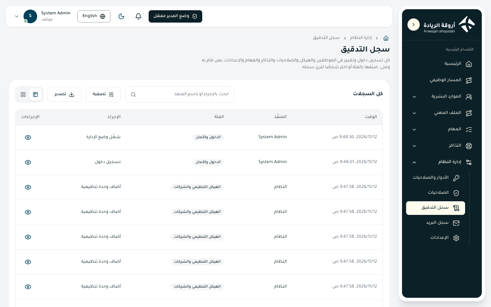
من يراها
| البند | التفصيل |
|---|---|
| مفتاح العرض | audit.view (عرض صفحة سجل التدقيق) |
| النطاق الافتراضي | الكل |
| وضع مدير المنصة | مطلوب |
| الأدوار التي تحملها افتراضيًا | دور «مدير النظام» الأساسي. ودور «مدقق المنصة» موجود في قائمة الأدوار ويبدأ بلا صلاحيات، ويمنحه المسؤول المفاتيح اللازمة. دور «موظف» وأدوار القادة لا تحملها |
ماذا تستطيع أن تفعل
| الإجراء | ما يحدث | مفتاح الصلاحية |
|---|---|---|
| فتح الصفحة والبحث والتصفية | تعرض السجل بترتيب الأحدث ويضيّقه ما تكتبه أو تختاره | audit.view (عرض صفحة سجل التدقيق) |
| أيقونة «عرض» أو النقر على الصف | تفتح نافذة «قيد التدقيق» بتفاصيله: الوقت والمنفّذ والفئة والإجراء وعنوان IP والتغييرات | audit.view |
| زر التصدير | يصدّر السجل إلى ملف بعد اختيار النطاق والأعمدة ونوع الملف (الأعمدة: الوقت، المنفّذ، الفئة، الإجراء، عنوان IP) | audit.export (تصدير سجل التدقيق) |
| فحص سلامة السجل | تجريه المنصة بنفسها كل أسبوع وتسجّل أي خلل؛ لا يوجد له زر في هذه الصفحة | audit.verify (التحقق من سلامة سجل التدقيق) |
أعمدة الجدول: الوقت، المنفّذ (أو «النظام» للأحداث الآلية)، الفئة، الإجراء. ويمكن التبديل بين الجدول والبطاقات.
كيف أفعل
معرفة ما فعله شخص
- فعّل «وضع مدير المنصة» وافتح «سجل التدقيق».
- في الفلاتر اكتب اسم الشخص أو بريده في «الشخص (الاسم أو البريد)».
- حدّد «من تاريخ» و«إلى تاريخ» إن أردت فترة معينة.
- اضغط على أي صف لترى تفاصيله.
معرفة من غيّر شيئًا معينًا
- اختر «الفئة» (مثل «الأدوار والصلاحيات»)؛ يضيّق فلتر «الإجراء» قائمته إلى إجراءات هذه الفئة.
- اختر «الإجراء»، أو اكتب في خانة البحث جزءًا من الجملة، أو رقم السجل المعني.
تصدير السجل
- صفِّ ما تريد بالفلاتر.
- اضغط زر التصدير، واختر النطاق (الصفحة الحالية أو الكل) والأعمدة ونوع الملف.
الفئات
الدخول والأمان، الموظفون، الهيكل التنظيمي والشركات، الأدوار والصلاحيات، التذاكر، المهام، إعدادات النظام، أخرى.
قواعد العمل
- كل إجراء بجملة مفهومة («نقل مهمة إلى حالة أخرى» مثلًا) وفئة، وليس باسم تقني (FR-63).
- الفلاتر: الفئة، الإجراء (جمل الفئة المختارة فقط)، الشخص (الاسم أو البريد)، من تاريخ، إلى تاريخ. والبحث يجد الجملة بأي من اللغتين، واسم المنفّذ، ورقم السجل المعني.
- إخفاء بعض القيم: قبل الكتابة يُخزَّن التغيير الذي يشبه اسم حقله كلمة سر أو سرًّا أو رمزًا أو رقم هوية أو آيبان بعبارة «[redacted]». يتم ذلك بحسب اسم الحقل وفي المستوى الأول من التغيير فقط: حقل باسم آخر (مثل مفتاح API) أو قيمة حسّاسة داخل حقل متداخل لا يشملها الإخفاء، فلا تعتمد على خلو السجل من كل قيمة حسّاسة. وتُسجَّل في الغالب أسماء الحقول التي تغيّرت لا قيمها (FR-11).
- لا يُعدَّل ولا يُحذف: كل قيد مرتبط بالسابق بتوقيع رقمي، وتمنع قاعدة البيانات تعديله أو حذفه؛ وتفحص المنصة السلسلة أسبوعيًا وتسجّل خللًا إن انكسرت (FR-75).
- الدخول بحساب موظف آخر: كل قيد يُكتب أثناءها يحمل اسم المدير بجانب اسم الموظف، ويُسجَّل بدء الجلسة وانتهاؤها.
- التوقيت: تُعرض الأوقات بتوقيت جهازك.
- للقراءة فقط: لا يوجد في الصفحة ما يغيّر السجل.
نصائح ومشكلات شائعة
- لا أجد حدثًا: ابحث بجزء من الجملة، أو وسّع الفترة، أو اختر «كل» الفئات.
- الإجراء الذي أبحث عنه غير موجود في القائمة: اختر أولًا الفئة الصحيحة، فالقائمة تعرض إجراءات الفئة المختارة.
- أريد إثبات مسؤول عن تغيير في الصلاحيات: افلتر بفئة «الأدوار والصلاحيات» وافتح القيد لترى المنفّذ والوقت والتغييرات.
31. سجل البريد المرسل
ما هذه الصفحة
تعرض كل رسالة بريد أرسلتها المنصة وحالتها: قيد الإرسال أو تم الإرسال أو فشل، مع سبب الفشل. تستخدمها لتعرف هل وصلت دعوة تفعيل لموظف، أو لماذا لم يصل إشعار بالبريد. لا يُحفظ نص الرسالة نفسه.
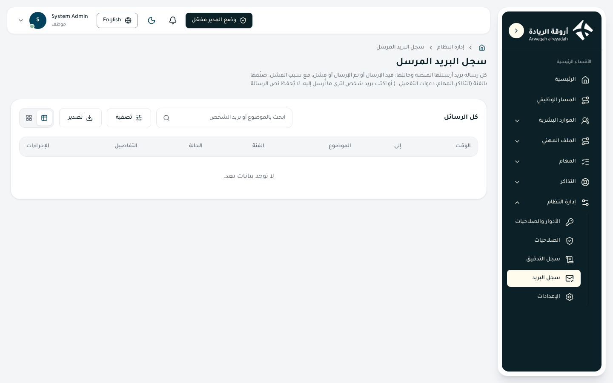
من يراها
| البند | التفصيل |
|---|---|
| مفتاح العرض | notifications.email_log (عرض صفحة سجل البريد المرسل) |
| النطاق الافتراضي | الكل |
| وضع مدير المنصة | مطلوب |
| الأدوار التي تحملها افتراضيًا | دور «مدير النظام» الأساسي فقط؛ لا يحملها دور «موظف» ولا أدوار القادة |
ماذا تستطيع أن تفعل
| الإجراء | ما يحدث | مفتاح الصلاحية |
|---|---|---|
| فتح الصفحة والبحث والتصفية | يعرض الرسائل الأحدث أولًا | notifications.email_log (عرض صفحة سجل البريد المرسل) |
| أيقونة «عرض» أو النقر على الصف | تفتح نافذة «البريد المرسل» بتفاصيل الرسالة | notifications.email_log |
| زر التصدير | يصدّر السجل إلى ملف بعد اختيار النطاق والأعمدة ونوع الملف | notifications.email_log_export (تصدير سجل البريد المرسل) |
أعمدة الجدول: الوقت، إلى، الموضوع، الفئة، الحالة، التفاصيل (سبب الفشل أو ردّ الخادم). ويمكن التبديل بين الجدول والبطاقات.
نافذة التفاصيل تعرض: الوقت، وقت الإرسال، إلى، الموضوع، الفئة، الحالة، الخطأ، ردّ الخادم.
كيف أفعل
معرفة ما أُرسل لشخص
- فعّل «وضع مدير المنصة» وافتح «سجل البريد».
- اكتب بريد الشخص في فلتر «الشخص (البريد الإلكتروني)».
- اضغط على الرسالة المطلوبة لترى حالتها.
البحث عن الرسائل الفاشلة
- اختر الحالة «فشل» في الفلاتر.
- افتح الرسالة واقرأ «الخطأ» و«ردّ الخادم».
- إن تكرر الفشل فراجع «الإعدادات ← البريد الإلكتروني» وجرّب الخدمة.
الفئات والحالات
| الفئات | الحالات |
|---|---|
| دعوة تفعيل الحساب، التذاكر، المهام، إشعارات عامة، تجربة إعدادات البريد، أخرى | قيد الإرسال، تم الإرسال، فشل |
قواعد العمل
- الفلاتر: الحالة، الفئة، الشخص (البريد)، من تاريخ، إلى تاريخ. والبحث بالموضوع أو بريد الشخص (FR-26، FR-63).
- لا يُحفظ نص الرسالة لأنه قد يحوي روابط تُستخدم مرة واحدة؛ يُحفظ المستلم والموضوع والحالة وسبب الفشل وردّ الخادم فقط.
- فئة الرسالة يحددها من أرسلها: دعوات التفعيل، التذاكر، المهام، الإشعارات العامة. والرسائل التجريبية (من تجربة خدمة البريد أو «أرسل لي تجربة» في قوالب البريد) تُصنَّف «تجربة إعدادات البريد». والرسائل القديمة تحتفظ بفئتها القديمة.
- إشعارات المهام والتذاكر لا تحمل نصًا حسّاسًا في البريد: يصل رقم المهمة أو التذكرة واسم الإدارة فقط.
- الصفحة للقراءة فقط: لا تعيد إرسال رسالة ولا تحذفها.
- الإرسال يتم بالخدمة المفعّلة في «الإعدادات ← البريد الإلكتروني»، وإن لم توجد فبإعدادات الخادم.
نصائح ومشكلات شائعة
- الحالة «قيد الإرسال» تطول: حدّث الصفحة بعد لحظات؛ وإن بقيت راجع خدمة البريد في الإعدادات.
- الرسالة «تم الإرسال» ولم تصل للموظف: تعني أن الخادم قبلها؛ اطلب منه مراجعة البريد غير المرغوب فيه، وتأكد من صحة بريده في سجله.
- لا أرى نص الرسالة: هذا مقصود؛ لا يُحفظ.
32. الإعدادات
ما هذه الصفحة
صفحة واحدة بتبويبات تجمع إعدادات الخدمات والرسائل: الترجمة والبريد الإلكتروني والحماية من الروبوتات والذكاء الاصطناعي وقوالب البريد وقوالب الإشعارات وجولة الترحيب والأمان. يظهر كل تبويب لمن يملك مفتاح عرضه فقط.
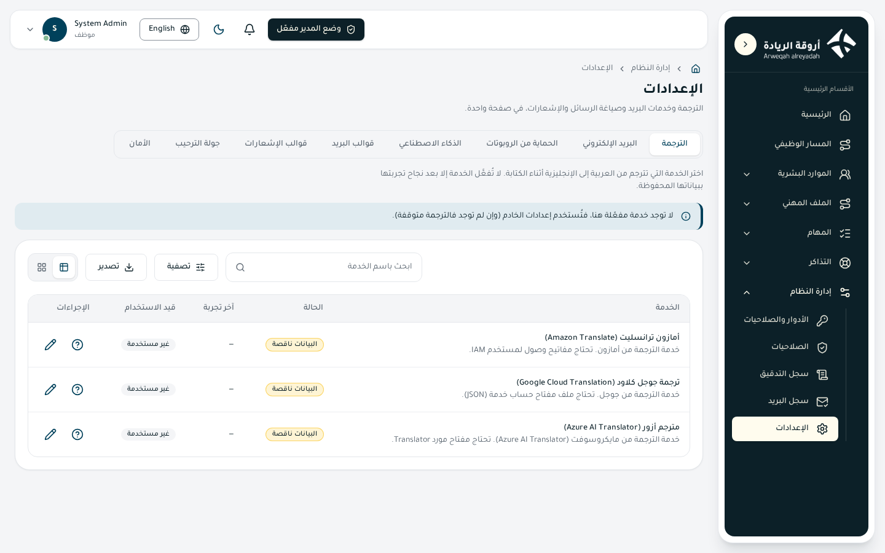
من يراها
| التبويب | مفتاح العرض | يمكن إخفاؤه كصفحة |
|---|---|---|
| الترجمة | integrations.translation_view (عرض صفحة إعدادات الترجمة) | إعدادات الترجمة |
| البريد الإلكتروني | integrations.email_view (عرض صفحة إعدادات البريد الإلكتروني) | إعدادات البريد الإلكتروني |
| الحماية من الروبوتات | integrations.captcha_view (عرض صفحة الحماية من الروبوتات) | الحماية من الروبوتات |
| الذكاء الاصطناعي | integrations.ai_view (عرض صفحة إعدادات الذكاء الاصطناعي) | خدمة الذكاء الاصطناعي |
| قوالب البريد | templates.email_view (عرض قوالب البريد الإلكتروني) | قوالب البريد الإلكتروني |
| قوالب الإشعارات | templates.notification_view (عرض قوالب الإشعارات) | قوالب الإشعارات |
| جولة الترحيب | tour.settings_view (عرض إعدادات جولة الترحيب) | جولة الترحيب |
| الأمان | security_settings.view (عرض إعدادات الأمان (الأجهزة الموثوقة وحدود الطلبات)) | الأمان |
- النطاق الافتراضي للمفاتيح كلها: الكل.
- وضع مدير المنصة: مطلوب؛ تظهر الصفحة في القائمة بعد تفعيله.
- الأدوار: دور «مدير النظام» الأساسي يحمل كل هذه المفاتيح، ولا يحملها غيره افتراضيًا (دور «مهيّئ المنصة» يبدأ بلا صلاحيات، ويمنحه المسؤول المفاتيح اللازمة). إن لم تملك مفتاح أي تبويب ظهرت رسالة «لا تملك صلاحية عرض أي من هذه الإعدادات».
خدمات الترجمة والبريد والحماية والذكاء الاصطناعي
تعرض كل تبويبة جدولًا للخدمات المتاحة (جدول أو بطاقات) بأعمدة: الخدمة، الحالة، آخر تجربة، قيد الاستخدام. وفي كل صف أيقونات: «كيف أحصل على البيانات»، تعديل، «تجربة»، وتفعيل أو إيقاف. وللجدول بحث وفلاتر (الحالة، قيد الاستخدام) وتصدير.
| الخدمات في كل تبويب | |
|---|---|
| الترجمة | أمازون ترانسليت، ترجمة جوجل كلاود، مترجم أزور |
| البريد الإلكتروني | SMTP، أمازون SES، SendGrid، مايكروسوفت 365 (Graph) |
| الحماية من الروبوتات | Cloudflare Turnstile |
| الذكاء الاصطناعي | أنثروبيك (Claude)، خدمة متوافقة مع OpenAI (Gemini المجاني وGroq…) |
| الإجراء | ما يحدث | مفتاح الصلاحية (الترجمة / البريد / الحماية / الذكاء) |
|---|---|---|
| أيقونة «كيف أحصل على البيانات» | تفتح نافذة بخطوات الحصول على المفاتيح ومعنى كل قيمة (متاحة أيضًا داخل نافذة التعديل) | مفتاح العرض |
| تعديل (النقر على الصف) | تفتح نافذة بيانات الخدمة؛ يحفظ من يملك مفتاح التعديل | integrations.translation_edit (تعديل بيانات مزودي الترجمة) / integrations.email_edit (تعديل بيانات مزودي البريد الإلكتروني) / integrations.captcha_edit (تعديل مفاتيح الحماية من الروبوتات) / integrations.ai_edit (تعديل مفتاح الذكاء الاصطناعي ونموذجه) |
| «تجربة» | تجرّب الخدمة ببيانات النموذج (ترجمة مثال، أو إرسال رسالة قصيرة لأي عنوان، أو فحص Turnstile حقيقي، أو طلب قصير للذكاء الاصطناعي) | integrations.translation_test (تجربة مزود الترجمة) / integrations.email_test (إرسال بريد تجريبي بمزود البريد) / integrations.captcha_test (تجربة مفاتيح الحماية من الروبوتات) / integrations.ai_test (تجربة مفتاح الذكاء الاصطناعي) |
| «تفعيل» أو «إيقاف» | يجعل الخدمة قيد الاستخدام أو يوقفها | integrations.translation_activate (تفعيل مزود الترجمة وإيقافه) / integrations.email_activate (تفعيل مزود البريد الإلكتروني وإيقافه) / integrations.captcha_activate (تفعيل الحماية من الروبوتات وإيقافها) / integrations.ai_activate (تفعيل الذكاء الاصطناعي وإيقافه) |
| التصدير | يصدّر قائمة الخدمات | integrations.translation_export / integrations.email_export / integrations.captcha_export / integrations.ai_export (تصدير قائمة مزودي الترجمة/البريد الإلكتروني/الحماية من الروبوتات/الذكاء الاصطناعي) |
لا استيراد في هذه القوائم لأن كل صف خدمة ثابتة وليس سجلًّا يُنشأ من ملف.
كيف أضبط خدمة وأفعّلها
- افتح «الإعدادات» واختر التبويب (مثلًا «البريد الإلكتروني»).
- اضغط أيقونة «كيف أحصل على البيانات» على الخدمة التي ستستعملها واتبع الخطوات للحصول على المفاتيح.
- افتح الخدمة بالنقر على صفها، واملأ الحقول، ثم «حفظ». تحت كل حقل تلميح قصير.
- اضغط «تجربة»؛ يجب أن تنجح التجربة بالبيانات المحفوظة نفسها.
- اضغط «تفعيل». تظهر رسالة «تم تفعيل …».
قواعد الخدمات
- لا تُفعَّل خدمة إلا بعد اكتمال بياناتها ونجاح تجربة بهذه البيانات نفسها. حالة الخدمة: «البيانات ناقصة» ثم «لم تُجرَّب» ثم «تمت تجربتها».
- تغيير بيانات الخدمة المستخدمة يوقفها حتى تُجرَّب وتُفعَّل من جديد.
- خدمة واحدة قيد الاستخدام في كل نوع في الوقت نفسه.
- المفاتيح السرية لا تُعرض بعد الحفظ (تظهر «محفوظ»)، وتُحفظ مشفّرة، ولا تُكتب في سجل التدقيق، وتُنزع من نصوص الأخطاء. اترك الحقل السري فارغًا لإبقاء القيمة المحفوظة.
- بلا خدمة مفعّلة: الترجمة والبريد يستعملان إعدادات الخادم إن وُجدت (وإلا تتوقف الترجمة)؛ والحماية من الروبوتات لا يُطلب فيها أي فحص؛ وزر «حلّل بالذكاء الاصطناعي» لا يُعرض (FR-59، FR-60، FR-78).
- الحماية من الروبوتات: عند تفعيلها تظهر أداة Cloudflare في خطوة البريد من صفحة الدخول، ويُتحقق من إجابتها قبل إرسال أي شيء؛ وإن تعذر الوصول إلى Cloudflare خلال 4 ثوانٍ يدخل الشخص ويُسجَّل ذلك. دخول مايكروسوفت وخطوة الرمز غير مشمولين.
- الذكاء الاصطناعي: نص ملف المسمى المرفوع يُرسل إلى الخدمة، وهو بيانات شركة وليس بيانات موظفين؛ فلا تضع فيه بيانات شخصية. وتبقى قراءة الذكاء الاصطناعي تُراجَع بشريًا قبل الحفظ.
أدلة الحصول على المفاتيح (مختصر)
لكل خدمة نافذة بالخطوات الكاملة بالعربية والإنجليزية ومعنى كل حقل، وتذكير: «احفظ المفاتيح سرًّا. من يملكها يستطيع استعمال الخدمة على حسابك».
الترجمة
- أمازون ترانسليت: أنشئ مستخدم IAM بسياسة
translate:TranslateTextفقط، ثم مفتاح وصول، وانسخ معرّف المفتاح والمفتاح السري فورًا (يظهر السر مرة واحدة)، واختر منطقة تتوفر فيها الخدمة. - جوجل كلاود: فعّل Cloud Translation API في مشروعك، وأنشئ حساب خدمة بدور «Cloud Translation API User»، ثم مفتاح JSON والصق الملف كله في الحقل.
- أزور: أنشئ مورد Translator، وانسخ Key 1 والمنطقة من «Keys and Endpoint»، واترك العنوان الافتراضي.
البريد الإلكتروني
- SMTP: اسأل المزوّد عن الخادم والمنفذ (587 أو 465) واسم المستخدم وكلمة المرور؛ شغّل «اتصال آمن» للمنفذ 465 فقط. Microsoft 365: الخادم smtp.office365.com والمنفذ 587 مع تفعيل SMTP AUTH.
- أمازون SES: وثّق نطاقك أو عنوانًا، واطلب الخروج من وضع التجربة، وأنشئ مستخدم IAM بصلاحية
ses:SendEmailفقط. - SendGrid: أنشئ مفتاح API بصلاحية Mail Send فقط، ووثّق المرسِل.
- مايكروسوفت 365 (Graph): سجّل تطبيقًا في Entra، وانسخ معرّف التطبيق ومعرّف المستأجر، وأنشئ سرًّا وانسخ «Value»، وامنح صلاحية Mail.Send من نوع Application مع موافقة المسؤول، واستعمل صندوقًا حقيقيًا مرسِلًا.
الحماية من الروبوتات
- Turnstile: من لوحة Cloudflare ← Turnstile أضف أداة بنطاق المنصة بوضع «Managed»، وانسخ «Site key» و«Secret key»، ثم «تجربة» وحلّ الفحص، ثم «تفعيل».
الذكاء الاصطناعي
- أنثروبيك: من console.anthropic.com أضف وسيلة دفع ورصيدًا، وأنشئ مفتاح API وانسخه فورًا، واترك النموذج كما هو أو غيّره. تدفع بحسب الاستخدام.
- خدمة متوافقة مع OpenAI: للمجاني: «Get API key» من Google AI Studio، واترك العنوان والنموذج كما هما. ولخدمة أخرى اكتب عنوانها (https) ونموذجًا يدعم إجابات JSON المنظّمة.
قوالب البريد وقوالب الإشعارات
تعدّل هنا صياغة كل رسالة بريد ترسلها المنصة (دعوة تفعيل الحساب وإطار الإشعارات المرسلة بالبريد) وكل إشعار داخلي (الجرس) بالعربية والإنجليزية. القائمة بأعمدة: الرسالة، المجال (الدخول، التذاكر، المهام، الإشعارات)، الحالة («الصياغة الأصلية»، «معدَّلة»، «بانتظار الاعتماد»)، آخر تعديل، مع بحث وفلاتر وتصدير.
| الإجراء | ما يحدث | مفتاح الصلاحية (البريد / الإشعارات) |
|---|---|---|
| فتح رسالة | يفتح نافذة بالصياغة بلغتين ومعاينة بقيم تجريبية | templates.email_view / templates.notification_view |
| تعديل النص وحفظه | يحفظ الصياغة الجديدة أو يرسلها للاعتماد | templates.email_edit (تعديل قوالب البريد الإلكتروني) / templates.notification_edit (تعديل قوالب الإشعارات) |
| «أرسل لي تجربة» (البريد فقط) | يرسل نسخة تجريبية إلى بريدك أنت | templates.email_test (إرسال قالب بريد تجريبي إلى نفسك) |
| «العودة للأصل» | يمحو التعديل ويعيد الصياغة الأصلية | templates.email_reset (إعادة قالب بريد إلى صياغته الأصلية) / templates.notification_reset (إعادة قالب إشعار إلى صياغته الأصلية) |
| «اعتماد» / «رفض» | يعتمد تعديلًا ينتظر أو يرفضه | templates.email_approve (اعتماد تعديلات قوالب البريد الإلكتروني) / templates.notification_approve (اعتماد تعديلات قوالب الإشعارات) |
| مفتاح «يلزم اعتماد شخص ثانٍ للتعديلات» | يشغّل أو يوقف اعتماد شخص ثانٍ | templates.email_settings (تشغيل اعتماد شخص ثانٍ لقوالب البريد) / templates.notification_settings (تشغيل اعتماد شخص ثانٍ لقوالب الإشعارات) |
| التصدير | يصدّر قائمة القوالب | templates.email_export / templates.notification_export |
كيف أعدّل رسالة
- افتح «الإعدادات» ثم «قوالب البريد» (أو «قوالب الإشعارات») واضغط على الرسالة.
- اختر اللغة (العربية أو الإنجليزية) وعدّل العنوان والنص. في البريد: السطر التمهيدي ونص الزر ولونا الشريط العلوي والزر، من ألوان الهوية السبعة فقط.
- اكتب
@داخل النص لإدراج قيمة تملؤها المنصة (اسم الشخص، رابط التفعيل، رقم المهمة…)، واختر من القائمة المعروضة. - راجع المعاينة، وفي البريد اضغط «أرسل لي تجربة» لترى النتيجة.
- اضغط «حفظ» (أو «إرسال للاعتماد» إن كان اعتماد الشخص الثاني مفعّلًا).
قواعد القوالب
- القيم المتاحة محددة: لا تُستعمل إلا القيم التي تملؤها المنصة لتلك الرسالة، وبعضها «يجب إبقاؤه» (مثل رابط التفعيل). ترفض المنصة قيمة غير معروفة أو حذف قيمة لازمة.
- البريد نص منسّق (غامق، مائل، تسطير، قوائم، رابط)، وتنظّفه المنصة (بلا سكربتات أو صور) وتبني الصفحة بنفسها بالشعار والتذييل ومن اليمين لليسار للعربية؛ الإشعارات نص عادي فقط.
- الصياغة الأصلية محفوظة في المنصة، وتُرسل إن لم يُعدَّل شيء أو إن تعذّر إنتاج رسالة معدَّلة، فلا يوقف تعديل خاطئ الرسائل.
- اعتماد شخص ثانٍ (متوقف في البداية): عند تشغيله يبقى كل تعديل «بانتظار الاعتماد» وتُرسل الصياغة الحالية حتى يعتمده شخص غير كاتبه؛ ولا يستطيع كاتب التعديل اعتماده بنفسه. يمكن لمن يملك مفتاح الاعتماد الاعتماد أو الرفض.
- تأخير بسيط: قد تتأخر الصياغة الجديدة نحو 30 ثانية لتصل كل أجزاء النظام.
- التدقيق: كل تعديل واعتماد ورفض وعودة للأصل يُسجَّل في سجل التدقيق (FR-64، FR-65).
تبويب الأمان
| الإعداد | معناه | القيم |
|---|---|---|
| أيام الجهاز الموثوق | مدة تخطي رمز التطبيق على متصفح موثوق بعد الدخول بمايكروسوفت؛ 0 يوقف الخيار | من 0 إلى 365 (الافتراضي 0) |
| حد الطلبات في الدقيقة | عدد الطلبات التي يرسلها عنوان واحد في الدقيقة قبل أن يُطلب منه الانتظار. تحميل صفحة يرسل عشرات الطلبات فالقيمة المنخفضة توقف المنصة؛ للدخول حد أشد منفصل | من 120 إلى 100000 (الافتراضي 600) |
| السماح لمديري النظام بالدخول بحساب موظف آخر | يشغّل ميزة «الدخول كـ» | مُوقَف افتراضيًا |
| الدقائق بلا نشاط قبل انتهاء الجلسة | مدة خمول جلسة «الدخول كـ» قبل أن تنتهي | من 5 إلى 240 (الافتراضي 30) |
| نطاقات البريد المسموحة | نطاق في كل سطر لبريد العمل عند إضافة موظف | فارغة = arweqah.sa فقط |
| الإجراء | مفتاح الصلاحية |
|---|---|
| عرض التبويب | security_settings.view |
| حفظ الإعدادات وحفظ النطاقات | security_settings.edit (تعديل إعدادات الأمان) |
| استخدام «الدخول كـ» من قائمة الموظفين أو صفحة الموظف | impersonation.start (الدخول بحساب موظف آخر (دخول كـ)) مع وضع مدير المنصة |
الدخول بحساب موظف آخر (FR-85)
- يعمل مدير المنصة (وضع المدير مفعّل) بحساب أي موظف نشط بصلاحياته ونطاقه، بلا رمز الموظف. مُوقَف افتراضيًا ويُشغَّل من هنا.
- شريط ثابت يقول «أنت تعمل الآن بحساب … — دخول بواسطة …» مع زر «العودة لحسابي»، وتنتهي الجلسة بالعودة إلى الحساب، أو بعد دقائق الخمول المحددة، أو عند إيقاف الميزة.
- يُرفض الدخول بحساب نفسك، أو حساب غير نشط، أو من داخل جلسة «دخول كـ» أخرى. وأثناء الجلسة تُرفض أمور منها: تفعيل وضع المدير، وتغيير دخول الموظف نفسه (المصادق والأجهزة والجلسات والملف الشخصي)، وأدواره ومجموعاته وصلاحياته، وحالة حسابه، وإعدادات الأمان.
- كل ما يُسجَّل في التدقيق أثناءها يحمل اسم المدير، ويصل الموظف إشعار بعد الانتهاء.
نطاقات البريد: يُكتب كل نطاق في سطر (مثل partner.org)، وتُرفض القيم غير الصحيحة بالاسم. وإذا كانت القائمة فارغة لا يُسمح إلا بالنطاق الافتراضي. يرفض النظام إضافة موظف ببريد عمل خارج النطاقات (FR-77).
تبويب جولة الترحيب
يعرض خطوات الجولة التي يراها كل موظف عند أول دخول، وجولة الإدارة للمدير. تستطيع تعديل عنوان الخطوة ونصها بالعربية والإنجليزية (الحقل الفارغ يعيد النص الأصلي) وإيقافها، وتقديمها أو تأخيرها، وإعادتها إلى الأصل. أما ما يُظلَّل وأين فثابت في النظام. وشرح الجولة نفسها في قسم آخر من الدليل.
| الإجراء | مفتاح الصلاحية |
|---|---|
| عرض التبويب | tour.settings_view (عرض إعدادات جولة الترحيب) |
| تعديل نص الخطوة وتفعيلها أو إيقافها | tour.settings_edit (تعديل نص خطوة في جولة الترحيب وتفعيلها أو إيقافها) |
| تقديم/تأخير الخطوة | tour.settings_reorder (إعادة ترتيب خطوات جولة الترحيب) |
| إعادة الخطوة للأصل | tour.settings_reset (إعادة خطوة في جولة الترحيب إلى نصّها الأصلي) |
| التصدير | tour.settings_export (تصدير قائمة خطوات جولة الترحيب) |
نصائح ومشكلات شائعة
- زر «تفعيل» غير ظاهر: لا يظهر إلا بعد نجاح التجربة بالبيانات المحفوظة (الحالة «تمت تجربتها») وبمفتاح التفعيل.
- أُوقفت الخدمة بعد تعديلها: هذا مقصود؛ جرّبها وفعّلها من جديد.
- لا تصل الرسائل: افتح «سجل البريد» وانظر «الخطأ» و«ردّ الخادم».
- أريد تبديل الخدمة المستخدمة: فعّل الخدمة الأخرى بعد نجاح تجربتها، فتحلّ محلّ الأولى.